年度合輯：2023 年¶
共收錄 190 篇文章。
1. 國土計畫法與區域計畫法中在土地利用管制上之異同¶
發布日期: 2023-01-03
• (一) 相同處
-
兩者管制主要適用於都市計畫與國家公園範圍以外之地區。
-
兩者皆屬分區管制（容積率、建蔽率、高度管制）結合許可制。
-
兩者皆有分區劃設與使用地編定。
-
兩者皆有針對管制前得予從來使用，必要時強制拆遷之規範。
• (二) 相異處
-
分區劃設：前者為4大功能分區，分別為國土保育地區、海洋資源地區、城鄉發展地區與農業發展地區；後者則有一般農業區、特定農業區、鄉村區等11種分區。
-
分類劃設：前者在各功能分區下有再進一步分類，如第1類、第2類及其他必要分類；後者則無分類。
-
使用地編定： (1) 前者應依國土計畫國土功能分區分類編定適當的使用地，即計畫編定；而後者則囿於當時作業時間人力之限制，多採現況編定。 (2) 前者使用地仍待主管機關訂定；後者則編定有19種使用地。原則上兩者應有所不同。
-
使用項目訂定：前者應就各該功能分區及分類之土地使用原則訂定適當的使用項目，並配合編定使用地，故不同功能分區下之同一種使用地，其使用項目會有所差異；然而，區域計畫下非都市土地所編定之使用地，其容許使用項目及許可使用細目並未配合分區差異而有所不同，無法凸顯各該分區下使用地之特性及條件差異。
5. 許可制： (1)目的不同：前者於符合國土功能分區及其分類之使用原則下，從事一定規模以上或性質特殊之土地使用，應由申請人檢具規定之書圖文件申請使用許可，惟使用許可不得變更國土功能分區、分類；後者則為開發利用，依各該區域計畫之規定，由申請人擬具開發計畫，檢同有關文件，向直轄市、縣（市）政府申請，報經各該區域計畫擬定機關許可後，辦理分區變更。 (2)負擔不同：使用許可應繳納國土保育費及影響費；開發許可則應繳納開發影響費。 (3)審議條件不同：前者除土地使用適宜性、交通與公共設施服務水準、自然環境及人為設施容受力之一致性審議條件外，尚有針對各功能分區特性之特定條件；後者則僅有一致性之審議條件。 (4)審議機關不同：前者針對功能分區劃分中央與縣市主管機關之權限；後者則主要由中央主管機關審議，並依規模得委辦縣市政府審議。¶
注：本文圖片存放於 ./images/ 目錄下
2. 土地法第73條之1第3項優先購買權之性質¶
發布日期: 2023-01-04
一般學者主張具有債權效力，然亦有部分學者主張具有物權效力。
• (一) 主張債權效力之理由：土地法第73條之1第3項未明定「出賣人違反規定而將所有權移轉者，其移轉不得對抗優先購買權人。」準此，土地法第73條之1第3項之優先購買權具有債權效力。
• (二) 主張物權效力之理由：逾期未辦理繼承登記土地及建築改良物標售作業要點第13點規定：「土地法第73條之1第3項之優先購買權與其他法律規定之優先購買權競合時，優先適用土地法第73條之1之優先購買權。」準此，土地法第73條之1第3項之優先購買權先於物權效力之土地法第104條及第107條而行使。因此，土地法第73條之1第3項之優先購買權具有物權效力。
• (三) 主張兼具物權效力與債權效力之理由：土地法第73條之1第3項優先購買權之次序為繼承人、合法使用人、其他共有人。第二次序為合法使用人，其優先購買權類似土地法第104條，因此具有物權效力。第一次序為繼承人，其次序優先於合法使用人，因此應具有物權效力。第三次序為其他共有人，其優先購買權類似土地法第34條之1第4項，因此具有債權效力。
綜上，筆者主張第(三)說。亦即土地法第73條之1第3項之優先購買權，第一次序繼承人及第二次序合法使用人皆具有物權效力，第三次序其他共有人則具有債權效力。¶
注：本文圖片存放於 ./images/ 目錄下
3. 土地徵收補償方式¶
發布日期: 2023-01-05
土地徵收之補償方式有下列三種：
• (一) 現金補償：土地徵收以現金補償為主，並應符合下列原則：
-
相當補償原則：補償額須與損失額相當，以保障被徵收人之財產權。
-
迅速補償原則：補償應儘速發給，不得遷延時日。
• (二) 抵價地補償：區段徵收時，除以現金補償外，亦得以徵收後可供建築之土地折算抵付（此種土地稱為抵價地）。須注意者，抵價地補償僅限於區段徵收，一般徵收無抵價地補償。
• (三) 債券補償：區段徵收土地所需之資金，得由中央或直轄市主管機關發行土地債券（平§5Ⅰ）。依法徵收之土地，得以現金搭發土地債券補償地價（平施§10）。須注意者，債券補償須與現金補償搭發，不得全部發給債券；且限於區段徵收，一般徵收無債券補償。¶
注：本文圖片存放於 ./images/ 目錄下
4. 概念比一比 16 ｜登記生效、登記處分¶
發布日期: 2023-01-05
登記生效、登記處分：我國不動產物權變動是採登記要件主義，且為強制登記，然而依不動產權利取得方式的不同又分為「登記生效」與「登記處分」，主要差異在於權利人取得不動產權利時間點的不同，本篇將為大家說明兩者的差異。
登記生效、登記處分之定義
．登記生效
不動產權利的取得，必須經過登記，始生效力。(民法第 758 條第 1 項)
舉例來說，Jasper 向 Hank 買了一棟房子，簽約後，還必須經過所有權移轉登記的手續， Jasper 才算真正擁有這棟房子。
．登記處分
不動產權利的取得，若非因一般法律行為(如買賣、贈與等)，而是因為繼承、強制執行、徵收、法院判決等等而取得不動產物權者，不必登記即取得不動產權利，只是如果要處分不動產，則必須先經登記。(民法第 759 條)
舉例來說，Erin 因繼承取得了一筆土地，這筆土地在被繼承人死亡時就已經屬於 Erin ，但是如果 Erin 想把這筆土地賣給 Jasper ，則需先辦理繼承登記的手續，才可以處分土地。
Erin 老師提醒
民法第 759 條的法院判決，指的是「形成判決」，若為「給付判決」則仍需經過登記才生效喔！
．延伸閱讀
原文出處：Jasper 不動產
5. 土地的登記機關¶
發布日期: 2023-01-08
土地機關的登記：地政士在辦理土地登記的案件時，最常去的機關就是「地政事務所」，而地政事務所其實只是登記機關中的其中一個單位，本篇就帶各位了解，除了我們最常看到的地政事務所以外，還有哪些登記機關，以及有哪些條件下，得不由土地所在地的登記機關辦理登記吧！
土地的登記機關之意義
．一、原則
土地登記，由土地所在地之直轄市、縣(市)地政機關辦理之。
．二、例外
1.另設或分設登記機關者：
但該直轄市、縣(市)地政機關在轄區內另設或分設登記機關者，由該土地所在地之登記機關辦理之。
2.跨轄區者：
建物跨越二個以上登記機關轄區者，由該建物門牌所屬之登記機關辦 理之。
3.跨登記機關者：
直轄市、縣(市)地政機關已在轄區內另設或分設登記機關，且登記項目已實施跨登記機關登記者，得
由同直轄市、縣(市)內其他登記 機關辦理之。
4.跨縣市申請者：
經中央地政機關公告實施跨直轄市、縣(市)申請土地登記之登記項目，得由全國任一登記機關辦理之。
實例說明
．一、原則：
如：直轄市、縣（市）的「地政局、地政處」
．二、例外
1.另設或分設登記機關者：
如：桃園地政事務、板橋地政事務所
2.跨轄區者：
如：假使一個土地同時跨越彰化及台中，即依照「門牌所屬之登記機關」辦理登記
3.跨登記機關者：
如：原本中壢的土地應於中壢地政事務所辦理，但是有實施跨登記的項目者，則得於桃園地政事務所
或是八德地政事務所 或其他桃園市內的各個地政事務所辦理土地登記。
4.跨縣市申請者：
如：登記項目有實施跨直轄縣市辦理的話，台北的登記案件就可以在高雄辦理等等
Logan 老師提醒
最後同學要記得「地政事務所」 是屬於政府機關、 而未來考上地政士開始執業的各位，「地政士事務所」是屬於私人民間的企業喔！
．延伸閱讀
原文出處：Jasper 不動產
6. 房屋稅減半徵收之適用：平民住宅、國民住宅、社會住宅、臨時工廠、特定工廠？¶
發布日期: 2023-01-10
法規可能已修正
本文發布（2023-01-10）後，文中引用的 房屋稅條例第15條（2024-01-03 修正）、住宅法第3條（2023-12-06 修正）有修正，內容可能與現行規定不同，請以全國法規資料庫的現行條文為準。
首先，房屋稅減半徵收之相關規定情形如下：
房屋稅條例第 15 條第2項 私有房屋有下列情形之一者，其房屋稅減半徵收： 一、政府平價配售之平民住宅。 二、合法登記之工廠供直接生產使用之自有房屋。 三、農會所有之自用倉庫及檢驗場，經主管機關證明者。 四、受重大災害，毀損面積佔整棟面積三成以上不及五成之房屋。
農產品市場交易法第 17 條農產品批發市場之土地及房屋，減半徵收房屋稅、地價稅或田賦。
以下就相關名詞說明之：
• 一、平民住宅 其中，何謂平價配售之平民住宅，根據釋字第267號及臺財稅字第37639號、台財稅第31337號函示：
-
配售住宅每戶建坪不得超過12坪。
-
合乎政府訂定配住人身分標準配售予平民而非標售者。
-
平價住宅之售價不大於興建成本，其貸款興建之利息部分，由政府負擔者。
-
政府配售予違建拆除戶之整建住宅。
• 二、國民住宅 國民住宅，係指由政府計劃，依下列方式，用以出售、出租、貸款自建或提供貸款利息補貼，供收入較低家庭居住之住宅（國民住宅條例第2條(已廢止)）：
• 一、政府直接興建。 二、貸款人民自建。 三、獎勵投資興建。 四、輔助人民自購。
政府配售予違建拆除戶、攤販、災害戶、退役軍人、國軍遺族等之國民住宅，不得減半課徵房屋稅（台財稅第31337號函）。因此，國民住宅原則與一般房屋相同，而無減半徵收適用。
• 三、社會住宅
社會住宅指由政府興辦或獎勵民間興辦，專供出租之用之住宅及其必要附屬設施（住宅法第3條）。社會住宅於興辦期間，直轄市、縣（市）政府應課徵之地價稅及房屋稅，得予適當減免。減免之期限、範圍、基準及程序之自治條例，由直轄市、縣（市）主管機關定之，並報財政部備查。租稅優惠，實施年限為五年，其年限屆期前半年，行政院得視情況延長之（住宅法第22條）。因此，社會住宅房屋稅是否減半徵收則由地方政府決定。
• 四、合法登記之工廠供直接生產使用之自有房屋
• (一) 合法登記工廠 根據工廠管理輔導法第10條，工廠設廠完成後，應依本法規定申請登記，經主管機關核准登記後，始得從事物品製造、加工。因此，合法登記工廠，是指依工廠管理輔導法完成工廠登記者。
• (二) 供直接生產使用 係指從事生產必須之建物、倉庫冷凍廠及研究化驗室等房屋，並不包括辦公室、守衛室、餐廳等房屋在內。（高雄市稅捐稽徵處，2016）
• (三) 自有房屋 上述所稱「自有房屋」，應指符合下列規定者而言（財政部62/01/05台財稅第30076號令）：
-
工廠為公司或法人組織者，其房屋應為公司或法人本身所有。
-
工廠為合夥組織者，其房屋應為合夥事業所有或依工廠設立登記規則（現行法為工廠管理輔導法）登記工廠營業負責人本身所有。
-
工廠如為獨資經營者，其房屋應為依工廠登記設立規則登記工廠營業負責人本身所有。
故以個人名義登記之建物，如係符合前述供該個人自己負責經營之獨資或合夥事業設立工廠登記供直接生產使用者，房屋稅得適用減半徵收。如係出租供他人設立工廠登記，即使直接供生產使用，仍無房屋稅減半徵收規定之適用。（高雄縣政府地方稅務局，2009）
• 五、補辦臨時工廠
中華民國97年3月14日前既有低污染之未登記工廠，其符合環境保護、消防、水利、水土保持等法律規定者，於中華民國104年6月2日前，得向地方主管機關繳交登記回饋金，申請補辦臨時工廠登記（工廠管理輔導法第34條）。按工輔法第34條規定，經補辦臨時登記之工廠於臨時工廠登記失效前，雖免依區域計畫法、都市計畫法及建築法等規定處罰，惟仍有違反各該規定使用之事實，且「未登記工廠補辦臨時工廠登記辦法」第15條亦規範該等工廠取得土地及建築物合法使用證明文件前，事業主體及工廠登記事項變更等限制，故臨時登記工廠於臨時工廠登記證明文件有效期間內，與合法登記之工廠有別，尚難謂其屬房屋稅條例第15條第2項第2款所稱「合法登記之工廠」。（台財稅字第10200013360號）
• 六、特定工廠
依核定之工廠改善計畫完成改善者，得向直轄市、縣（市）主管機關申請特定工廠登記，有效期限至本法中華民國108年6月27日修正之條文施行之日起20年止。依「特定工廠登記辦法」取得特定工廠登記者，於有效期間內，雖得不受土地使用及建築法規之相關處罰，並得准予接水、接電及使用，但仍須取得土地及建物合法使用之證明文件，才可依相關規定申請登記為合法工廠，如僅取得特定工廠登記，係處於未登記工廠受政府納管輔導成為合法工廠階段，與房屋稅條例所稱合法登記之工廠有別，仍應依實際使用情形(工廠)按營業用稅率（3%）課徵房屋稅。（臺中市政府地方稅務局，2022）（參台財稅字第11104592360號函）¶
注：本文圖片存放於 ./images/ 目錄下
7. 土地登記規則§ 6｜登記完畢之意涵¶
發布日期: 2023-01-11
登記完畢之意涵：土地權利經過登記機關，依法令規定辦理登記，其中「登記是否完畢」關涉土地登記的效力，而同學在背誦「土地登記規則」的條文時，最常出現的字眼包括「登記完畢」，而登記完畢究竟是什麼呢？本篇向各位介紹登記完畢的種類及其意涵
登記完畢之意涵之意義
土地權利經登記機關依本規則登記於登記簿，並校對完竣，加蓋登簿及校對人員名章後，為登記完畢。
土地登記以電腦處理者，經依系統規範登錄、校對，並異動地籍主檔完竣後，為登記完畢。
實例說明
將法條剖析基本上可以區分為兩大類：
．一、以人工處理
土地權利經登記機關依本規則登記於登記簿，並校對完竣，加蓋登簿及校對人員名章後，為登記完畢。
．二、以電腦處理
土地登記以電腦處理者，經依系統規範登錄、校對，並異動地籍主檔完竣後，為登記完畢。
Logan 老師提醒
在土地法第 43 條規定中：「依本法所為之登記，有絕對效力。」係指『土地登記效力發生的時間點』，即是土地於已完成法定登記程序（亦即登記完畢），就會發生物權變動的絕對效力的意思喔。
．延伸閱讀
原文出處：Jasper 不動產
8. 司法院解釋及憲法法庭判決所揭示之特別犧牲，人民是否有徵收補償請求權？¶
發布日期: 2023-01-12
司法院解釋及憲法法庭判決若揭示人民蒙受特別犧牲，則人民得否直接依據該解釋或判決，請求國家辦理徵收補償。茲分下列二種情形說明：
• (一) 不得直接援引憲法請求徵收補償：
憲法係國家立法及施政之方針，亦即憲法指導國家立法及施政。準此，人民向國家請求給付必須依據法律，不得依據憲法。進而，人民不得援引司法院解釋及憲法法庭判決，向國家請求給付。
司法院解釋或憲法法庭判決，雖揭示特別犧牲，但人民不得直接援引該解釋或判決，請求國家辦理徵收，給予補償；而須由國家制定法律，依據法律辦理徵收，給予補償。此即「無法律，無補償」。然，也衍生政府怠於制定法律，造成此等解釋或判決之宣示意義大於實質意義。茲列舉較著名者如下：
-
公共設施保留地：公共設施保留地若不為取得，則土地所有權人既無法及時獲得對價，另謀其他發展，又限於都市計畫之整體性而不能撤銷使用之管制，致減損土地之利用價值。其所加於土地所有權人之不利益將隨時間之延長而遞增。雖都市計畫法第49條至第51條之1等條文設有加成補償、許為臨時建築使用及免稅等補救規定，然非分就保留期間之久暫等情況，對權利受有個別損害，而形成特別犧牲者，予以不同桯度之補償。為兼顧土地所有權人之權益，如何檢討修正有關法律，係立法問題，合併指明（司法院釋字第336號解釋理由書）。
-
既成道路：既成道路符合一定要件而成立公用地役關係者，其所有權人對土地既已無從自由使用收益，形成因公益而特別犧牲其財產上之利益，國家自應依法律之規定辦理徵收給予補償，各級政府如因經費困難，不能對上述道路全面徵收補償，有關機關亦應訂定期限籌措財源逐年辦理或以他法補償（司法院釋字第400號解釋）。
-
既成道路或都市計畫道路埋設地下設施物：主管機關對於既成道路或都市計畫道路用地，在依法徵收或價購以前埋設地下設施物妨礙土地權利人對其權利之行使，致生損失，形成其個人特別之犧牲，自應享有受相當補償之權利（司法院釋字第440號解釋）。
-
農田水利會水利使用之土地：原提供農田水利會水利使用之土地，應照舊使用。如屬人民所有，而未以租用、價購或其他方式取得權源，因其已形成個人之特別犧牲，即應依法徵收，給予相當之補償，並於三年內擬定徵收補償相關計畫，籌措財源，俾於合理期限內逐步完成徵收補償，始符憲法第15條保障人民財產權之意旨（憲判字第155號判決）。
• (二) 得直接援引憲法請求徵收補償：
雖無法律，即無補償。然亦有例外：
需用土地人因興辦土地徵收條例第3條規定之事業，穿越私有土地之上空或地下，致逾越所有權人社會責任所應忍受範圍，形成個人之特別犧牲，而不依徵收規定向主管機關申請徵收地上權者，土地所有權人得請求需用土地人向主管機關申請徵收地上權。未就土地所有權人得請求需用土地人向主管機關申請徵收地上權有所規定，與上開意旨不符。有關機關應自本解釋公布之日起一年內，基於本解釋意旨，修正土地徵收條例妥為規定。逾期未完成修法，土地所有權人得依本解釋意旨，請求需用土地人向主管機關申請徵收地上權（司法院釋字第747號解釋）。
綜上，實務以否定說為準；如採肯定說，須解釋文或判決文有明定者為限。¶
注：本文圖片存放於 ./images/ 目錄下
9. 民法 §1140｜代位繼承¶
發布日期: 2023-01-15
代位繼承：實務上偶爾會遇見父母早祖父母一步死亡，而留有年幼孩子的情況，往後祖父母死亡時，年幼孩子是否能代替父母繼承祖父母的遺產呢？其實這就是所謂代位繼承之情形，本篇將帶您深入了解代位繼承的意義及要件！
代位繼承之意義
民法 1140 條規定：「第 1138 條所定第一順序之繼承人，有於繼承開始前死亡或喪失繼承權者，由其直系血親卑親屬代位繼承其應繼分。」
代位繼承顧名思義，就是「代替某人繼承」他原本應該繼承的部分。
代位繼承之要件
- 被代位繼承人(乙)原為被繼承人(甲)之第一順位繼承人。
- 代位繼承人(AB)是被代位繼承人(乙)的直系血親卑親屬。
- 被代位繼承人(乙)在繼承開始前死亡或喪失繼承權。
實例說明
Q：
假設甲無配偶，有子女乙丙丁，乙不幸先死亡，留有子女AB，之後甲死亡，留有 900 萬的遺產，此時遺產將如何依法分配？
A：
丙、丁：各 300 萬。
A、B：各 150 萬。
(因AB符合民法 1140 條代位繼承之規定，可以共同繼承甲 1/3 的應繼分。)
Erin 老師提醒
常有同學提問，若繼承人拋棄繼承，其子女是否可以代位繼承？答案是不可以的喔！注意代位繼承其中一個要件是：被繼承人在繼承開始「前」死亡或喪失繼承權；而拋棄繼承是已經繼承了遺產才得以拋棄，並非於繼承開始「前」喪失(註)，所以不符代位繼承的規定。
註：民法第 1147 條規定，繼承於被繼承人死亡時才開始，所以被繼承人死亡之前不發生繼承的情況，也無法預先拋棄繼承權。
．延伸閱讀
原文出處：Jasper 不動產
10. 地籍測量實施規則修正重點¶
發布日期: 2023-01-17
最近修法不少，包含平均地權條例、地籍清理條例、租賃住宅市場及發展管理條例、地籍測量實施規則等
地籍測量實施規則此次修正有約40條，大多是與地政考試有關的條文，此次專欄針對幾個比較重要的考點修正，予以簡要彙整如下（劃底線為修正文字），其餘部分於過完年後，我們地測課程都會更新及說明喔。
⚫ 申請土地複丈原因
土地有下列情形之一者，得申請土地複丈（以下簡稱複丈）： 一、因自然增加、浮覆、坍沒、分割、合併或變更。 二、因界址曲折需調整。 三、依建築法第四十四條或第四十五條第一項規定調整地形。 四、宗地之部分設定地上權、農育權、不動產役權或典權。 五、因主張時效完成，申請時效取得所有權、地上權、農育權或不動產役權。 六、鑑界或位置勘查。
土地所有權人除申請鑑界複丈，經登記機關派員使用儀器於實地測量後埋設制式界標之外，尚可依內政部相關函釋意旨，申請土地位置勘查。上開複丈作業皆係針對申請標的，協助明瞭其位置所在，不涉及土地標示變動，爰刪除第一款鑑界文字，整併新增為第六款申請項目。（參修正對照表之修正理由）
⚫ 申請土地複丈文件
第二百零七條 申請複丈，除本規則另有規定外，應提出下列文件： 一、土地複丈申請書。 二、權利證明文件。 三、申請人身分證明。 四、其他經中央主管機關規定之文件。 前項第二款至第四款檢附之文件，能以電腦處理達成查詢者，得免提出。 複丈涉及原有標示變更者，應於申請複丈時，填具土地登記申請書，一併申請土地標示變更登記。
此次修法調整為跟我們上課一樣的條列方式。
⚫ 退還土地複丈費
第二百十四條 申請人申請複丈案件，有下列情形之一者，得於十年內請求退還其已繳土地複丈費： 一、依第二百十一條之一規定申請撤回。 二、申請再鑑界，經查明前次複丈確有錯誤。 三、經通知補正屆期未補正或未依補正事項完全補正而駁回。 四、其他依法令應予退還。 前項第一款、第三款之情形，其已支出之費用應予扣除。 申請人於十年內重新申請複丈者，得予援用其得請求退還之土地複丈費。
之前上課就有提到土登已配合行政程序法改為10年，但測量沒改。此次修法真的配合改為10年了。
⚫ 囑託複丈案件
第二百二十二條 各級法院、檢察機關或行政執行分署囑託之複丈案件，受囑託機關應依受囑託事項辦理，其土地複丈成果僅提供囑託機關。
囑託辦理之複丈案件，登記機關應本於鑑定人之特別學識，依司法機關囑託提供鑑定成果，並按囑託函內容逕送鑑定成果書圖供其裁判參考。又爭訟事件涉及訴訟當事人或第三人，非僅與土地所有權人相關，現行第一項後段對土地所有權人不得發給土地複丈成果圖部分似未妥適，爰修正為正面規範是類案件應僅提供囑託機關，以資周延。（參修正對照表之修正理由）
⚫ 界址調整複丈
第二百二十五條 土地界址曲折調整者，應檢附界址曲折調整協議書，並以同一地段、地界相連、使用性質相同之土地可達成減少地界線段為限。如為實施建築管理地區，並應符合建築基地法定空地分割辦法規定。 前項土地設有他項權利者，應先徵得他項權利人之同意。
界址曲折調整係就相鄰土地間，其界址分布符合曲折之情形時，方得適用。是以，如界址調整後反形成地界曲折或不利使用等情形，自非法所許，為免界址曲折調整案件實務執行認定爭議，爰定明是類案件之標的除以同一地段、地界相連、使用性質相同之土地為限外，應以截彎取直為之，並參考相關法令增列土地界址曲折調整（調整地形）協議書。（參修正對照表之修正理由）
⚫ 建物複丈原因
建物有下列情形之一者，得申請建物複丈： 一、因增建或改建。 二、因部分滅失、分割、合併或其他標示變更。 三、因全部滅失或基地號、門牌號等變動需勘查。
建物因基地號、門牌號等標示變更所申請複丈，或建物全部滅失之消滅登記前須先經勘查等，登記機關僅辦理現場勘查認定作業，尚與前述複丈作業有別，惟仍屬民眾得申請之項目。（參修正對照表之修正理由）
⚫ 申請建物測量文件
第二百六十一條之一 申請建物測量，除本規則另有規定外，應提出下列文件： 一、建物測量申請書。 二、權利證明文件。 三、申請人身分證明。 四、其他經中央主管機關規定之文件。 前項第二款至第四款檢附之文件，能以電腦處理達成查詢者，得免提出。
⚫ 退還建物測量費
申請人申請建物測量案件，有下列情形之一者，得於十年內請求退還其已繳建物測量費： 一、依第二百六十四條之一規定申請撤回。 二、經通知補正屆期未補正或未依補正事項完全補正而駁回。 三、其他依法令應予退還。 前項第一款、第二款之情形，其已支出之費用應予扣除。 申請人於十年內重新申請建物測量者，得予援用其得請求退還之建物測量費。
配合行政程序法改為10年退還時效。
⚫ 退還建物測量費
建物平面圖測繪邊界依下列規定辦理： 一、建物以其外牆之外緣為界。 二、兩建物之間有牆壁區隔者，以共用牆壁之中心為界；無牆壁區隔者，以建物使用執照竣工圖說區分範圍為界。 三、使用執照竣工圖說載有依建築技術規則檢討設置之陽臺者，其突出部分以外緣為界，並以附屬建物辦理測量。 四、地下層依建物使用執照竣工圖說所載樓層面積之範圍為界。 中華民國一百零七年一月一日前已申請建造執照者，或都市更新事業計畫已報核，並依都市更新條例一百零八年一月三十日修正施行前第六十一條第一項及第二項規定期限申請建造執照之建物，其屋簷、雨遮及地下層之測繪，依本條一百零六年一月九日修正前規定辦理。
- 辦理轉繪建物平面圖作業，除依據竣工圖之各樓層平面圖外，亦需注意專共圖說配置情形，必要時尚需參考立面圖、結構圖等圖說，以確認測繪登記範圍。
2. 我國土地登記制度係為實現國家土地政策及維護社會交易安全制度，不動產登記與測量內容及程序係依據土地法授權，由中央地政機關統一訂之，第一項第三款所稱陽臺應有明確界定。爰參考建築技術規則建築設計施工編第一條第二十款規定，直上方有遮蓋物之平臺為陽臺；且其設置依同條第三款及第一百六十二條第一項第一款規定檢討該建物之建築面積與容積總樓地板面積之定義予以修正，以避免實務執行認定疑義。（參修正對照表之修正理由）¶
注：本文圖片存放於 ./images/ 目錄下
11. 違章建築可否主張時效取得？¶
發布日期: 2023-01-19
茲分二種情形說明：
• (一) 占有他人土地：占有人無權占有他人土地，所興建之房屋必屬違章建築。爰要求占有人應提出該建築係合法建物之證明文件，將使時效取得地上權形同具文。是以，司法院釋字第291號解釋指明，因無從提出該項合法建物之證明文件，致無法完成其地上權之登記，與憲法保障人民財產權之意旨不符。
• (二) 占有他人建物：占有人無權占有他人建物，該建物為違章建築。因違章建築無從辦理登記，占有人縱具備時效取得之要件，仍不得時效取得其所有權。
綜上，上開二種情形係屬兩事。第(一)種情形，時效取得地上權登記；占有他人土地，
占有人所興建之建物得為違章建築。第(二)種情形，時效取得建物所有權登記；占有他人建物，建物本身不得為違章建築。
須強調的是，占有人占有未辦理建物所有權第一次登記之合法建物，始得主張時效取得建物所有權。然，占有人之時效利益僅及於建物，未及於土地。換言之，占有人對於土地不得主張時效取得所有權（指對未登記土地）及地上權（指已登記土地），因此占有人時效取得之建物對於土地仍屬無權占有，土地所有人仍得對地上建物行使物上請求權，訴請拆屋還地。¶
注：本文圖片存放於 ./images/ 目錄下
12. 概念比一比 17 ｜滯納金、滯報金、怠報金¶
發布日期: 2023-01-19
滯納金、滯報金、怠報金：我國稅捐的課徵，除了稅捐本身外，另有利息、滯納金、怠報金、滯報金、強制執行相關費用等等，屬於稅捐附帶給付之項目，其中同學最常搞混的，就是滯納金與怠報金的差別了，本篇將以契稅條例第 24 、 25 條為例，讓大家清楚分辨兩者的差異。
滯納金、滯報金、怠報金之定義
．滯納金
稅捐義務人依稅法規定逾期繳納稅捐者，應加徵納金，也就是義務人「未繳納」時之處罰。（如：稅捐稽徵法第 20 條、契稅條例第 25 條之規定）
．滯報金、怠報金
稅捐義務人未依稅法規定期限履行申報稅捐義務時，則依其情形，應加徵滯報金或怠報金，也就是義務人「未申報」時之處罰，依其輕重順序為滯報金 → 怠報金。
（如：契稅條例第 24 條之規定）
Erin 老師提醒
稅捐稽徵法第 20 條已於 110 年 11 月 30 日修正，並於 111 年 1 月 1 施行，該條文因參酌司法院釋字第 746 號解釋意旨，將滯納金加徵方式，由「每逾二日」加徵 1 %，修正為「每逾三日」加徵 1 %，而稅捐稽徵法為各稅法之特別法，基於特別法優於普通法原則，修正後所有稅法關於滯納金的規定，都以「每逾三日」加徵 1 %為準喔！
．延伸閱讀
原文出處：Jasper 不動產
13. 民法 § 170 | 無權代理¶
發布日期: 2023-01-26
無權代理：在日常生活中，我們常會遇見有人以他人的代理人身分簽訂合約或辦理事務，而所謂「代理」，指的就是以「本人的名義」為法律行為之意，而非以「代理人自己」的名義為之。 而於某些情形下，不肖人士會假裝自己是他人的代理人，並以他人之名義做成法律行為，導致他人的權利義務發生變動，此即屬「無權代理」，法律上為了保護真正權利人、防免不肖人士任意假冒他人名義而為法律行為，因此訂定民法第170條無權代理之規定，明定無權代理行為的法律效果必需視「本人是否承認」而定，若本人承認，則該代理行為才會對本人發生效力；反之，代理行為對本人不生效力。
無權代理之意義
無代理權人以代理人之名義所為之法律行為，非經本人承認，對於本人不生效力。
實例說明
甲以丙的名義與乙簽訂Ａ車買賣契約，約定丙將Ａ車出售給乙，乙須給付新台幣五十萬元，甲並將Ａ車交付給乙，然實際上丙根本未授予代理權給甲，試問Ａ車買賣契約效力？
於上述例子中，丙並未授予甲代理權，故甲並非有代理權之人，惟甲（自己）仍以丙（本人）之代理人的名義，與乙簽訂買賣契約，此即無代理權人以代理人名義所為之法律行為，依照民法第170條第1項之規定，該買賣契約於丙（本人）承認前，對丙不生效力。
Josh 老師提醒
無權代理與無權處分的概念很類似，但實際上卻不一樣。無權處分的概念下，規範的是「處分行為」，屬於「物權行為」範疇，且須行為人以「自己的名義」為之；無權代理的概念則係規範「法律行為」，且須行為人以「本人之代理人」名義自居，才會該當條文的要件，考試時記得要看清楚題目的論述喔！
．延伸閱讀
原文出處：Jasper 不動產
14. 民法 § 118 | 無權處分¶
發布日期: 2023-01-29
無權處分：在日常交易行為中，出賣人係有權利之人乃多數情形，但少數情況中，會有「無權利之人」或「非真正權利人」擅自處分他人之物，例如將他人車子的所有權移轉給第三人等，此即所謂「無權處分」。 無權處分的行為，在法律上必須視真正權利人是否要承認，如果真正權利人選擇承認該無權處分行為，則該處分行為才會對發生效力；反之，該無權處分行為不生效力，換言之，即為無效，也因為該無權處分的效力必須等待真正權利人決定是否承認才能塵埃落定，因次在真正權利人做成決定前，該無權處分行為的效力會是「效力未定」。
無權處分之意義
無權利人就權利標的物所為之處分，經有權利人之承認始生效力。
實例說明
甲與乙簽訂Ａ車買賣契約，約定甲將Ａ車出售給乙，乙須給付新台幣五十萬元，甲並已將Ａ車交付給乙，然事後才發現Ａ車實際上為丙所有，甲只是為其保管而已，試問甲移轉Ａ車所有權之處分行為效力？於上述例子中，甲並非Ａ車之所有人，則無權利人甲對權利標的物Ａ車所為之處分，即屬無權處分，依照民法第 118 條之規定，其處分行為效力未定，須視有權利人丙是否承認而論其效力。
．延伸閱讀
原文出處：Jasper 不動產
15. 未經領得建造執照而銷售公寓大廈：最高法院109年度台上字第1433號判決¶
發布日期: 2023-01-31
最近平均地權條例修法禁止換約，在同學問題中，要先釐清「換約」與「轉讓紅單」的不同：
• 紅單：簽約前的購屋預約單。也就是還沒簽約，只是一個優先簽約的權力。
• 換約：簽約後土地登記前轉讓他人。也就是在預售屋還未登記前，更換契約買受人。但不論哪一種，都必須建商已經拿到建造執照才得以銷售。
以下彙整一個最高法院判決對於未經領得建造執照而銷售公寓大廈之損害賠償責任。
某公寓大廈建造執照經核准變更設計時，該棟僅14層樓，後又再進行變更設計，改為17樓，惟主管機關要求應依規定將原不計入容積之防空避難室部分，納入容積計算，地上樓層面積隨之減少，故原規劃7戶變更為5戶，惟該未被核准的17樓某戶（係爭房地）已由A購買紅單，後轉讓給B與建商簽訂買賣契約，再與C簽訂讓與承諾書及讓與同意書（換約）。因此，辦理系爭房地轉售予C時，系爭房屋僅掛件申請主管機關審查變更設計，尚未經核准建造，當不得作為預售屋之買賣標的，其竟將其他樓層之平面圖，充當系爭房屋之平面圖，辦理轉售，致C誤以為買受之標的物屬於依法令得預售之建物，因而交付價金 890萬元，惟該建商卻不能給付系爭房屋。
按違反保護他人之法律，致生損害於他人者，負賠償責任，民法第184條第2 項前段定有明文。所謂違反保護他人之法律者，係指以保護他人為目的之法律，亦即一般防止妨害他人權益或禁止侵害他人權益之法律而言；或雖非直接以保護他人為目的，而係藉由行政措施以保障他人之權利或利益不受侵害者，亦屬之。查公寓大廈管理條例第58條第1項規定：「公寓大廈起造人或建築業者，非經領得建造執照，不得辦理銷售。」乃課公寓大廈起造人或建築業者為銷售前，應就所銷售房屋先領得建造執照之義務，目的在於保障公寓大廈預售屋之買受人，避免因所購房屋未能取得建造執照，致權益受侵害。是不論以何種方式銷售，均在上開規定禁止之列，縱以預約、預售、含有優先議價權或優先購買權之紅單為名，及就其所衍生權利為同意轉讓者，亦同。此項規定自屬保護他人之法律。
因此，本案依據違反公寓大廈管理條例管理條例第58條第1項規定，出售不存之系爭房屋，並根據侵權行為之法律關係請求該建商、銷售經紀人連帶賠償損害。¶
注：本文圖片存放於 ./images/ 目錄下
16. 土地國有與土地私有¶
發布日期: 2023-02-02
• (一) 土地國有
-
優點： (1)絕對地租消失：土地私有制度，由於所有權獨占，為使邊際土地加入生產行列，地主必須索取絕對地租。因地主索取絕對地租，造成產品價格上漲，對消費者不利。倘土地私有改為土地國有，絕對地租就會消失。 (2)漲價自動歸公：所稱漲價，指土地自然增值，即因人口增加、經濟繁榮、社會安定、公共建設等，而造成地價上漲部分。土地自然增值為地主不勞而獲，故應課徵土地增值稅予以收歸公有。倘土地私有改為土地國有，土地自然增值自動歸公。 (3)公共建設用地順利取得：土地私有制度，國家推行公共建設，必須徵收私有土地。然，徵收私地，常造成人民抗爭，推展不易。倘土地私有改為土地國有，用地取得順利，公共建設如期進行。
-
缺點： (1)發生政府失靈：土地國有，政府統籌規劃土地利用。但政府並非萬能，如有人謀不臧、貪污舞弊、請託賄賂等，導致土地規劃及分派不當，影響土地利用。 (2)土地難以地盡其利：公部門土地開發，由於涉及政治層面（如民意代表、利益團體等），往往以社會最大公約數作為政治妥協，土地難以達成最有效率之使用。 (3)土地無法永續利用：土地私有制度，人民基於永久之所有權，保護地力，並促進投資改良，最後使荒漠變成良田。土地國有制度，人民恐因短期之使用權而掠奪經營，最後使良田變成荒漠。
• (二) 土地私有
-
優點： (1)發揮財產權功能：土地私有制度，人民擁有財產權。藉著財產權之作用，誘使地主投資改良土地。當地主無需該土地時，地主會將其移轉於出價最高的人，而出價最高的人就是最能有效利用該土地之人。 (2)市場機制與價格機能：土地私有制度，藉著市場機制與價格機能，指導土地使用，而決定土地使用性質及土地使用強度。 (3)土地使用合理配置：土地私有制度，靠著競租理論配置土地使用。所謂競租理論，指每一塊土地均有很多潛在競爭者參與競標，最後以競標地租最高者取得土地使用權。競標地租最高者，代表最有能力使用該土地之人。
-
缺點： (1)發生市場失靈：土地私有制度，雖依賴市場機制與價格機能運行，然市場仍有盲點。當市場發生土地投機、土地獨占或土地兼併，價格機能無法藉由本身力量自行復原，發生市場失靈現象。 (2)房市泡沫化：不動產景氣過熱時，炒房投機嚴重，房價與地價高漲，房市泡沫化。房市泡沫將影響正常經濟活動，且泡沫一旦破滅，衝擊整體經濟，帶來長期衰退。 (3)貧富不均惡化：富有的人，不斷購置房地；田連阡陌，而更加富有。貧窮的人，買不起房地；貧無立錐之地，而更加貧窮。此一現象，違反居住之公平正義。
• (三) 結論
-
土地國有制度，將發生政府失靈；土地私有制度，將發生市場失靈。
-
共產國家，一般採行土地國有制度，酙酌加入市場機制；民主國家，一般採行土地私有制度，酙酌加入計畫管制。換言之，現今世界，無土地完全國有制度的國家，亦無土地完全私有制度的國家。
-
我國平均地權制度，主張土地私有，並以上級所有權與下級所有權劃分公私產權界線，以謀求地盡其利及地利共享。
[圖片1]
文章圖片¶

17. 民法 § 169｜表見代理¶
發布日期: 2023-02-02
表見代理：在公司經營過程中，有些董事長會將自己的印章交給秘書、特助等重要之人保管，有些甚而會讓秘書、特助握有相當的決定權限，這也就讓有心人有機可乘，導致秘書、特助擅自把董事長的財產轉讓給第三人，或是擅自簽訂文件等等，這時候就可能成立民法「表見代理」的情形。 所謂表見代理，指的就是真正權利人做了一個「授予代理權的外觀行為，但實際上沒有授權的意思」，或是「明明知道有人以自己的代理人自居，卻不為反對之意思」，這些行為都會讓外人以外真正權利人真的有授予代理權，這就是「表見代理」，如果「表見代理人」因為這樣以代理人的名義做了法律行為，那真正權利人還是要負授權人責任的，畢竟是因為真正權利人自己的行為，使外人誤信其有代理權的授予。
表見代理之意義
由自己之行為表示以代理權授與他人，或知他人表示為其代理人而不為反對之表示者，對於第三人應負授權人之責任。但第三人明知其無代理權或可得而知者，不在此限。
實例說明
甲為丙的特助，丙為了方便甲為其處理事務，故將自己的印章、公司大小章等都交給甲保管。某日，乙找上門，想要買丙的車，甲因此在未經丙的同意下，以丙之代理人名義，將丙的車賣給了乙。試問上述買賣契約效力？
於上述例子中，丙雖未授予甲代理權，然而丙將其印章、公司大小章等重要印鑑都交給甲保管的行為，可能會讓外界的人誤以為其有授予代理權給甲，這時候甲若以丙的代理人自居而為法律行為，即屬「表見代理」之行為，而由於此等使人誤以為甲有代理權之情形係因丙自己的授權外觀所導致，故依照民法第 169 條的規定，丙應負授權人責任。
．延伸閱讀
原文出處：Jasper 不動產
18. 經紀業管理條例 §23 ｜不動產說明書¶
發布日期: 2023-02-05
在不動產交易時會常常看到不動產說明書出現，今天就來聊聊何謂不動產說明書，包含出現時機和記載規定。
不動產說明書之要點
．一、製作＆簽章
1. 經紀業仲介或代銷在處理不動產交易時，其不動產說明書應交由指派之經紀人簽章。
2. 不動產說明書經委託人簽認後，委託人應留存其副本。
．二、解說
1. 經紀人員在執行業務前，應將說明書交由委託人簽章，並誠實的以說明書和交易相對人進行解說。
2. 如有隱瞞不實之事，經紀業和經紀人員負連帶責任。
．三、交付時機
1. 雙方當事人在「簽訂買賣契約書時」時，由相對人在不動產說明書上簽章。
2. 說明書視為契約的一部分。
．四、不得記載之內容
1. 此說明書僅供參考
2. 須繳回說明書
3. 只能使用「實際所有權面積」這個名詞，不能使用如受益面積、銷售面積等其他類似詞語
4. 出售預售屋時，不得記載非法的夾層設計和面積。
5. 不能用其他說明書來替代不動產說明書。
6. 不能出現預測房價上漲空間等相關敘述。
Ding 老師提醒
同學們在進行不動產交易時，一定要留意不動產說明書的記載內容，這樣在真的發生問題時，你才能依法要求損害賠償哦。
．延伸閱讀
原文出處：Jasper 不動產
19. 登記錯誤遺漏或虛偽之損害賠償責任：最高法院大法庭110年度台上大字第3017號裁定¶
發布日期: 2023-02-07
根據土地法第68條規定，「因登記錯誤遺漏或虛偽致受損害者，由該地政機關負損害賠償責任。但該地政機關證明其原因應歸責於受害人時，不在此限。前項損害賠償，不得超過受損害時之價值。」究竟地政事務所是負無過失責任，抑或是故意或過失為賠償要件，過去司法判決上見解有所歧異，因而送大法庭來做統一見解之裁定。
此大法庭裁定會是土地登記的重要考點，同學應多加注意！
本周專欄將相關重點，摘要與整理如下：
• 一、案例事實 甲主張第三人丙持其弟即訴外人丁之身分證、印章及丁名義之房屋、土地（下稱系爭不動產）所有權狀，向乙地政事務所申請辦理以系爭不動產設定丁為抵押人、伊為抵押權人，擔保債權總金額新臺幣（下同）375萬元之最高限額抵押權（下稱系爭抵押權）登記，並以丁之名義向伊借款250萬元。嗣系爭抵押權登記遭乙以係虛偽登記為由塗銷，伊向丙聲請強制執行而無效果，受有系爭借款250萬元無法取回之損害，爰依土地法第68條第1項規定，請求乙如數賠償。
• 二、法律問題 基礎事實甲所主張因「虛偽登記」致受損害之情形，乙地政事務所是否應依上開規定負損害賠償責任？倘屬肯定，乙地政事務所所屬登記人員之歸責原則為何？
• 三、裁定主文 因登記錯誤遺漏或虛偽致受損害者，除非該地政機關能證明其原因應歸責於受害人，否則即應負損害賠償責任，不以登記人員有故意或過失為要件。
• 四、主文(無過失責任)與鄭法官不同意見書(過失責任)之理由彙整
| 面向 | 無過失責任(台上大字第3017號) | 過失責任(不同意見書) |
|---|---|---|
| 面向 | 無過失責任(台上大字第3017號) | 過失責任(不同意見書) |
| 1.法規體系 | 土地法第68條規定為國家賠償法第2條第2項之特別規 定，應優先適用。 亦即雖國賠法以公務員有故意或過失為要件， 但土地法並未有此規定。 |
國家賠償法採國家代位責任， 即國家賠償完後再向有重大過失之登記人員求償， 該代位責任本以國家係就公務員故意或過失之違法行為代 為負責為立論基礎。 |
| 2.立法目的 | 土地法第68條之損害賠償立法目的為： (1)貫徹土地登記之公示力及公信力 (2)保障權 利人之權利 (3)維護交易安全 亦即從上述目的來看 ，為最大的保障權利及安全，應採無過失責任。 |
從土地登記目的-登記正確性，進而採實質審查制來看： 如採過失責任原則－方符土地登記實質審查之高度注意義 務，確保登記之正確性惟如採無過失責任原則－會造成： (1)難以落實善良管理人注意義務及嚴謹的審查程序( 2)影響損害賠償之預防（簡單說，就是採無過失的話， 規範嚴謹的審查作用就不大了， 因為不管認不認真都要賠。） |
| 3.法條文義 | 文義既未明示以登記人員之故意或過失為要件， 原則上自應由地政機關就登記不實之結果， 負無過失之賠償責任， 且不以該不實登記是否因受害人以外之第三人行為所致， 而有不同。 |
土地法第68條第1項前段並無如同其他法律所規定的「 不論故意或過失」文字。 又同條但書提及只要地政機關舉證可完全歸責受害人， 即地政機關無任何過失，即可免除損害賠償責任， 與所謂無過失責任尚有不同。 |
| 4.責任分配 | 基於責任衡平化之原則(1)地政機關可就應歸責於受害 人之登記不實，免除損害賠償責任， 以適度調和其所負之責任(2)「損害賠償， 不得超過受損害時之價值」， 即以受害人實際所受之積極損害為地政機關賠償範圍， 不包括消極損害（所失之利益）在內， 以限縮賠償責任範圍。(3)採取登記儲金制度， 以登記費之一部作為賠償之用，俾分散風險， 避免造成國家財政負擔。 (4)限制登記人員僅就重大過失負償還責任， 俾分散風險， 避免登記人員責任過重亦即雖採無過失主義， 但土法有責任衡平與風險分散的設計。 |
審查依據多為其他機關製作或核發之文書， 卻由地政機關承擔無過失責任， 欠缺風險來源責任分配之合理化。 |
注：本文圖片存放於 ./images/ 目錄下
20. 借名登記¶
發布日期: 2023-02-09
• 一、最高法院民事大法庭裁定－－108年度台上大字第1636號裁定
非原住民乙欲購買原住民甲所有原住民保留地經營民宿，為規避山坡地保育利用條例第37條第2項、原住民保留地開發管理辦法第18條第1項規定，乃與原住民丙成立借名登記契約，以丙名義與甲簽訂買賣契約，甲以該地為乙設定地上權後，將所有權移轉登記予丙。乙丙間之借名登記契約、甲丙間之買賣契約、甲為乙設定地上權及將所有權移轉登記予丙之行為，無異實現非原住民乙取得原住民保留地所有權之效果，自違反上開禁止規定，依民法第71條本文規定，應屬無效。
• 二、考題分析
甲為原住民，擁有原住民保留地A，今非原住民乙打算於A地經營休閒農場與餐廳，乃與甲商議以新臺幣五百萬元購買A地，甲同意。乙隨即先在A地設定期限二十年之地上權，並在給付價金後，乙商得另一位原住民丙之同意，由甲將A地辦理所有權移轉登記於原住民丙名下，但擬由乙做為真正的A地所有權人。本案在所有登記作業完成後因當事人間發生爭執，致進入司法程序。
• (一) 請詳細分析當事人間法律關係，敘明理由判斷本案中A地所有權歸屬於何人？ (二)法院認定A地登記名義應回到甲身上，問承辦地政事務所應採何種登記方式辦理？（111年原住民三等特考）
【解答】
• (一) A地所有權之歸屬：
-
依山坡地保育利用條例第37條第2項規定，原住民取得原住民保留地所有權，如有移轉，以原住民為限。又，依原住民保留地開發管理辦法第18條第1項規定，原住民取得原住民保留地所有權後，除政府指定之特定用途外，其移轉之承受人以原住民為限。
-
當事人為規避上開規定，以迂迴方法達成該規定所禁止之相同效果之行為，違反「原住民保留地之移轉，其承受人以原住民為限」之立法意旨，依民法第71條前段規定：「法律行為，違反強制或禁止之規定者，無效。」因此相關法律行為之效力如下：(1)乙與丙簽訂之借名登記契約，無效。 (2)甲與丙簽訂之買賣契約，無效。 (3)甲為乙設定地上權之行為，無效。 (4)甲將所有權移轉登記予丙之行為，無效。
綜上，本案中A地所有權歸屬於甲。
• (二) 地政事務所辦理登記之方式：法院認定A地登記名義應回到甲身上，承辦地政事務所依據法院判決辦理「塗銷登記」。亦即，塗銷丙之所有權及乙之地上權。¶
注：本文圖片存放於 ./images/ 目錄下
21. 地政士辦理假買賣真贈與之刑事責任：臺灣高等法院高雄分院104上易字第138號判決、臺灣士林地方法院105訴字第128號判決¶
發布日期: 2023-02-14
實務上地政士為協助委託人「節稅」，或許會有一些「建議」。 然而，其中有關假買賣真贈與之作法，已有許多刑事判決，地政士收受報酬並不高（還會被沒入），卻受刑責處罰，實得不償失，宜多所注意。 這部分亦可能在一些實例題出現，同學可準備一些相關論述。
• 一、使公務員登載不實罪（臺灣高等法院高雄分院104上易字第138號）
甲委由地政士丙將其土地出售給其孫乙，但實際上並無出售本件土地之真意，渠3人共同基於使公務員登載不實之犯意聯絡，由甲及乙檢附上蓋有2人印文之本件土地所有權買賣移轉契約書為附件，連同土地登記申請書委由丙以「買賣」為原因，向K地政事務所遞件申請土地所有權移轉登記。
本件土地實際上甲欲以贈與方式，移轉土地所有權予乙，而當時被告乙之經濟生活狀況及主觀意願，其確無買受本件土地之能力及真意。被告丙雖辯稱以買賣作為登記原因係甲等人之決定，並有檢附相關支付價金證明云云，然審諸渠既擔任執業代書，對於稅捐相關法規及土地交易流程本即知之甚詳…被告丙既清楚知悉甲實欲將本件土地贈與被告乙，業如前述，最終卻以「買賣」為登記原因送件，其主觀上對於上開「買賣」原因關係乃不實事項之情即有所認知，而對於此部分犯行亦同有犯意聯絡及行為分擔。丙巳證稱有向甲、乙介紹買賣與贈與交易異同，嗣經甲、乙共同決定以買賣為登記名義乙節。…被告丙辯稱：我是確認甲與乙要用買賣做原因，才以此事由辦理土地登記，不知道他們實際上是否為贈與云云，均核與事證未合，難認為可採。
刑法第214條使公務員登載不實罪之成立，須一經他人之聲明或申報，公務員即有登載之義務，並依其所為之聲明或申報予以登載，而屬不實之事項者，始足構成。地政機關辦理土地所有權移轉登記時，僅須審核形式上之要件是否具備即足，對於土地所有權移轉之實質上是否真正，並無審認之責，倘行為人明知所申辦之土地所有權移轉登記，實質上並非真正，仍以該不實之事項向地政機關申辦登記，使地政機關承辦之公務員登載於職務上所掌之相關公文書內，自與上開犯罪構成要件相當。
因此，三人犯刑法第214條使公務員登載不實罪。渠乙及丙就上開犯行與甲彼此間有犯意聯絡及行為分擔，均為共同正犯。法官認定他們行為足生損害於地政機關對於不動產登記管理及稅務機關核課稅捐之正確性，所為實屬不該；尤以被告丙身為執業代書，熟知不動產交易實務上此種為求避稅以買賣為名掩藏贈與之實之交易類型有觸法之虞且層出不窮，猶仍實施前開犯行，其可非難性更甚於甲乙。
• 二、幫助逃漏稅捐罪（臺灣士林地方法院105訴字第128號判決）
• A. 為B之子，A欲將其所有K地贈與B，委請受顧某地政士事務所擔任登記助理員之C，代為辦理系爭土地、建物之所有權移轉登記及有關之稅務事項。B及C均明知A與B間就系爭土地及建物，實際上並無買賣關係存在，惟若以「贈與」為所有權移轉登記原因，納稅義務人B須依一般稅率經核課較高額之土地增值稅，無法適用土地稅法第34條第1項出售自用住宅用地之土地增值稅優惠稅率，為使B得以適用優惠稅率逃漏土地增值稅，B與C共同基於使公務員登載不實之犯意聯絡，決定佯以「買賣」作為系爭土地及建物之所有權移轉登記原因。不知情之地政事務所承辦公務員經形式審查後，將B因「買賣」取得系爭土地及建物所有權之不實事項，登載於職務所掌之土地、建物登記簿等公文書，足以生損害於地政機關對於不動產登記管理及稅捐稽徵機關對於土地增值稅核課之正確性，C幫助B以上述詐術，逃漏按一般稅率與優惠稅率核課之土地增值稅差額337萬9,120元；嗣C辦妥系爭土地、建物所有權移轉登記及有關之稅務事項後，收受B給付之現金報酬6,400元。
按刑法第214 條使公務員登載不實事項於公文書罪，須一經他人之聲明或申報，公務員即有登載之義務，並依其所為之聲明或申報予以登載，而屬不實事項者，始足構成。若其所為之聲明或申報，公務員尚須為實質之審查，以判斷其真實與否，始得為一定之記載者，即非本罪所稱之使公務員登載不實。又土地登記事項中，移轉原因為其中重要事項之一，具有公信性，各種不同移轉登記原因，所憑課稅標準，各有不同，如買賣與贈與或遺產繼承等課稅標準不同，行為人明知該項買 賣為移轉登記原因係不實之事項，竟以之申請移轉登記，自足損害於地籍之管理，即土地登記之公信性，及政府稅課之正確性，應依刑法第214條使公務員登載不實罪論處。地政事務所僅須依遺產及贈與稅法第42條規定，審核有無檢附稅款繳清證明書等，至該案件是否屬遺產及贈與稅法第5條規定以贈與論之情事，非屬地政機關審查事項等情。換言之，地政事務所承辦公務員僅就申請人有無檢附稅款繳清證明書、證件是否齊備、證件權利內容有無瑕疵等事項，進行形式審查，至於申請書所載移轉登記原因是否屬實（即A與B間就系爭土地及建物實際上有無買賣關係存在），非屬地政機關審查事項。因此，此部分行為，B、C均係犯刑法第214條使公務員登載不實罪，且具有犯意聯絡及行為分擔，為共同正犯。
為適用土地稅法第34條第1項出售自用住宅用地之土地增值稅優惠稅率，使被告B僅須繳納較低額之土地增值稅，即佯以「買賣」之不實移轉原因，向稅捐稽徵處申報系爭土地之移轉而施詐術，使其誤按優惠稅率核課土地增值稅，使被告B逃漏按一般稅率與優惠稅率核課之土地增值稅差額337萬9,120元，是核被告B所為，係犯稅捐稽徵法第41條之逃漏稅捐罪。
爰審酌被告C身為地政士登記助理員，不思依循法規，據實辦理系爭土地、建物之所有權移轉登記及有關稅務事項，竟為圖賺取報酬，使納稅義務人之被告B獲取逃漏土地增值稅之不當利益，與被告B共同以不實所有權移轉原因辦理相關程序，所為顯非有當，且C幫助B逃漏之土地增值稅數額高達337萬9,120元，對於國家稅收之不良影響非微。
登記助理員C為稅捐稽徵法所規定執行業務之合法代理人。被告C明知被告B非因買賣取得系爭土地所有權，竟為使被告B得以適用優惠稅率，少繳土地增值稅，佯以「買賣」之不實移轉原因，向稅捐稽徵處申報系爭土地之移轉，幫助被告B逃漏前開土地增值稅，是核被告C此部分所為，係犯稅捐稽徵法第43條第2項、第1項執行業務之合法代理人幫助逃漏稅捐罪，應加重其刑。處有期徒刑4個月。屬C犯罪所得之新臺幣6,400元，沒收之，如全部或一部不能沒收或不宜執行沒收時，追徵其價額。¶
注：本文圖片存放於 ./images/ 目錄下
22. 都市計畫通盤檢討之法律性質¶
發布日期: 2023-02-16
甲擁有位於T市都市計畫範圍內土地A，並於A地上建有獨棟透天建築物一幢供自己家庭居住之用。T市府辦理都市計畫通盤檢討時，為改善當地交通長期壅塞問題，決定將道路B由鄰里級12公尺寬度拓寬為30公尺做為區域級道路，因此必須徵收A地。甲對於道路B之拓寬不服，認為都市計畫侵害其權益，在都市計畫公告後即以T市府為被告機關提起都市計畫行政訴訟。請依都市計畫之法律性質與主管機關權限分配，分析甲之起訴是否有誤。（111年原住民三等特考）
【解答】
• (一) 都市計畫通盤檢討之法律性質：司法院釋字第742號解釋指出：
-
都市計畫擬定計畫機關依規定所為定期通盤檢討，對原都市計畫作必要之變更，屬法規性質，並非行政處分。惟如其中具體項目有直接限制一定區域內特定人或可得確定多數人之權益或增加其負擔者，基於有權利即有救濟之憲法原則，應許其就該部分提起訴願或行政訴訟以資救濟，始符憲法第16條保障人民訴願權與訴訟權之意旨。
-
都市計畫之訂定（含定期通盤檢討之變更），影響人民權益甚鉅。立法機關應於本解釋公布之日起二年內增訂相關規定，使人民得就違法之都市計畫，認為損害其權利或法律上利益者，提起訴訟以資救濟。如逾期未增訂，自本解釋公布之日起二年後發布之都市計畫（含定期通盤檢討之變更），其救濟應準用訴願法及行政訴訟法有關違法行政處分之救濟規定。
基上，行政訴訟法增訂第二編第五章都市計畫審查程序（即行政訴訟法第237條之18至第237條之31）。
• (二) 甲之起訴有誤：依行政訴訟法第237條之18第1項規定，人民、地方自治團體或其他公法人認為行政機關依都市計畫法發布之都市計畫違法，而直接損害、因適用而損害或在可預見之時間內將損害其權利或法律上利益者，得依規定，以核定都市計畫之行政機關為被告，逕向管轄之高等行政法院提起訴訟，請求宣告該都市計畫無效。 基上，甲應以T市都市計畫之核定機關為被告機關，而不得以T市府為被告機關。¶
注：本文圖片存放於 ./images/ 目錄下
23. 民法 § 153 | 契約成立了嗎？¶
發布日期: 2023-02-19
契約成立：簽訂契約是大家日常生活中經常發生，且很難避免的法律行為，但簽過的合約這麼多，要如何判斷哪些契約已經成立了呢？ 依照民法的規定，契約在雙方當事人的「意思表示」達成一致時，契約就已經成立了。而所謂「意思表示一致」並非指對於隨便一件事達成合意就可以，在民法條文中有明確規定，必須雙方當事人對「契約必要之點」達成意思表示一致，且對於「非必要之點」沒有相反意思表示、歧意的情況下，才能推定雙方的意思表示達成一致。 另外，所謂「必要之點」指的是成立該契約「一定要具備的要件」，以租賃契約為例，必須出租人與承租人對於「租賃物」為何、「租金」數額即為租賃契約的必要之點，而至於「如何給付、押金幾個月」等則屬於非必要之點。
契約成立之要件
當事人互相表示意思一致者，無論其為明示或默示，契約即為成立。
當事人對於必要之點，意思一致，而對於非必要之點，未經表示意思者，推定其契約為成立，關於非必要之點，當事人意思不一致時，法院應依其事件性質定之。
實例說明
甲與乙簽訂 Ａ 車買賣契約，約定甲將 Ａ 車出售給乙，乙須給付新台幣五十萬元，然雙方對於要以匯款或現金方式給付，並未特別約定，請問雙方契約是否成立？
於上述例子中，甲與乙針對買賣契約之必要之點，即「買賣標的物」與「價金」已經達成意思表示一致，雖然雙方對於給付要以現金或匯款方式為之並未特別表示意思，然此屬「契約非必要之點」，因此既然雙方對於「必要之點」已經達成意思表示一致，則依照條文規定，應推定雙方契約成立。
．延伸閱讀
原文出處：Jasper 不動產
24. 連續多次繼承之房地合一稅課徵認定：臺中高等行政法院110訴字第161號判決¶
發布日期: 2023-02-21
■案例事實：
甲的父親於94年2月22日購買A房地，後於106年7月25日死亡，為考量喪偶心情，甲與其母協議將系爭房地全數辦理分割繼承登記予其母，嗣後母於民國108年7月5日死亡，原告繼承取得該A房地，並於同年8月12日辦妥分割繼承登記，以及於109年1月21日以買賣為原因，將系爭房地移轉登記與丙，並依限於同年2月18日辦理房地合一稅申報。國稅局核定課稅所得3,144,018元，按適用稅率20%，核定應納稅額628,803元。原告不服，申請復查，未獲變更，訴願決定亦予維持，遂提起本件行政訴訟。
[圖片1]
爭議點：依所得稅法，甲房地持有期間計算，是算到母親取得，還是可算到其父親取得時，將影響其適用新、舊制，以及稅率之問題。
■先來看看原告理由，這是目前許多人也有碰到的誤解：
原告主張出售之系爭房地自94年起即105年所得稅法新法施行前為原告家庭所持續持有，持有期間已超過15年，顯非短期炒作投資，自原始持有94年起算，更應適用財政部104年8月19日台財稅字第10404620870號令(下稱財政部104年8月19日令)之例外適用舊法課徵所得稅之情形。
其中，按財政部104年8月19日令對於「被繼承人」之定義，並未限縮於「一世代」，亦未有僅限於直接繼承之情形，被告擴張解釋遽認原告繼承自父親之系爭房地，有違租稅法定主義之虞。又所得稅法第4條之4第1項及第14條之4第4項觀之，僅規定「第4條之4第1項第1款、第4條之5第1項第1款及前項有關期間之規定，於繼承或受遺贈取得者，得將被繼承人或遺贈人持有期間合併計算。」並無限定「被繼承人」為單純繼承或再轉（多次）繼承之情形，且所得稅法第14條之4第4項規定，繼承取得者，得將被繼承人持有期間合併計算，亦即被繼承人之取得原因如為繼承取得者，則應追溯至最前手被繼承人之取得日期，始符立法目的。（此案件關鍵爭議在此！）
■國稅局理由：
原告之被繼承人為甲母，依行為時所得稅法第14條之4第4項規定，僅得併計甲母持有系爭房地期間，與甲父取得時點無涉。又有關個人105年1月1日以後交易因連續多次繼承取得之房屋、土地，究應如何認定「被繼承人」取得時點、計算持有期間及其適用稅率疑義，經財政部於109年5月25日以台財稅字第10904508590號函復：「有關納稅義務人交易因繼承取得房屋、土地(下稱房地)，倘該房地係被繼承人於105年1月1日以後取得者，尚無本部104年8月19日台財稅字第10404620870號令規定之適用。」（也就是被繼承人在105年後取得者，就會適用新制房地合一稅）甲母係於106年7月25日取得系爭房地，並非於104年12月31日以前取得，核與財政部104年8月19日令規定不符，自無該令釋規定得適用舊制之餘地。另被告機關已依行為時所得稅法第14條之4第4項規定，計算持有期間為甲母取得日106年7月25日起至甲交易之日109年1月21日（移轉登記與買受人）止，超過2年，未逾10年（注意這個案件適用房地合一1.0，如果是現在的房地合一2.0版本，稅率會是35%「超過2年未逾5年」），適用稅率為20%。是甲主張持有期間應自其父親購買取得日94年起算，應適用舊制課稅，核無足採。
■行政法院判決：
-
依本件應適用行為時所得稅法第14條之4第4項規定「得將被繼承人持有期間合併計算」之文義，並未明定包括納稅義務人之再轉繼承之被繼承人，且該項關於繼承取得者，得將被繼承人持有期間合併計算之例外規定，旨在合理必要範圍內適度減輕新制實施之影響，故適用上不宜擴張解釋，應認該項規定之被繼承人係指納稅義務人之被繼承人，不包括再轉繼承之被繼承人，故僅合併計算納稅義務人與被繼承人之持有期間。
-
關於行為時所得稅法第14條之4第4項及房地合一課徵所得稅申報作業要點第5點第1項第1款前段規定「得將被繼承人持有期間合併計算」，應僅指納稅義務人之被繼承人持有期間可合併計算；本件雖有「連續多次繼承取得房地」之情形，惟僅得合併計算甲及其被繼承人甲母持有系爭房地之期間，無從將甲父親持有期間依行為時所得稅法第14條之4第4項規定合併計算。
-
本件「連續二次繼承取得」系爭房地之事實，除甲之母死亡時即108年7月5日繼承取得外，其前一次係甲之父於106年7月25日死亡由其母親繼承之時，依前開說明，僅合併計算原告及其被繼承人即母親持有系爭房地之期間，不再合併甲父親持有之期間。故本件無從將甲父持有期間依行為時所得稅法第14條之4第4項規定合併計算，或主張合併計算連續多次繼承取得房地持有期間，認定甲之被繼承人母親的被繼承人即甲的父親取得系爭房地在104年12月31日前，而適用財政部104年8月19日令釋之內容主張依舊制計算財產交易所得稅。
因此，被告以原告於108年7月5日繼承且其被繼承人係於106年7月25日取得系爭房地，並於109年1月21日出售系爭房地為由，核定系爭房地交易課稅所得額3,144,018元，按適用稅率20%（現制應為35%），核定應納稅額628,803元，並無違誤。
■結論
繼承僅算至前一手，即該次被繼承人的持有期間而已，並不會一直往回合併加計連續多次繼承取得持有期間！
文章圖片¶
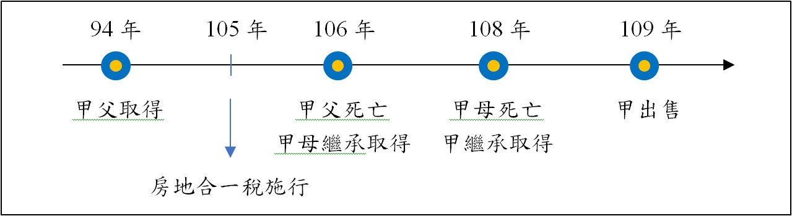
25. 土地法之優先購買權¶
發布日期: 2023-02-23
土地法規定之優先購買權有下列三種：
• (一) 土地法第34條之1第4項之優先購買權：共有人出賣其應有部分時，他共有人得以同一價格共同或單獨優先承購（土§34-1Ⅳ）。
-
立法意旨：減少共有人數。
-
行使要件： (1) 須為共有不動產：僅限於共有不動產，不包括共有動產。又，共有包括分別共有與公同共有二種。前者，各共有人得出賣其應有部分，共有人亦得以多數決出賣共有不動產全部。後者，各共有人不得出賣其潛在應有部分，但共有人得以多數決出賣共有不動產全部。 (2) 須共有人出賣其應有部分：僅限於買賣（包括標售、拍賣等），不包括交換、贈與、設定他項權利等。另，出賣其應有部分，擴大適用於共有人依土地法第34條之1第1項多數決（即人數過半，且應有部分過半；或應有部分逾三分之二，人數不計）出賣共有不動產全部。 (3) 須出賣予共有人以外之人：共有人出賣其應有部分予其中之共有人，因已符合立法意旨，其他共有人無優先購買權。 (4) 須依同樣條件主張承購：雖法條規定為同一價格，然應擴大解釋為同一條件。亦即，除買賣價格外，其他如付款方式、付款期限、稅費負擔等皆須相同。 (5) 須於接到出賣通知後15日內表示：優先購買權屬於形成權。為避免買賣之法律關係懸而未決，本項優先購買權之除斥期間為15日；逾期不表示，優先購買權視為放棄。
-
法律性質（法律效力）：土地法第34條之1第4項之優先購買權，具有債權性質。申言之，出賣人未通知優先購買權人而為所有權之移轉登記，其移轉行為仍然有效，此時優先購買權人僅得向出賣人請求損害賠償。
• (二) 土地法第104條之優先購買權：基地出賣時，地上權人、典權人或承租人有依同樣條件優先購買之權。房屋出賣時，基地所有權人有依同樣條件優先購買之權。其順序以登記之先後定之（土§104Ⅰ）。
-
立法意旨：房屋與其基地所有權合一。
-
行使要件： (1)須地上有房屋存在：僅限於房屋，不包括工事或工作物。如地上為涼亭、游泳池、牆垣等，皆不得適用。 (2)須房屋與基地之所有權人不同：房屋與其基地分屬不同所有權人，始得適用本項優先購買權。 (3)須房屋所有人對基地有地上權、典權或租賃權：房屋所有人占有其基地之權源限於地上權、典權或租賃權，不包括無權占有及使用借貸。換言之，房屋所有人為該基地之地上權人、典權人或承租人。 (4)須基地出賣或房屋出賣：僅限於出賣（包括標售、拍賣等），不包括交換、贈與等。另，基地出賣時，地上權人、典權人或承租人有優先購買之權；相反地，房屋出賣時，基地所有權人有優先購買之權。 (5)須依同樣條件主張承購：所稱同樣條件指出賣人與第三人簽訂買賣契約書記載之條件，包括買賣價格、付款方式、付款期限、稅費負擔等。 (6)須於接到出賣通知後10日內表示：優先購買權屬於形成權。為避免買賣之法律關係懸而未決，本項優先購買權之除斥期間為10日；逾期不表示，優先購買權視為放棄。
-
法律性質（法律效力）：土地法第104條之優先購買權，具有物權性質。申言之，出賣人未通知優先購買權人而為所有權之移轉登記，優先購買權人得主張移轉行為無效。
• (三) 土地法第107條之優先購買權：出租人出賣或出典耕地時，承租人有依同樣條件優先承買或承典之權（土§107Ⅰ）。
-
立法意旨：扶植自耕農。
-
行使要件： (1)須為出租耕地：限於土地法第106條所規定之耕地租用，始得適用。土地法第106條規定，以自任耕作為目的，約定支付地租，使用他人之農地者，為耕地租用。前項所稱耕作，包括漁牧。 (2)須耕地出賣或出典：包括出賣與出典二種情形。換言之，出租人出賣耕地時，承租人得主張優先承買；出租人出典耕地時，承租人得主張優先承典。 (3)須依同樣條件主張承受：承租人應以出賣或出典之同樣條件主張。承租人如更改條件而主張承受，視同放棄優先購買。 (4)須於接到出賣通知後10日內表示：優先購買權屬於形成權。為避免買賣或設定典權之法律關係懸而未決，本項優先購買權之除斥期間為10日；逾期不表示，優先購買權視為放棄。
3. 法律性質（法律效力）：土地法第107條之優先購買權，具有物權性質。申言之，出賣人或出典人未通知優先承受人而為所有權移轉登記或設定典權登記，優先承受人得主張移轉行為或設定典權行為無效。¶
注：本文圖片存放於 ./images/ 目錄下
26. 無權代理¶
發布日期: 2023-02-23
無權代理：在日常生活中，我們常會遇見有人以他人的代理人身分簽訂合約或辦理事務，而所謂「代理」，指的就是以「本人的名義」為法律行為之意，而非以「代理人自己」的名義為之。 而於某些情形下，不肖人士會假裝自己是他人的代理人，並以他人之名義做成法律行為，導致他人的權利義務發生變動，此即屬「無權代理」，法律上為了保護真正權利人、防免不肖人士任意假冒他人名義而為法律行為，因此訂定民法第170條無權代理之規定，明定無權代理行為的法律效果必需視「本人是否承認」而定，若本人承認，則該代理行為才會對本人發生效力；反之，代理行為對本人不生效力。
無權代理之意義
無代理權人以代理人之名義所為之法律行為，非經本人承認，對於本人不生效力。
實例說明
甲以丙的名義與乙簽訂Ａ車買賣契約，約定丙將Ａ車出售給乙，乙須給付新台幣五十萬元，甲並將Ａ車交付給乙，然實際上丙根本未授予代理權給甲，試問Ａ車買賣契約效力？
於上述例子中，丙並未授予甲代理權，故甲並非有代理權之人，惟甲（自己）仍以丙（本人）之代理人的名義，與乙簽訂買賣契約，此即無代理權人以代理人名義所為之法律行為，依照民法第170條第1項之規定，該買賣契約於丙（本人）承認前，對丙不生效力。
Josh 老師提醒
無權代理與無權處分的概念很類似，但實際上卻不一樣。無權處分的概念下，規範的是「處分行為」，屬於「物權行為」範疇，且須行為人以「自己的名義」為之；無權代理的概念則係規範「法律行為」，且須行為人以「本人之代理人」名義自居，才會該當條文的要件，考試時記得要看清楚題目的論述喔！
．延伸閱讀
原文出處：Jasper 不動產
27. 受詐欺或脅迫所為的意思表示¶
發布日期: 2023-02-26
受詐欺或脅迫所為的意思表示:當表意人的意思自由受到限制時，其意思表示即屬於有瑕疵之意思表示，為了保護表意人的權利，因此明文規定於此情形下，表意人得撤銷其意思表示。 所謂詐欺，指的是相對人以不符合事實之內容告以表意人，使表意人誤信、陷於錯誤，並因此做出意思表示者而言；而所謂脅迫，指的是相對人以惡害告以表意人，使表意人心生恐懼而做出意思表示而言，例如威脅表意人如果不作成特定意思表示，就要傷害其身體等即屬之。
受詐欺或脅迫所為的意思表示實例說明
甲是一位總是被利慾薰心的商人，為了賺錢而投資了負離子產業，並宣稱負離子有諸多療效，然而實際上甲所宣稱的療效都未經證實，都是甲編造的，消費者乙因相信甲所言，故支付 100 萬元購買其產品；另有一位消費者丙發現甲的謊言，本來打算拒絕給付，但卻被甲威脅：「如果取消訂單，我會對你家人不利！我有你家地址！」等語，丙心生恐懼，故仍完成交易。試問，乙與丙得否撤銷其意思表示？
於上述例子中，甲明顯是以「與事實不符的錯誤內容」告知乙，使乙誤信其所言為真，陷於錯誤，並因此做了購買甲產品之意思表示，乙之意思表示明顯係「被詐欺所為之意思表示」，依照民法第 92 條之規定，乙得撤銷其意思表示。
而甲以傷害丙家人之「惡害」告知丙，使丙心生恐懼，進而做出購買甲產品的意思表示，此即「受脅迫所為之意思表示」，依照民法第 92 條規定，丙一樣可以撤銷其意思表示。
Josh 老師提醒
本條文的法律效力是「得撤銷」，表示原本的意思表示效力仍然是有生效的，在被撤銷前，效力仍會繼續維持，如果意思表示本來就是無效的，那就沒有被撤銷的可能囉！而一旦意思表示被撤銷，就會溯及失效！
．延伸閱讀
原文出處：Jasper 不動產
28. 農地交易屬房地合一稅課徵範圍：臺中高等行政109簡上字第31號¶
發布日期: 2023-02-28
實務上仍有許多人誤解農地免徵房地合一稅，同學應予釐清。 農地本就屬於依法得核發建築執照之土地，例如可以蓋農舍、相關農業設施（資材室）等，故屬房地合一稅課徵範圍，惟為鼓勵農業政策，所得稅法也規定如有取得「土地增值稅不課徵證明書」者，則可免納房地合一稅。 因此判斷原則如下： ◎有課徵土地增值稅的農地→要繳房地合一稅 ◎不課徵土地增值稅的農地→免繳房地合一稅
以下透過一行政判決為例，予以補充觀念：
■事實 甲於民國106年3月2日以拍賣原因登記取得花蓮縣A地（持分4分之1，所屬面積1,106.25平方公尺），旋於同年月出售，106年3月17日完成所有權移轉登記，經國稅局查得甲持有A地期間在1年以內，且未於該土地完成所有權移轉登記之次日起30日內，辦理個人房屋土地交易所得稅（下稱房地合一稅）申報，乃依查得資料核定應納稅額25,875元，並裁處罰鍰20,000元。甲不服，申請復查後猶表不服，提起訴願，遭決定駁回，遂提起行政訴訟。
■甲主張依所得稅法第4條之4第1項規定核課房地合一稅的標的，包含個人及營利事業自中華民國105年1月1日起交易房屋、房屋及其坐落基地或依法「得核發」建造執照之土地；該條第3項規定，第1項所定房屋之範圍，不包括依農業發展條例申請興建之農舍。本件上訴人出售的是共有持分的農地，面積不足0.25公頃，根本無法申請農舍建照，不是所得稅法第4條之4條第1項規定核課房地合一稅的課稅範圍。因該條第3項規定，依農業發展條例申請興建之農舍並非第1項房地合一稅核課範圍，其坐落之土地自然不是依法得核發建造執照之土地。 （此同為許多人誤解之處）
■判決理由
-
於105年1月1日以前，個人及營利事業出售土地享有免納所得稅之租稅優惠，容易衍生納稅義務人運用操控房地價格，規避所得稅等缺失。為解決現制房屋及土地分開課稅之缺失，建立合理透明稅制，抑制短期投機炒作，健全不動產市場發展，乃對自105年1月1日起交易房屋、房屋及其坐落基地或依法得核發建造執照之土地，其交易所得納入課徵所得稅範圍，其中排除課稅範圍者，為依農業發展條例申請興建之農舍。惟農舍坐落之土地，法律並未將其排除在外，僅於符合農業發展條例第37條及第38條之1規定而申請不課徵土地增值稅時，始有免納所得稅之適用。又「依法得核發建造執照之土地」，依最高行政法院102年度判字第296號判決意旨，係以土地本質來認定，而非以土地移轉當下之外觀狀態判斷之，否則易生以人為操作俾得規避稅賦。
-
經查，A地之總面積為4,425平方公尺，甲持分1/4面積為1,106.25平方公尺，使用分區：山坡地保育區；使用地類別：農牧用地。又A地屬非都市土地範圍，如符合「農業用地興建農舍辦法」或「申請農業用地做農業設施容許使用審查辦法」許可要件，非不得申請建築農舍或農業生產設施；查無A地相關坡度專業技師簽證文件據以認定該土地位屬坡度30%以上之山坡地而有限制建築及開發。原判決略以：「系爭持分土地面積雖未達興建農舍規定之2,500平方公尺，惟非不能藉由擴大持分、合併土地或參加興建集村農舍等方式克服而使之能供建築，如僅因面積不足供建築即不課稅，豈非變相鼓勵土地以化整為零方式為交易而避稅，故系爭土地核非客觀上無法申請核發建造執照，本質仍屬依法得供建築之土地，為所得稅法第4條之4規定之課徵範圍。」等語，認定A地符合所得稅法第4條之4規定應課徵房地合一稅之標的，經核並無違誤。
-
亦即，依土地性質，在客觀上絕對不能核發建照，始得謂『依法不能建築之土地』。由於一般可供建築之土地，如欲獲核發建照，往往尚須符合相關土地使用、建築法令之要件，如因此等法規要件不備未能獲核發建照，尚非土地本身不能建築之故，因此所謂『依法不能建築』，應區別『土地性質在客觀上絕對不能核發建照』，抑或『原可能供建築，只是其他法令要件不備』情形，否則浮濫擴大解釋依法不能建築土地而得免徵所得稅，將增加人為操縱、逃避稅捐並形成不公。
4. 惟農業發展條例第37條及第38條之1規定，係規範作農業使用之農業用地移轉予自然人時，須取得農業主管機關核發該土地作農業使用證明書，得申請不課徵土地增值稅。而所得稅法第4條之5第1項第2款既以『符合農業發展條例第37條及第38條之1規定』為要件，立法係配合農業政策鼓勵農地作農業使用之減免為規定，該條解釋上自應以實際供作農業使用，始得受鼓勵而予減免。關於是否『實際供作農業使用』，事涉農業使用之定義與實際狀況之專業判斷，依行政專業分工、機關間相互協力以提升效能之法理，自宜由主管農業事務之專責單位出具農用證明書以資證明，始能免納土地交易所得稅。準此，個人出售土地，仍應以該土地出售時符合『作農業使用』規定，並檢具農用證明書，始能免納土地交易所得稅。（注意實務上國稅局會要求提出的是「土地增值稅不課徵證明書」，有農業用地作農業使用證明沒有申請不課徵土地增值稅一樣不行）¶
注：本文圖片存放於 ./images/ 目錄下
29. 市場失靈與政府失靈¶
發布日期: 2023-03-02
• (一) 市場失靈
- 意義：土地市場運行中，無法藉由市場機制與價格機能，解決問題的地方。茲說明市場運行與市場失靈之關係： (1)無市場失靈現象：一般財貨（如蘋果、電視機等）市場，如圖(一)所示，一般財貨之需求曲線D0與一般財貨之供給曲線S0，二者交點決定一般財貨價格P0。今，因所得提高，對一般財貨之需求增加，需求曲線由D0右上移至 ，價格由P0上漲至 。供給者發現價格上漲，有利可圖，因而增加一般財貨生產及進口，致供給曲線由S0右下移至 ，價格再由 下跌至P0水準。由此可知，市場機制與價格機能有效運作，價格回復至原來水準，無市場失靈現象。
[圖片1]
圖(一) 一般財貨之市場運行
• (2) 有市場失靈現象：土地市場，如圖(二)所示，土地需求曲線D1與土地供給曲線S1，二者交點決定土地價格P1。今，因所得提高，對土地之需求增加，需求曲線由D1右上移至 ，價格由P1上漲至 。供給者發現價格上漲，有利可圖，惟土地不能生產，亦不能進口，因而供給增加有限，致供給曲線由S0右下移至 ，價格再由 下跌至 。由此可知，市場機制與價格機能無法有效運作，價格無法回復至原來水準，發生市場失靈現象。
[圖片2]
圖(二) 土地之市場運行
-
原因： (1)外部性：土地利用或土地開發時，如果存在外部成本或外部利益，將使私人決策之均衡點與社會決策之均衡點不一致，而導致市場失靈。 (2)公共財：公共財在需求上具有「非敵對性」，在供給上具有「無排他性」。如由市場自由運作，將發生搭便車現象，造成供給不足，而導致市場失靈。 (3)獨占性：土地具有異質性，彰顯其獨占地位。如由市場自由運作，將發生釘子地或釘子戶問題，而導致市場失靈。 (4)稀少性：土地無法製造，供給量有限，供給彈性甚小。如由市場自由運作，將發生需強供弱現象，而導致市場失靈。 (5)資訊不全：土地無集中市場，資訊不充分與不流通。基於囚犯困境原理，私人之最佳決策，並非總體之最佳決策。
-
舉例：房價及地價高漲，即是市場失靈之現象。房價及地價高漲，炒作土地及房屋有暴利可圖，投機需求猖獗，房價及地價更上漲。此時，唯賴政府及時干預（如實施打擊房地投機措施），始克平息。
• (二) 政府失靈
-
意義：市場失靈提供政府干預的理由，然而政府並非萬能，其干預效果仍然有限，甚至適得其反。
-
原因： (1)欠缺利潤誘因：政府之公務員領取固定薪酬，而無獎金與盈餘分配制度，因循苟且心態，造成政府施政效率不彰。 (2)缺乏競爭：政府機關為獨占事業，所辦理業務（如地政業務、戶政業務等）皆無其他競爭者。有競爭，才會不斷檢討改進，才會不斷進步成長。 (3)博採眾議：政府決策，受到議會監督。因此民意代表、利益團體等運用其影響力左右決策，造成最後決策並非最佳決策，而是相互妥協之結果。 (4)官僚體系：政府機關運作，涉及縱的指揮系統及橫的協調系統。不論指揮與協調均存在單位與單位之間的節點，以致執行成效七折八扣。 (5)貪污舞弊：不肖公務員假借公權力，貪污舞弊，追求個人財富最大化，而造成決策錯誤。
-
舉例：房價及地價高漲，政府擬採取打擊房地投機措施。然一般政策之實施，可能產生時間落後之現象。此現象依序為：認知落後、行政落後、決策落後、執行落後與效驗落後等五種。認知落後乃是問題存在直至被發覺這段時間。行政落後乃是政府當局發覺問題存在，從事蒐集有關資訊、分析原因及擬訂對策這段時間。決策落後乃是政府機關將擬訂對策提出立法或議會機關通過這段時間。執行落後乃是決策通過後至交付有關單位執行這段時間。效驗落後乃是決策執行至預期效果產生這段時間。在房地產過熱時應立即採取打擊房地投機措施加以抑制，然由於政策的時間落後，實施時房地產已走入蕭條，蕭條期之打擊房地投機措施將使房地產更加蕭條。
• (三) 結論
-
因市場失靈，而需要政府干預。因政府干預，而產生政府失靈。
-
庇古（Pigou）理論主張政府干預；寇斯（Coase）理論主張尊重市場。
[圖片3]
文章圖片¶


30. 土地法 §102｜租地建屋-債權關係物權化¶
發布日期: 2023-03-05
債權關係物權化：依土地法規定，租用基地建築房屋，應由出租人與承租人於契約訂立後二個月內，聲請該管直轄市或縣(市)地政機關為地上權之登記。
債權關係物權化之意義
土地法第 102 條及民法第 422 條之 1 都有關於基地租賃可請求設定地上權之規定，此規定即債權關係物權化的一種：將租賃契約(債權關係)，以地上權(物權)之形式登記，藉由登記達到公示、對世性之效力。
其立法目的，都是在加強保護承租人之權益，而基地租賃為地上權登記後，租賃債之關係與地上權之物權關係是可以並存的。
Erin 老師提醒
不論土地法第 102 條及民法第 422 條之 1 ，都僅是訓示規定，非強規定，也就是說，若雙方於訂定基地租賃契約後，不於期限內辦理地上權登記，也是不會有任何問題的，只是相關權益就損失了喔！
．延伸閱讀
原文出處：Jasper 不動產
31. 主張逾期未辦繼承登記之優先購買權要件¶
發布日期: 2023-03-07
首先，根據土地法第73條之1規定：
• (一) 土地或建築改良物，自繼承開始之日起逾一年未辦理繼承登記者，經該管直轄市或縣市地政機關查明後，應即公告繼承人於三個月內聲請登記，並以書面通知繼承人；逾期仍未聲請者，得由地政機關予以列冊管理。但有不可歸責於聲請人之事由，其期間應予扣除。
• (二) 列冊管理期間為十五年，逾期仍未聲請登記者，由地政機關書面通知繼承人及將該土地或建築改良物清冊移請財政部國有財產署公開標售。繼承人占有或第三人占有無合法使用權者，於標售後喪失其占有之權利；土地或建築改良物租賃期間超過五年者，於標售後以五年為限。
• (三) 依規定標售土地或建築改良物前應公告三個月，繼承人、合法使用人或其他共有人就其使用範圍依序有優先購買權。但優先購買權人未於決標後三十日內表示優先購買者，其優先購買權視為放棄。
因此，其主張優先購買權要件如下：
-
主體：繼承人、合法使用人或其他共有人
-
使用：必須於該未辦繼承土地上使用（學者就其立法意旨，主張應以有居住事實之現使用人為限）
-
範圍：使用範圍（如標售應有部分，則得優先購買權範圍為該使用範圍占整筆土地之比例）
-
順序：繼承人→合法使用人→其他共有人
-
期限：決標後三十日內表示
-
競合：本條之優先購買權與其他法律規定之優先購買權競合時，優先適用本條。不符本條優先購買權者，另依其他法律規定處理優先購買權。（未辦繼承登記土地及建築改良物標售作業要點）
參考來源：陳立夫，2023，土地法裁判精選－逾期未辦繼承登記不動產標售時之優先購買權，月旦法學雜誌，第332期，第223-235頁¶
注：本文圖片存放於 ./images/ 目錄下
32. 概念比一比 18 ｜斡旋金、要約書¶
發布日期: 2023-03-08
斡旋金、要約書都是在買賣不動產時，仲介會要求買方要簽署的文件，今天就來聊聊兩者的特點。
斡旋金、要約書之要件
．斡旋金
- 通常為出價的2%，或者10萬元左右。
- 若賣方同意買方的價格，此時斡旋金會轉為定金。
- 斡旋金轉為定金後，若買方反悔，定金會被沒收；賣方反悔，需付雙倍定金予買方。
．要約書
- 不需要事先支付金額，買方將購買之意願寫成文書，由仲介負責和賣方協商。
- 在賣方承諾前可以撤回要約。
- 若賣方承諾後買方後悔，此時仍要負賠償責任，實務上多為出價的3%。
Erin 老師提醒
政府有另外規定，經紀業在要求買方下斡旋金時，必須主動和買方說明可以採用要約書的選擇，如果經紀業為了利益刻意隱藏要約書的資訊，那就會違反公平交易法而被公平會懲處哦。
．延伸閱讀
原文出處：Jasper 不動產
33. 共用地悲劇與反共用地悲劇¶
發布日期: 2023-03-09
• (一) 共用地悲劇
-
意義：財產權未界定清楚，眾人均可免費使用，每個人都盡可能採伐，最後導致土地資源被過度使用，終至枯竭。
-
原因： (1)共有共用：財產權屬誰，未清楚界定，每個人為了本身利益盡可能使用，將導致土地資源過度使用。如果財產權屬誰，界定清楚，財產所有人為了本身利益經濟、合理、適當、有效使用，將導致土地資源永續利用。 (2)免費使用：當每個人使用土地資源時，不必付出成本，則每個人為了本身利益盡可能使用，將導致土地資源過度使用。當每個人使用土地資源時，必須付出成本，則每個人為了本身利益經濟、合理、適當、有效使用，將導致土地資源永續利用。
-
舉例： (1)環境污染：環境財產權未界定清楚，工廠任意排放廢氣及廢水，超過環境負荷能力，造成環境污染。 (2)海洋魚獲枯竭：海洋財產權未界定清楚，漁民任意濫捕，造成漁獲量減少，終至枯竭。如果海洋合理捕撈，魚類生生不息，魚獲量源源不絕。 (3)超抽地下水：地下水屬於國有，但政府一直未管制，養殖業超抽地下水，造成地層下陷。以前，台北市政府未管制地下水抽取，造成台北盆地下沉；現今，台北市政府管制地下水抽取，台北盆地就不再下沉。
• (二) 反共用地悲劇
-
意義：財產權不完整，每一財產權所有人均有權阻止他人使用，最後導致土地資源被低度使用，甚至荒廢。
-
原因： (1)產權細分：財產權由許多人擁有，如果想使用該財產，須經眾多財產所有人同意，由於人多口雜，難以整合成功，最後只能任其荒廢。 (2)權利割裂：完整財產權包括管理權、用益權、處分權及排他權等。財產所有人無完整財產權，將造成土地資源配置無效率。
-
舉例： (1)共有土地：共有土地之產權細分，共有人數愈多，土地資源愈難有效整合利用。公同共有比分別共有，易發生反共用地悲劇；分別共有人數較多者比分別共有人數較少者，易發生反共用地悲劇。土地法第34條之1之立法意旨在促進共有土地利用（土地法第34條之1第1項）及減少共有人數（土地法第34條之1第4項），道理在此。 (2)土地與建物所有權分離：土地與建物所有權分屬不同所有權人，權利割裂，土地難以有效利用。土地法第104條之立法意旨在使建物與其基地所有權合一，道理在此。 (3)區分所有建物：區分所有建物，指一幢建築物內存在很多棟建物。任一區分所有權人，就一幢建築物而言，財產權不完整；就一棟建物而言，財產權完整。當一幢建築物老舊時，須經全體區分所有權人同意，始得拆除重建，將造成都市更新的困難。因此，都市更新條例採多數決，以突破區分所有建物整合不易問題。
• (三) 結論
-
共用地悲劇與反共用地悲劇皆是財產權問題。
-
財產權界定不清楚，造成共用地悲劇。財產權不完整，造成反共用地悲劇。
-
共用地悲劇，導致土地資源之過度利用。反共用地悲劇，導致土地資源之低度利用。
[圖片1]
文章圖片¶
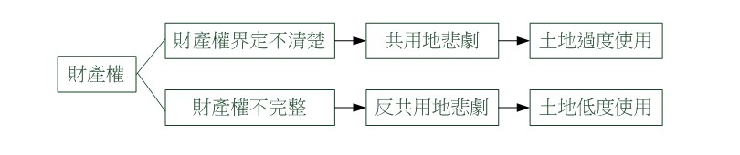
34. 土地登記規則§24-1 | 土地謄本的種類¶
發布日期: 2023-03-11
權狀和謄本是土地登記實務中，最常觸碰到的文件之一，權狀如同身分證，而謄本則如同不動產的履歷。 謄本的內容是由登記機關紀錄，內容會隨時變動更新，潰仍較全面也較詳細，在法律上是屬於主要文件。 那麼今天就來輕鬆了解「土地謄本的種類」有哪些吧！
土地謄本的種類
．一、第一類謄本
申請人為登記名義人及其他依法令得申請者，謄本內容顯示登記名義人全部登記資料。
．二、第二類謄本
任何人皆能申請，謄本內容隱匿登記名義人出生日期、部分姓名、部分統一編號、債務人及債務額比例、設定義務人及其他依法令規定需隱匿之資料。但限制登記、非自然人姓名及統一編號，不在隱匿的範圍內。
．三、第三類謄本
申請人為登記名義人、具有法律上通知義務或權利義務得喪變更關係之利害關係人，謄本內容隱匿登記名義人之統一編號、出生日期之資料。惟顯示完整姓名及住址。
立法意涵
第二類謄本原先其謄本內容有完整姓名及住址，此有洩漏個人資料的疑慮。因此內政部經過多次會議檢討，為了兼顧不動產交易安全的公益性與個人資料隱私權的私益性，認為原規定公開登記名義人全部姓名及住址資料，逾越了比例原則，故改以去識別化方式，僅公開登記名義人的姓氏、部分國民身分證統一編號資料，但仍保留完整住址資料，惟倘若登記名義人有所疑慮，也可以向土地所在地的縣市內任一地政事務所免費申請隱匿部分住址資料，或使用自然人憑證於內政部地政司全球資訊網提出申請。
而政府於民國104年起，增訂第三類地籍謄本，考量登記名義人、具有法律上通知義務或權利義務得喪變更關係之利害關係人仍有需要取得登記名義人的完整姓名及住址資料，以主張法律上的權益或履行義務。例如，土地法第34條之1規定共有人處分共有不動產需要通知他共有人，或者辦理都市更新的所有權人需要通知都市更新單元內的所有權人召開公聽會等，提供申請第三類地籍謄本，以避免影響利害關係人處理不動產事務。
Logan 老師提醒
在土地登記實務中，原則上各位同學所看到的房地皆得調閱到其謄本，不過例外的情況，如「未保存登記」的建物，因為此種建物沒有權狀，所以調閱不到謄本資料喔！
．延伸閱讀
原文出處：Jasper 不動產
35. 土地登記規則§4 | 有關土地登記之各種權利¶
發布日期: 2023-03-11
我國不動產之權利於取得、設定、移轉、喪失或變更時，皆應辦理登記，那麼到底有關土地登記之權利有九種呢？此外他們的法源都是從哪裡來的呢？今天三分鐘小教室帶你輕鬆了解吧！
土地登記之各種權利之意義
．一、所有權：(民法§765)
所有人於法令限制之範圍內，得自由使用、收益、處分其所有物，並排除他人之干涉。
．二、地上權：
1.普通地上權(民法§832)
稱普通地上權者，謂以在他人土地之上下有建築物或其他工作物為目的而使用其土地之權。
2.區分地上權(民法§841-1)
稱區分地上權者，謂以在他人土地上下之一定空間範圍內設定之地上權。
．三、永佃權(民法§842 刪除)
指中華民國99年8月3日前發生之永佃權。
＊稱永佃權者，謂支付佃租永久在他人土地上為耕作或牧畜之權。
．四、不動產役權(民法§851)
稱不動產役權者，謂以他人不動產供自己不動產通行、汲水、採光、 眺望、電信或其他以特定便宜之用為目的之權。
．五、典權(民法§911)
稱典權者，謂支付典價在他人之不動產為使用、收益，於他人不回贖時，取得該不動產所有權之權。
．六、抵押權
1.普通抵押權：(民法§860)
稱普通抵押權者，謂債權人對於債務人或第三人不移轉占有而供擔保之不動產，得就其賣得價金優先受清償之權。
2.最高限額抵押權：(民法§881-1I)
稱最高限額抵押權者，謂債務人或第三人提供其不動產為擔保，就債權人對債務人一定範圍內之不特定債權，在最高限額內設定之抵押權。
＊補充說明: 地上權、農育權及典權，均亦得為抵押權之標的物。 (民法§882)
．七、耕作權(土地法§133I)
承墾人自墾竣之日起，無償取得所領墾地之耕作權，應即依法向該管 直轄市或縣(市)地政機關聲請為耕作權之登記。但繼續耕作滿十年者，無償取得土地所有權。
．八、農育權(民法§850-1)
稱農育權者，謂在他人土地為農作、森林、養殖、畜牧、種植竹木或保育之權。 農育權之期限，不得逾二十年;逾二十年者，縮短為二十年。但以造 林、保育為目的或法令另有規定者，不在此限。
．九、依習慣形成之物權
1.原則： (民法§757)
物權除依法律或習慣外，不得創設。
2.例外：(最高法院 19 年上字第 916 號判例參照)
民法第 757 條所稱「習慣」係指多年慣行之事實，經法院認定者，始得認係法律之一部分，故依習慣申請物權登記，除應由主張之當事人依法提出證據外，法院應依職權調查之。
Logan 老師提醒
土地登記的權利種類，大部分都是來自於民法中，唯獨「耕作權」是規定在土地法，因此倘若未來學生在考試遇到「有關土地登記之各種權利」時，也可以利用不同法源做列項答題喔！
．延伸閱讀
原文出處：Jasper 不動產
36. 經紀業管理條例 §11 ｜營業處所之經紀人設立規定¶
發布日期: 2023-03-11
經紀人證照除了可以向客戶展現你的專業價值之外，也是每一個不動產業都必須要具備的一張證照，今天就來向同學們介紹其中的原因吧。
營業處所之經紀人設立規定之名詞定義
．營業處所
指經紀業經營仲介或代銷業務之店面、辦公室或非常態之固定場所。
根據條文定義，營業處所可以分為常態性和非常態性兩種
．常態性
路邊的仲介業店面和代銷業的文書辦公室
．非常態性
代銷業的預售屋接待中心
營業處所之經紀人設立規定之要點
一、常態性
1.至少應設置經紀人一人。
2.經紀營業員數每逾二十名時，應增設經紀人一人。
二、非常態性
1.至少應設置經紀人一人
2.其所銷售總金額達新臺幣六億元以上，該處所至少應置「專業」經紀人一人
3.經紀營業員數每逾二十名時，應增設經紀人一人。
Ding 老師提醒
今天A代銷的預售屋接待中心，總銷售額為10億且有6位經紀人員，請問這個接待中心需要準備幾張經紀人證照呢? 答案是1張，你答對了嗎? 另外要注意經紀人員是可以「兼任」多家經紀業的，但只能「專任」一個營業處所哦。
．延伸閱讀
原文出處：Jasper 不動產
37. 經紀業管理條例｜不動產仲介經紀業倫理規範¶
發布日期: 2023-03-11
今天和同學們分享在法條：不動產仲介經紀業倫理規範中，從業人員在工作時很容易違規的法條。
不動產仲介經紀業倫理規範之要點
．第2條
經紀業應堅持公平交易及誠實信用。
．第8條
經紀業經消費者通知停止使用其個人資料者，經紀業應即停止使用。
．第9條
經紀業之間應相互尊重，維護同業之正當權益，不得違反法令惡性競爭，或使委託人終止對其他經紀業之委託。
．第10條
經紀業應依法令規定對消費者揭露不動產說明書應記載之內容，不得有蓄意矇蔽欺罔之行為。
．第11條
經紀業不得與經紀人員通謀，使其未親自執行業務而假藉其名義對外執行業務。
．第16條
經紀人員不得不當利用土地登記及地價電子資料謄本之住址資料，侵擾所有權人。
．第17條
不動產之買賣、互易、租賃或代理銷售，如委由經紀業仲介業務者，於簽訂各項不動產交易契約，經紀人不得於空白契約上簽章。
Ding 老師提醒
相信已經在業界工作的同學們看到這些規定，應該會覺得很沒意思，畢竟現實的大環境已經很難改變了，但老師還是希望同學在使用一些灰色手段時，能多少保留點底線，畢竟不知道哪天會因此而受罰。
．延伸閱讀
原文出處：Jasper 不動產
38. 土地法 §34-1 VI｜共有物分割調處¶
發布日期: 2023-03-11
共有物分割可以依土地法34-1條第1項有關多數決的規定進行嗎？答案是不可以的！(土地法第三十四條之一執行要點第3點有明文規定) 那共有土地想要辦理共有物分割，除了依據民法824條規定經全體共有人同意，並出具協議書，會同申請辦理登記外，還有其他的方式嗎？
共有物分割調處之意義
原則上，共有土地想要辦理共有物分割，依據民法824條規定，應經全體共有人同意，並出具協議書，會同申請辦理登記。
但是如果有部分共有人不願意配合協議，可解決的管道有以下三種：
1、向鄉鎮市公所調解委員會申請調解。
2、向直轄市、縣 (市) 不動產糾紛調處委員會申請調處分割。
3、向法院提起共有物分割之訴。
上面第2種方法就是土地法第34-1條第6項所規定的「依法得分割之共有土地或建築改良物，共有人不能自行協議分割者，任何共有人得申請該管直轄市、縣（市）地政機關調處。」，而經調處後之結果，若共有人不於一定期間內提起異議，其調處效力與法院判決相同，相較於直接訴請法院判決收費較低廉又節省時間，是政府提供人民解決共有物關係的另一種管道。
Erin 老師提醒
雖然依民法824條規定，共有人間不能協議分割時可以訴請法院判決，但是若曾經協議分割方式，只是共有人不履行的話，則需等到消滅時效過後才能再訴請法院判決分割喔！
．延伸閱讀
原文出處：Jasper 不動產
39. 民法 §870｜一般抵押權之從屬性¶
發布日期: 2023-03-11
一般抵押權與其所擔保之債權，是否可以分開讓與?
一般抵押權之從屬性
．意義
一般抵押權具有從屬性，一般抵押權不得與債權分離而為讓與，或為其他債權之擔保。
．要件
屬於一般抵押權，而非最高限額抵押權。
實例說明
Q：乙向甲借一大筆錢，甲說有個條件:「乙需要將其名下的房子抵押給自己」，乙答應了，甲與乙便成立契約。後來某天，甲的好兄弟丙破產，甲便將抵押權單獨讓與給丙，想說自己留著債權即可，請問甲是否可以單獨讓與抵押權。
A：一般抵押權具有從屬性。若本題甲之抵押權唯一般抵押權，則依據民法第870條規定，一般抵押權不得與債權分離而為讓與。故甲不得單獨讓與該抵押權。
Hank 老師提醒
一般抵押權跟最高限額抵押權，有許多相異之處，同學們在讀抵押權的時候，可以整理兩者差異，考試的時候要注意題目是何種抵押權!
．延伸閱讀
原文出處：Jasper 不動產
40. 民法 §801、948｜動產 vs 不動產之善意取得¶
發布日期: 2023-03-11
若讓與人並未實質擁有其讓與物之所有權，便將該物讓與他人，則受讓人是否取得該物之所有權?
意義
非真正實質之所有權人，移轉所有權予善意第三人，善意第三人及獲取該所有權。
動產 V.S. 不動產善意取得之要件
動產:
1.有公示原則（占有）之外觀。
2.須為無權處分。
3.標的物已交付完成。
4.受讓人須為善意且無重大過失。
不動產：
1.原登記物權有不實之情事。
2.須因法律行為而已為物權變動之登記。
3.第三人須為善意。
實例說明
Q:
甲與乙是好朋友，乙某天在甲的家中看到一個限量版模型，便謊稱說想要向他其他朋友炫耀，詢問甲是否可以借他一個月，甲沒有多想便借給了乙，結果乙直接將其出售給毫不知情的丙，一個月後，甲得知此事，便著急地去找丙，想把模型要回來，請問甲是否可以把模型要回來?
A:
依照民法第801、948條規定，乙已將模型已交付給丙，且丙是善意受讓人，故丙善意取得該模型之所有權，故甲並不能將模型要回來。
Hank 老師提醒
大家要釐清動產與不動產善意取得的觀念，考試時才能作答正確唷!
．延伸閱讀
原文出處：Jasper 不動產
41. 公同共有繼承之分割方法：103年度重簡字第544號民事判決¶
發布日期: 2023-03-14
• 一、案例
甲於民國66年過世，其名下不動產由其繼承人辦理繼承登記，並分割遺產完畢，其中甲之配偶乙繼承登記為分別共有5分之1，該分別共有之5分之1即為本件系爭分割之標的，嗣乙於69年死亡，其繼承人有A、B、C、D、E共5人，依繼承關係為公同共有，每人潛在部分之比例應為5分之1，而A復於79年過世，A就被繼承人乙之公同共有部分即由其繼承人F、G、H、I、J等5人與B、C、D、E公同共有。而後遲至102年始辦妥公同共有之繼承登記。B是否得訴請裁判分割？如何分割？
[圖片1]
• 二、說明
• (一) 即使完成公同共有繼承登記仍屬得隨時請求分割之遺產
雖已完成公同共有登記，但該原屬乙的1/5之應有部分仍為遺產，故按繼承人有數人時，在分割遺產前，各繼承人對於遺產全部為公同共有（民1151）；繼承人得隨時請求分割遺產。但法律另有規定或契約另有訂定者，不在此限（民1164）。因此，在遺產並無不能分割之情形，亦無不分割之約定，B得以請求遺產分割。
• (二) 公同共有繼承關係因遺產分割而終止
由於公同關係存續中，各公同共有人，不得請求分割其公同共有物（民829），故請求遺產分割實際同時就公同關係予以終止，即民830規定公同共有之關係，自公同關係終止，或因公同共有物之讓與而消滅。
• (三) 公同共有物分割方法
公同共有物分割之方法，除法律另有規定外，準用關於共有物分割之規定（民830 II）。亦即共有人就共有物之分割方法不能協議決定者，法院得因任何共有人之請求，命為下列之分配：1.以原物分配於各共有人，但各共有人均受原物之分配顯有困難者，得將原物分配於部分共有人；2.原物分配顯有困難時，得變賣共有物，以價金分配於各共有人，或以原物之一部分分配於各共有人，他部分變賣，以價金分配於各共有人。以原物為分配時，如共有人中，有未受分配，或不能按其應有部分受分配者，得以金錢補償之。
至於選擇哪一種分割分配方法，分割共有物究以原物分割或變價分割為適當，法院應斟酌當事人意願、共有物之使用情形、經濟效用及全體共有人之利益等情形而為適當之分割，不受共有人所主張分割方法之拘束（最高法院88年台上字第600號裁判要旨參照）。
綜上所述，在分割遺產前，對於遺產全部為公同共有，因上開遺產並無不能分割之情形，亦無不分割之約定，故如上開遺產不能協議分割，則B以遺產分割為由終止公同共有關係，請求分割乙之遺產，自屬有據。
至於分割分配方法，由於系爭房地之共有人眾多，部分共有人應有部分極少，若採原物分割之方式，勢必造成細分而導致經濟價值大幅減損，造成經濟上之不利益，因此若以變賣系爭遺產，以價金分配於兩造之分割方法，係為妥適公允之分割方法，並能徹底解決公同共有關係及杜絕兩造爭議，是本件就系爭遺產宜採變價方式，再按各公同共有人之應繼分比例分配，對於全體公同共有人最為有利。
參考來源：臺灣新北地方法院103年度重簡字第544號民事判決、88年度台上字第600號
文章圖片¶

42. 外部效果¶
發布日期: 2023-03-16
外部效果分為外部成本（亦稱外部不經濟）與外部利益（亦稱外部經濟）二種。
• (一) 外部成本
-
意義：土地開發或土地利用時，有一部分成本由開發者自己負擔，稱為私人成本或內部成本；另有一部分成本不由開發者自己負擔，而由社會整體負擔，稱為外部成本。
-
私人決策與社會決策不一致：外部成本造成私人決策與社會決策不一致，導致市場失靈之結果。如圖(一)所示，D表示土地開發利益曲線，S表示土地開發之私人成本曲線。由D與S之交點，決定私人土地開發之開發成本P0與開發數量Q0。如果私人土地開發存在外部成本[圖片1]，S’表示土地開發之社會成本（私人成本 + 外部成本 = 社會成本），則由D與S’之交點，決定社會土地開發之開發成本P1與開發數量Q1。由此可知，如果未加入外部成本，開發者將以偏低之開發成本開發過多之土地數量。
[圖片2]
圖(一) 外部成本
-
外部成本內部化：政府對外部成本予以課稅，使外部成本由開發者負擔，則開發者開發土地之數量將由Q0減少至Q1。
-
舉例：私人開發山坡地，除開發者自己負擔之開發成本（私人成本）外，亦造成土石流潛在風險增加（外部成本）。如果政府將外部成本予以內部化（如課徵開發影響費），將使山坡地開發數量減少。
• (二) 外部利益
-
意義：土地開發或土地利用時，有一部分利益由開發者自己享受，稱為私人利益或內部利益；另有一部分利益不由開發者自己享受，而由社會整體享受，稱為外部利益。
-
私人決策與社會決策不一致：外部利益造成私人決策與社會決策不一致，導致市場失靈之結果。如圖(二)所示，S表示土地開發成本曲線，D表示土地開發私人利益曲線。由D與S之交點，決定私人土地開發之開發利益P0與開發數量Q0。如果私人土地開發存在外部利益[圖片3]，D’表示土地開發之社會利益（私人利益 + 外部利益 = 社會利益），則由D’與S之交點，決定社會土地開發之開發利益P2與開發數量Q2。由此可知，如果未加入外部利益，開發者將以偏低之開發利益開發過少之土地數量。
[圖片4]
圖(二) 外部利益
-
外部利益內部化：政府對外部利益予以補貼，使外部利益由開發者享受，則開發者開發土地之數量將由Q0增加至Q2。
-
舉例：私人辦理都市更新，除開發者自己享受之開發利益（私人利益）外，亦造成都市機能復甦（外部利益）。如果政府將外部利益予以內部化（如租稅減免、容積獎勵等），將使都市更新數量增加。
• (三) 結論
-
外部成本造成私人成本與社會成本之分離，外部利益造成私人利益與社會利益之分離。
-
庇古（Pigou）主張，政府應對外部成本課徵租稅（此種租稅，稱為庇古租稅），對外部利益給予補貼（此種補貼，稱為庇古補貼）。其目的在使外部效果內部化，促使私人成本與社會成本一致、私人利益與社會利益一致，以解決市場失靈問題。
[圖片5]
文章圖片¶


43. 不動產估價技術規則｜影響不動產價格之三大因素¶
發布日期: 2023-03-19
今天和同學們介紹何謂影響不動產價格的三大因素，其中在交通的部分要特別注意，如果題目問的是A屋門前的路很大條很好走，請問這是區域因素還是個別因素呢?
影響不動產價格之三大因素
．一、一般因素
指自然、政治、社會、經濟等全國性、一致性的共同因素。
．二、區域因素
指影響「近鄰地區」的因素，包含區域內的交通設施、生活機能、未來發展等地方性的因素。
．三、個別因素
指該不動產自身條件所帶來的影響，包含佔地大小、臨路條件、容積率等。
Ding 老師提醒
前面問題的答案是個別因素，同學們答對了嗎? 因為重點是在「A屋本身」，而不是「這個區域」的路都很好走，所以看到易混淆的題目時，多想一下再動筆哦。
．延伸閱讀
原文出處：Jasper 不動產
44. 概念比一比 19｜公告地價、公告現值¶
發布日期: 2023-03-19
在準備考試時，常看到公告地價與公告現值兩個專有名詞，兩者都是政府於固定期間會公告的一個地價標準，並與土地所有權人最關心的「稅金」息息相關，但是到底這兩種不同的「地價」，有什麼不一樣呢？
公告地價、公告現值之意義
．公告地價
公告地價，係政府每2年重新規定地價時，參考當年期土地現值、前一期公告地價、地方財政需要、社會經濟狀況及民眾負擔能力按法定程序評估，於1月1日公告，作為土地所有權人申報地價後據以課徵地價稅。
．公告現值
公告土地現值，係政府於每年1月1日公告，作為土地移轉及設定典權時，申報土地現值的參考，並作為主管機關審核土地移轉現值之依據。
Erin 老師提醒
簡單來說，公告地價是用來課徵地價稅的依據，而公告現值則是用來課徵土地增值稅的依據。
對於土地所有權人來說，地價稅必須年年繳納，土地增值稅則是在土地移轉時才需繳納，而通常公告現值會高於公告地價，土地所有權人持有土地的負擔才不會過於龐大喔！
．延伸閱讀
原文出處：Jasper 不動產
45. 土地稅法 § 17｜地價稅-自用住宅優惠稅率¶
發布日期: 2023-03-19
土地所有權人，就其所擁有之土地，每年繳納給政府之稅賦。
自用住宅優惠稅率之意義
土地原則上按照一般稅率課徵地價稅，但符合自用住宅條件之土地，可按照自用住宅優惠稅率課徵地價稅。
自用住宅優惠稅率之要件
．面積之限制
都市土地面積未超過三公畝部分、非都市土地面積未超過七公畝部分。
．處數之限制
土地所有權人與其配偶及未成年之受扶養親屬，適用自用住宅用地稅率繳納地價稅者，以一處為限。
．用途之限制
無出租或供營業用之住宅用地。
．戶籍之限制
土地所有權人或其配偶、直系親屬於該地辦竣戶籍登記
．建物所有人之限制
土地上之建築改良物屬土地所有權人或其配偶、直系親屬所有者為限。
Hank 老師提醒
同學們作答時，判斷題目是否符合自用住宅優惠稅率，應仔細檢查題目是否符合自用住宅優惠稅率的各個要件，若符合自用住宅優惠稅率，在計算時，要切記都市土地不超過3公畝、非都市土地不超過7公畝!
．延伸閱讀
原文出處：Jasper 不動產
46. 公同共有之遺產得否訴請拍賣¶
發布日期: 2023-03-21
甲到處欠錢，身無分文，已無任何財產可供執行。惟後來甲的父親死亡後，遺留一筆不動產，由其子甲及乙各繼承1/2，甲為免被拍賣，故意不辦繼承登記在自己名下，試問債權人得否對該遺產進行查封登記與拍賣程序？
依民法第1151條規定：「繼承人有數人時，在分割遺產前，各繼承人對於遺產全部為公同共有。」因此，遺產在未分割前屬公同共有，故甲、乙僅有潛在應有部分，而無明確的應有部分可供執行。
然而，公同共有之不動產未分割前，公同共有人中部分共有人之債權人雖不得對該不動產聲請強制執行，但可就該「公同共有人之權利」（即應繼分），依對於其他財產權執行之規定執行之。債務人公同共有權利之標的為不動產，其拍賣程序，應類推適用不動產之執行程序。惟債務人公同共有之權利，如係基於繼承關係而來，則因繼承人於遺產分割析算完畢前，對特定物之公同共有權利，尚無法自一切權利義務公同共有之遺產中單獨抽離而為執行標的，故應俟辦妥遺產分割後，始得進行拍賣。
因此，債權人得先就甲的應繼分申請查封登記，後等甲乙遺產分割完畢後，就甲所得部分執行拍賣程序，如甲怠於行使遺產分割權利，則可依民法第242條因保全債權，得以自己(債權人)之名義，行使其權利(即代位提起遺產分割訴訟)。
參考來源：司法院院字第1054號、司法院秘書長100年11月24日秘台廳民二字第1000025754號函釋、法院辦理民事執行實務參考手冊」¶
注：本文圖片存放於 ./images/ 目錄下
47. 容積獎勵、容積移轉與容積代金¶
發布日期: 2023-03-23
• (一) 發展權國有與發展權移轉
發展權，指在土地上從事興建發展之權利。英國首先實施「發展權國有」，即自實施日以後，任何在土地從事興建發展之權利均屬於國家所有。因此，地主擬在其土地上興建房屋，應先申請政府許可，並繳納發展捐，以取得發展權。然由於發展捐過重，造成市場發生閉鎖現象，再加上政黨輪替，英國之發展權國有最後以失敗收場。
英國之發展權國有觀念傳到美國。美國將發展權國有改為發展權私有，而實施「發展權移轉」。即地主可以將其發展權出售於其他可建築土地，其他可建築土地因移入發展權，而提高土地使用強度。
[圖片1]
• (二) 容積獎勵
發展權為物權，依物權法定主義，法律須先增訂發展權。然修法不易，因此我國將發展權改為容積。所稱容積，指土地可建築之樓地板面積（都市計畫容積移轉實施辦法第5條第1款）。
土地使用分區管制透過土地使用類別（如住宅區、商業區、工業區等）及土地使用強度（如建蔽率、容積率、建物高度等），賦予私人財產權範圍。私人僅能在分區管制下進行使用、收益及處分。超過分區管制部分，屬於國有。準此，政府針對符合公共利益或產生外部利益之土地利用，以提高容積率方式予以獎勵。如都市更新、危老重建、綠建築等是。要言之，政府將屬於公有之容積授與私人土地。
容積獎勵可以誘導私有土地往政府之政策方向使用，但也帶來下列負面影響：
-
公共設施擁擠：一般都市普通存在公共設施不足現象，如道路塞車、公園綠地太少、運動場地缺乏等。政府如再授與容積，進住更多人口，更加深公共設施不足之嚴重性。
-
以鄰為壑：容積獎勵基地興建出更高、更大的建物，導致鄰近住戶承擔不利後果，如日照受限、通風不良、視野受阻等。
-
容積獎勵浮濫：政府視容積為免費公共財，訂定各式各樣獎勵事由，不斷加碼，容積獎勵過度浮濫。
-
喪失都市計畫精神：地方政府運用容積獎勵方式，引導私人土地使用。然，過度容積獎勵，將破壞原先都市計畫規劃構想，喪失都市計畫精神。
• (三) 容積移轉
我國之容積移轉源自於美國之發展權移轉。所稱容積移轉，指一宗土地容積移轉至其他可建築土地供建築使用（都市計畫容積移轉實施辦法第5條第2款）。都市計畫法第83條之1第1項規定，公共設施保留地之取得、具有紀念性或藝術價值之建築與歷史建築之保存維護及公共開放空間之提供，得以容積移轉方式辦理。
都市計畫容積移轉以主要計畫地區為移轉範圍。因此，主要計畫地區範圍，如果容積供不應求，則容積價格提高；主要計畫地區範圍，如果容積供過於求，則容積價格降低。如圖所示，A地區容積需求曲線D0，容積供給曲線S0，則A地區容積價格為P0；B地區容積需求曲線D1，容積供給曲線S1，則B地區容積價格為P1。要言之，每一主要計畫地區均有一個容積移轉市場，其所決定之容積價格皆不相同。
[圖片2]
-
容積移轉之功能： (1)保護古蹟、歷史建築、環境敏感地區等土地，不致遭受破壞。 (2)限制發展地區之地主藉著出售容積而獲得補償，平衡地主間權益不均問題。 (3)政府可以無償取得公共設施保留地，減輕政府取得公共設施保留地之財政負擔。
-
容積移轉之流弊： (1)每一主要計畫之容積價格不同，造成公共設施保留地地主之補償不公平。 (2)部分地區容積需求大，容積奇貨可居，公共設施保留地之行情被炒高，形成暴利。另，市場有所謂「容積蟑螂」，以其雄厚資金，大量收購公共設施保留地，壟斷容積供給，操縱容積價格。 (3)容積傾向移入高房價、高容積率地區，造成高密度、高強度發展地區之公共設施更加不足，環境品質更加惡化。
• (四) 容積代金
容積接受基地得以折繳代金方式移入容積。容積代金，應由接受基地所有權人繳交給政府。政府所收取之代金專款專用，以取得與接受基地同一主要計畫地區之公共設施保留地。政府可藉容積代金調節市場上容積之供需，管控容積價格，避免私人操縱、炒作及壟斷容積。然，容積代金仍有下列問題待克服：
-
折繳代金之金額如何決定。過低，申請者享受不勞利得；過高，申請者無利可圖。
-
政府未控制容積代金總量，容積代金恐過度浮濫，破壞都市計畫精神。
-
未考慮公共設施容受力，以決定允許申請容積代金地區，將造成移入容積地區公共設施失衡現象。
• (五) 結論
-
容積獎勵及容積代金屬於發展權國有之概念，容積移轉屬於發展權私有之概念。
-
容積獎勵恐發生政府失靈現象，容積移轉恐發生市場失靈現象。
-
因容積移轉發生市場失靈現象，而導入容積代金。然，容積代金亦會發生政府失靈現象。
[圖片3]
文章圖片¶
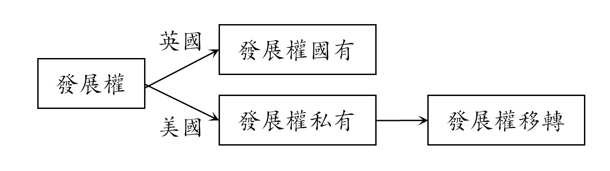
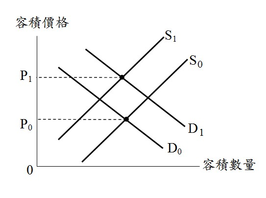

48. 公同共有人行使優先購買權是否需經全體同意：臺灣高等法院暨所屬法院111年法律座談會民執類提案第15號¶
發布日期: 2023-03-28
案例：法院拍賣甲之土地應有部分三分之一，拍定後依法對他共有人為優先承買權利行使之通知。其中有共有人乙行使優先承買權，然乙與丙、丁為公同共有關係。法院通知乙補正得丙、丁同意或代全體公同共有人行使優先承買權之委任書。然乙表示其欲單獨行使優先承買權。試問：法院應否准許？
• (一) 過往通說
民法第828條第3項：「公同共有物之處分及其他之權利行使，除法律另有規定外，應得公同共有人全體之同意。」其中，所謂「其他之權利行使」包含甚廣，除處分行為（例如拋棄時效利益）以外，舉凡公同共有物之使用、收益、變更、保存、改良與管理行為、本於所有權對第三人之請求、清算帳目、行使優先承買權、代為意思表示、代受意思表示或通知、或係審判上、審判外之行使均包括在內。
依實務見解大多認為，公同共有物之其他權利（優先承買權）行使，除法律或契約另有規定外，須經全體公同共有人之同意，始得為之 (參照最高法院69年度臺上字第1252號、87年度臺上字第174號等判決及謝在全著，民法物權論中冊，修訂二版，第19至20頁)。
• (二) 臺灣高等法院暨所屬法院111年法律座談會民執類提案第15號
然而，在111年法律座談會的最後投票結果，卻改變了以往的看法。針對上述案例採肯定說。（即肯定公同共有人一得單獨行使優先購買權）
-
土地法第34條之1第4項規定共有人出賣其應有部分時，他共有人得以同一價格共同或單獨優先承購，此項優先承買權依同條第5項規定於公同共有準用之，公同共有人之一仍具共有人身分自得單獨以其名義行使優先承買權。
-
土地法第34條之1規定共有人有優先承買權，其目的在消滅、簡化共有關係，如肯認公同共有人得單獨以其名義行使優先承買權符合法規範之目的。且各公同共有人不一定全體意志一致，也非每人均有優先承買之經濟能力，若採乙說可能肇致公同共有人之優先承買權之立法目的無法實現。
-
依司法院76年2月20日（76）廳民二字第1884號函研究意見認公同共有人之優先承買權，係基於其為乙之分別共有人而當然發生，應可排除民法第828條規定之適用。亦即公同共有人之一得單獨行使優先承買權，不必經其他公同共有人同意，逕自為優先承購權之主張。
審查意見：採肯定說，理由如下：
-
土地法第34條之1立法意旨係在於兼顧共有人之權益範圍內，排除民法第819條第2項、第828條第3項規定之適用，以便利不動產所有權之交易，解決共有不動產之糾紛，促進共有物之有效利用，增進公共利益。不動產應有部分如屬公同共有者，其讓與得依土地法第34條之1第5項準用第1項規定（司法院釋字第562號解釋）。又依土地法第34條之1第5項準用第4項規定，他公同共有人於公同共有人出賣公同共有土地潛在之應有部分時，對於該公同共有人亦有請求以同樣條件訂立買賣契約之權（最高法院100年度台上字第 1673號裁定意旨參照）。公同共有人依土地法第34條之1第5項準用第1項至第4項規定處分公同共有物或其潛在應有部分，為民法第828條第3項之除外規定，應排除「應得公同共有人全體之同意」之適用。至於他公同共有人行使優先承買權，乃為達簡化共有關係之目的，賦予個別公同共有人優先承買權，其權利行使與公同關係之人法結合關係維持無關，行使權利之結果歸於行使之人，無使其利弊歸於公同共有人全體公同共有之限制及必要。倘該權利之行使須經公同共有人全體同意，有致令優先承買權難以行使之虞，不符土地法第34條之1第4項規定之立法本旨。是應認此項權利之行使，非屬民法第828條第3項所定公同共有物之處分及其他之權利行使，無該條項「應得公同共有人全體之同意」之適用。此在分別共有人出賣應有部分，他共有人因公同共有他應有部分而得依土地法第34條之1第5項準用第4項規定行使優先承買權時，亦應為相同之解釋。
-
本題甲所有土地應有部分三分之一經強制執行拍定，由執行法院通知他共有人行使優先承買權，其中乙、丙、丁因公同共有該土地他應有部分而受通知，其優先承買權利之行使因非屬民法第828條第3項所定公同共有物之處分及其他之權利行使，不受該條項「應得公同共有人全體之同意」規定拘束。乙表示欲單獨行使優先承買權，執行法院不得因其未得丙、丁之同意而予以否准。
研討結果：照修正後之審查意見通過（即同意肯定說）。
因此，目前按照最新的高等法院座談會研討結果，其認為公同共有人行使優先購買權不需其他公同共有人全體同意，而得單獨行之。然而，法律研討會並無拘束力，僅供後續各法官判決參考，後續仍須觀察判決走向。
參考資料:
-
持分地主竟無優先購買權？專家點出關鍵在此-地產天下-自由電子報
-
內政部93年11月30日內授中辦地字第0930016195號函，案經函准法務部93年11月16日法律決字第0930044292號函。
3. 臺灣高等法院暨所屬法院111年法律座談會民執類提案第15號¶
注：本文圖片存放於 ./images/ 目錄下
49. 巴瑞圖經濟效率與馬歇爾經濟效率¶
發布日期: 2023-03-30
• (一) 巴瑞圖經濟效率
一項政策之實施，某些人福利增加，另一些人福利不變，稱為巴瑞圖經濟效率（Pareto Efficiency）。
• (二) 馬歇爾經濟效率
一項政策之實施，某些人福利增加，另一些人福利減少，但總受益大於總受損，淨效益大於零，稱為馬歇爾經濟效率（Marshall Efficiency）。
• (三) 兩者關係
-
一項政策之實施，如果符合巴瑞圖經濟效率之要求，必定符合馬歇爾經濟效率之要求。相反地，一項政策之實施，如果符合馬歇爾經濟效率之要求，不一定符合巴瑞圖經濟效率之要求。換言之，巴瑞圖經濟效率涵蓋馬歇爾經濟效率。
-
政府推行一項政策，當以符合巴瑞圖經濟效率為最佳。無法符合巴瑞圖經濟效率，始退而求其次，至少須符合馬歇爾經濟效率。如果連馬歇爾經濟效率都無法符合，則該項政策不值得採行。
• (四) 舉例
-
市地重劃與土地徵收之比較：政府取得公共設施用地（如道路、公園、學校等）可採用市地重劃或土地徵收。市地重劃基於使用者付費及受益者負擔精神，符合馬歇爾經濟效率，亦符合巴瑞圖經濟效率。土地徵收以市價補償，雖造成社會大多數人福利增加，但造成被徵收地主福利減少，不符合巴瑞圖經濟效率，但符合馬歇爾經濟效率。
-
協議價購與土地徵收之比較：政府取得建設用地可採協議價購或土地徵收。協議價購採雙方合意，符合馬歇爾經濟效率，亦符合巴瑞圖經濟效率。土地徵收以市價補償，雖造成社會大多數人福利增加，但造成被徵收地主福利減少，不符合巴瑞圖經濟效率，但符合馬歇爾經濟效率。
-
土地徵收市價補償與高於市價補償之比較：政府取得公共事業用地可採市價補償或高於市價補償。如採市價補償，基於土地徵收稟賦效果（endowment effect）（指損失土地的痛苦遠大於獲得土地的快樂），造成被徵收地主福利減少，不符合巴瑞圖經濟效率，但符合馬歇爾經濟效率。但如採高於市價補償，使原地主於徵收前與徵收後之福利水準不變，則符合馬歇爾經濟效率，亦符合巴瑞圖經濟效率。
• (五) 結論
-
巴瑞圖經濟效率優於馬歇爾經濟效率。因此，政府施政應追求巴瑞圖經濟效率；無法達成巴瑞圖經濟效率時，始追求馬歇爾經濟效率。
-
政府採市地重劃取得公共設施用地，可以符合巴瑞圖經濟效率。但如採市價徵收取得公共設施用地，僅能符合馬歇爾經濟效率，無法符合巴瑞圖經濟效率。
-
政府如採協議價購取得建設土地，可以符合巴瑞圖經濟效率。但如採市價徵收取得建設土地，僅能符合馬歇爾經濟效率，無法符合巴瑞圖經濟效率。
-
政府採市價補償取得公共事業用地，僅能符合馬歇爾經濟效率，無法符合巴瑞圖經濟效率。但如採高於市價取得公共設施用地（設原地主於徵收前與徵收後之福利水準無差異），可以符合巴瑞圖經濟效率。
[圖片1]
文章圖片¶

50. 交易成本¶
發布日期: 2023-04-06
• (一) 交易成本之意義
交易成本（ Transaction Cost ），指交易過程中所必須負擔之成本。以買賣為例，買方必須負擔交易成本，賣方亦須負擔交易成本。
交易成本有別於生產成本。前者係因交易而產生，後者係因生產而產生。
• (二) 交易成本之內容
-
搜尋資訊之成本：買方擬購買不動產，必須蒐集資訊，以避免買貴。同理，賣方擬出售不動產，必須蒐集資訊，以避免賤售。因此，買賣雙方均有蒐集資訊之成本。
-
雙方議價尋求真實價格之成本：買賣雙方討價還價，最後達成一致價格。因此，買賣雙方均有協商議價之成本。
-
訂定契約之成本：買賣雙方簽訂契約，必須對契約內容逐條審視，以避免契約內容不利於己，而造成交易風險。因此，買賣雙方均有簽訂契約之成本。
-
監視與執行契約之成本：買賣雙方依契約規定行使權利及履行義務。買方監視對方，是否如期辦理過戶登記；賣方監視對方，是否如期交付款項。因此，買賣雙方均有監視對方履行之成本。
-
保護財產權排除他人侵權之成本：契約履行結果，買方取得不動產，賣方取得價金。如有一方違約，另一方行使請求權，訴請法院強制執行。因此，雙方均有保護財產權排除他人侵權之成本。
• (三) 不動產交易成本偏高
不動產交易與其他財貨交易一樣，均存在交易成本。然，不動產交易成本偏高，其理由如下：
-
不動產具有異質性：每一件不動產都不一樣，因此買方購買不動產必須精挑細選，並赴現場看屋。
-
不動產無集中市場：股票有集中市場，故其交易成本低。不動產無集中市場，故其交易成本高。
-
不動產資訊不流通：不動產交易資訊較其他財貨封閉。不動產交易資訊不流通、不正確及不對稱，造成不動產交易成本高。
-
不動產交易金額大：不動產屬於高價財貨，買賣交易須特別謹慎，稍有不慎，將損失慘重。因此，不動產交易之議價時間長，預防措施多，故不動產交易成本高。
-
不動產過戶手續繁瑣：不動產交易必須辦理移轉登記。過戶手續繁複、時間拉長、風險增高，造成不動產交易成本高。
• (四) 交易成本對不動產市場之影響
如圖所示，D0代表無交易成本之不動產需求曲線，S0代表無交易成本之不動產供給曲線。由D0與S0之交點b，決定不動產交易數量Q0。當不動產買賣存在交易成本，因買方有交易成本而使D0左下移至D1，因賣方有交易成本而使S0左上移至S1。由D1與S1之交點e，決定不動產交易數量Q1。不動產買賣因存在交易成本，不動產交易量由Q0減少至Q1，社會福利由△abc縮小為△def。
[圖片1]
• (五) 實價登錄與新科技應用對交易成本之影響
-
實價登錄：政府推行實價登錄，不動產交易資訊更充分、更透明、更正確，減少買賣雙方搜尋資訊之成本，因而降低交易成本。如圖所示，D1代表實價登錄實施前之不動產需求曲線，S1代表實價登錄實施前之不動產供給曲線。由D1與S1之交點e，決定不動產交易量Q1。嗣實價登錄推行，買方之交易成本降低，而使D1右上移至D2，賣方之交易成本降低而使S1右下移至S2。由D2與S2之交點j，決定不動產交易量Q2。實價登錄推行，不動產交易量由Q1增加至Q2，社會福利由△def擴大為△ijk。最有效率資源配置之交易量在Q0。因不動產買賣存在交易成本，而使資源配置之交易量Q1遠離最有效率資源配置之交易量Q0。實價登錄實施，降低交易成本，而使資源配置之交易量由Q1增加至Q2，更趨近最有效率資源配置交易量Q0。
-
新科技應用：新科技應用可以降低交易成本。如買方可以先透過網路3D看屋，初步滿意後，才赴現場實地勘查，以減少不必要看屋之交易成本。展望未來，3D看屋進化至虛擬實境看屋，更可大幅度降低交易成本。
• (六) 結論
-
交易成本等於零，資源配置最有效率。沒有交易成本的世界，稱為「寇斯（Coase）的世界」。寇斯定理是建立在交易成本為零之理想境界。但現實社會，交易成本無所不在，因此，無法達成資源最有效率之配置。
-
交易成本愈大，資源配置效率愈低。因此，如何降低交易成本，而且交易成本愈低愈好，俾往最有效率資源配置邁進。
-
政府建立制度（如實價登錄、履約保證、定型化契約等），可以有效降低交易成本，增進市場效率。
文章圖片¶

51. 有關未辦繼承登記之優先購買人資格（共有人）：參109年度台上字第1546號判決¶
發布日期: 2023-04-11
• 一、案例事實
甲、乙、丙為A地之所有權人，其應有部分各1/3，惟甲死亡後，其應有部分（下稱系爭土地持分）因無人辦理繼承登記，由臺中市政府列冊管理期滿，函請財政部國有財產署依土地法第73條之1規定，委託臺灣金融資產服務股份有限公司公開標售該系爭土地持分，由K得標。
依同條第3項及逾期未辦繼承登記土地及建築改良物標售作業要點規定，繼承人、合法使用人或其他共有人就其實際使用範圍依序有優先購買權。乙為系爭土地之共有人，惟未證明其使用範圍。丙為系爭土地之共有人，與其他共有人有默示分管協議存在，並為該土地上建物之公同共有人，試問乙、丙得否主張優先購買權？
• 二、判決要旨
首先，土地法第73條之1立法目的，係在未辦繼承登記土地或建物標售後，使具有使用事實之繼承人、合法使用人或其他共有人，就其實際使用範圍有優先購買權，俾使土地之使用與所有權能合一，以利經濟效益。
（補充：惟有學者認為此處應是兼顧確保繼承人、合法使用人等有居住事實之現使用人得以繼續居住之權益。亦即應限縮於居住之使用（陳立夫，2023，逾期未辦繼承登記不動產標售時之優先購買權，月旦法學雜誌，第332期））
（一）乙無優先購買權
乙為系爭土地之共有人，惟未證明其使用範圍，依土地法規定，僅得就實際使用範圍主張，未使用範圍即無適用餘地，而無優先購買權。
（二）丙應有優先購買權
依標售要點第11點第1項前段、第12點第1項規定，可知共有人行使土地法本條項之優先購買權，須為逾期未辦繼承登記土地或建物之共有人，及有實際使用之事實，且僅得就其實際使用之範圍主張優先購買權。至於該共有人有無使用之合法權源，則非所問。
本條項所指之其他共有人，自不以分別共有人為限，包括公同共有人，以公同共有人就該土地或建築改良物之所有權與使用權，逐漸趨於合一之故。又本條規定之優先購買權人，係立法賦予其有取得優先購買權之資格，得行使之權利係優先購買權，該權利行使既係一種資格，非行使全體公同共有人之公同共有權利，自無需由公同共有人共同為之，與公同共有人權利行使無涉。
因此，丙應有優先購買權。¶
注：本文圖片存放於 ./images/ 目錄下
52. 制度¶
發布日期: 2023-04-13
• (一) 新古典經濟學派與新制度經濟學派
-
新古典經濟學派：假設人乃在充分資訊與完全理性下做決策。所做的決策為最佳決策，所形成的均衡為資源配置最有效率的均衡。
-
新制度經濟學派：假設人乃在資訊不完全（imperfect information）與有限理性（bounded rationality）下做決策。所做的決策未必為最佳決策，所形成的均衡未必為資源配置最有效率的均衡。 (1)資訊不完全：指吾人手中並不一定擁有完整無誤的資訊，且資訊並非唾手可得，獲得資訊必須付出時間及成本。換言之，人在做決策時，所蒐集的資訊是有限的。 (2)有限理性：指吾人腦中並不一定擁有完整無缺的知識，且知識並非與生俱來，獲得知識必須經過學習過程。換言之，人在做決策時，所具備的知識是有限的。
基上，政府在人民資訊不全與有限理性下，應精心設計「制度」。制度具有可預測性，避免不確定性，有效降低交易成本，使得資源配置往最有效率的方向接近。
[圖片1]
• (二) 制度
-
制度之意義：整套的運行規則，引導個人與廠商往特定方向進行。析言之：(1)制度是規則：制度是遊戲規則，任何人的經濟活動依據規則運行，減少摸索。(2)制度是軌道：制度是前進軌道，任何人的經濟活動依循軌道進行，減少摩擦。 (3)制度是秩序：制度是社會秩序，任何人的經濟活動按照秩序互動，減少紛爭。
-
制度之組成：制度由正式規則與非正式規則所組成。 (1)正式規則：正式規則係由政府精心設計之成文規則。如法令、規章、契約等。 (2)非正式規則：非正式規則係由人們長期互動中逐漸形成之非成文規則。如倫理道德、文化傳統、風俗習慣等。
正式規則具有強制力，依賴公權力約束；非正式規則無強制力，依賴道德及宗教約束。因此制度之建立以正式規則為主，以非正式規則為輔。
- 舉例： (1)分區管制：分區管制透過土地使用種類（如住宅區、商業區、工業區等）及土地使用強度（如建蔽率、容積率、建物高度等）賦予私人財產權範圍。私人僅能在分區管制下進行使用、收益及處分。超過分區管制部分，屬於公共領域。因此，分區管制就是一種制度，透過分區管制，土地私有價值得以確定，土地買賣得以在低交易成本下順利進行。 (2)公告現值：政府於每年1月1日公告土地現值。私人移轉土地時，參考當年公告現值而申報移轉現值，據以計算土地漲價總數額，課徵土地增值稅。因此，公告現值是一種制度，透過公告現值，土地增值稅之徵納得以在低交易成本下順利進行。 (3)實價登錄：買方與賣方申請所有權移轉登記時，檢附申報書共同向政府申報登錄交易資訊。政府將申報登錄資訊，提供大眾查詢，促使不動產交易資訊透明化。因此，實價登錄是一種制度，透過實價登錄，不動產交易資訊公開透明，任何人得以在低交易成本下蒐集資訊。
• (三) 結論
-
新古典經濟學派在描述一個理想狀態下的最佳均衡。新制度經濟學派在描述一個現實狀態下的較佳均衡。
-
政府在資訊不全與有限理性中，扮演非常重要的角色。亦即，政府應精心設計「制度」，以降低交易成本。
-
雖然現實社會交易成本無所不在，但可藉由「制度」降低交易成本，促使資源更有效率之配置。
文章圖片¶
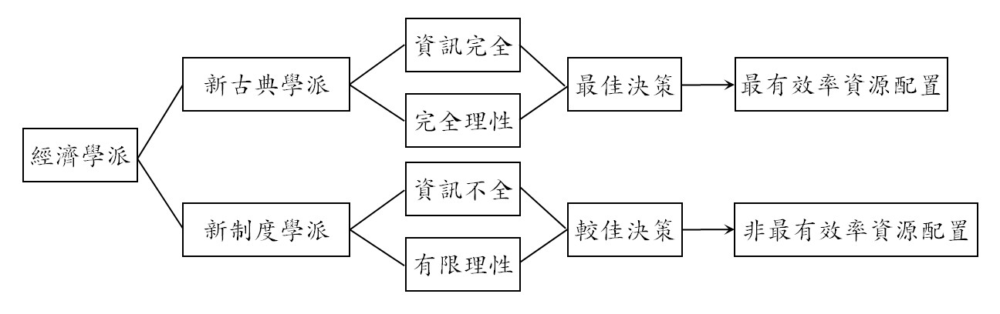
53. 容積移轉折繳代金之意義與優缺點¶
發布日期: 2023-04-18
• (一) 折繳代金之方式取得容積之意義
容積移轉折繳代金指開發者向政府申請容積移轉，透過繳付代金方式，代替以往直接捐贈公保地方式，取得移入容積。換言之，容積移轉不由開發者（接受基地）與公共設施保留地所有權人（送出基地）直接由市場機制交易，而是由政府居間，開發者直接向政府繳代金申請核發容積，而政府收繳開發者所繳的代金後，再用以取得公共設施保留地。
[圖片1]
• (二) 折繳代金之法源依據
-
都市計畫法§83-1：容積移轉之送出基地種類、可移出容積訂定方式、可移入容積地區範圍、接受基地可移入容積上限、換算公式、移轉方式、折繳代金、作業方法、辦理程序及應備書件等事項之辦法，由內政部定之。
-
都市計畫容積移轉實施辦法§9-1 (1)接受基地得以折繳代金方式移入容積，其折繳代金之金額，由直轄市、縣（市）主管機關委託三家以上專業估價者查估後評定之；必要時，查估工作得由直轄市、縣（市）主管機關辦理。其所需費用，由接受基地所有權人或公有土地地上權人負擔。 (2) 前項代金之用途，應專款專用於取得與接受基地同一主要計畫區之私有都市計畫公共設施保留地為限。
• (二) 利（目的、功能）
-
效率面 (1) 解決地主與建商、容積仲介間的資訊不對稱，降低交易成本，提升機制運作效率。 (2) 可將代金有效運用於應優先取得的公共設施保留地。
-
公平面 (1) 解決移出地主與容積仲介之不公平問題。市場有所謂「容積蟑螂」，以其雄厚資金，大量收購公共設施保留地，壟斷容積，操縱價格，使得地主權益與容積價值受到壓縮。 (2) 降低移出地主與建商之不公平問題：建商壓低收購容積成本，使地主無法獲得合理補償，並於高地價地區興建高樓層建築物，享有容積移轉所帶來之利益與其出價購買容積成本落差甚大。即容積「放大效果」。 (3) 容積為公共財，且為有限資源，應由政府統籌運用。政府向地主買入容積，再出售容積予建商，避免現行容積移轉之亂象。
• (三) 弊（缺點、問題）
-
效率面 (1)需等待政府審議及估價時間，效率未必比建商直接與地主合意高。 (2)市場運作效率有時高於政府干預。
-
公平面 (1)代金取得公共設施保留地之優先順序如何公平決定。會否受到利益集團或尋租行為之影響，不無疑義。 (2)如全面以容積折繳代金運作，將減少公共設施保留地之地主獲補償機會，可能需要等待更久的時間。 (3)建商花錢即可購買容積，有犧牲都市環境品質來成全建商之疑慮。
文章圖片¶

54. 地價評議委員會¶
發布日期: 2023-04-20
地價評議委員會由直轄市或縣、（市）政府組織之，主要工作在評議公告地價、公告土地現值及土地徵收補償市價。其組成由相關機關代表、專家學者（包括地政、不動產估價、法律、工程與都市計畫之領域）及民間相關團體代表。其中專家學者與民間相關團體代表，不得少於委員總數二分之一；任一性別委員，不得少於委員總數三分之一（平§4Ⅱ）。
過往，地價評議委員會委員尚包括地方民意代表及公正人士，本次修法（平均地權條例於民國112年2月8日修正公布）予以排除。如此，將使評議地價回歸專業。
土地法稱為「標準地價評議委員會」（土§155），平均地權條例稱為「地價評議委員會」（平§4），兩者合併為「地價及標準地價評議委員會」。其任務包括：
• (一) 地價區段之劃分及各區段之地價。
• (二) 土地改良物價額。
• (三) 市地重劃前後及區段徵收後之地價。
• (四) 依法異議之標準地價。
• (五) 土地徵收補償市價及市價變動幅度。
• (六) 依法復議之徵收補償價額。
• (七) 其他有關地價及標準地價評議事項。（地價及標準地價評議委員會組織規程第3條）¶
注：本文圖片存放於 ./images/ 目錄下
55. 土地徵收條例 §41、42｜區段徵收之權利清理¶
發布日期: 2023-04-20
當原土地所有權人的土地被區段徵收後，除了其喪失土地所有權外，該土地上原本設定的他項權利及租約也會受到影響，此時原所有權人與他項權利人、承租人，或是限制登記權利人的權利關係該如何處理，才不會損害應有的權益呢？
區段徵收之權利清理
．土地有耕地租約、他項權利及限制登記時
土地所有權人申請發給抵價地之原有土地上訂有耕地租約或設定他項權利或限制登記者，除第42條另有規定外，直轄市或縣（市）主管機關應通知申請人限期自行清理，並依規定期限提出證明文件。
．土地有抵押權或典權時
土地所有權人申請發給抵價地之原有土地上設定有抵押權或典權者，原土地所有權人及該他項權利人得申請於發給之抵價地設定抵押權或典權，申請時並應提出同意塗銷原有土地抵押權或典權之證明文件。
Erin 老師提醒
與市地重劃的權利清理不同，區段徵收除了原有的抵押權與典權可以轉載於分配的抵價地外，主要以自行協議清理為主，相對單純許多。而如果申請人未依規定自行協議清理的話，直轄市或縣（市）主管機關就會核定不發給抵價地喔！
另外，權利清理也是區段徵收、市地重劃等相關考題中蠻重要的部份，準備考試中的同學務必要記熟喔！
．延伸閱讀
原文出處：Jasper 不動產
56. 土地徵收條例 § 9｜徵收收回權¶
發布日期: 2023-04-20
因公共所需，依照法定程序，強制剝奪人民的土地所有權，再給予補償之行政行為。
徵收收回權之定義
．意義
被徵收之土地，未按照計畫使用或超過法定期限仍未盡善使用者，為了保障被徵收土地之原所有權人，賦予原所有權人收回之權利。
．要件
1 法律之限制: 區段徵收及土地徵收條例或其他法律另有規定者，不得行使收回權。
2. 時間之限制: 原土地所有權人得於徵收公告之日起二十年內，向該管直轄市或縣（市）主管機關申請照原徵收補償價額收回其土地。
3. 條件之限制: 須符合下列其中一個條件者，才得行使收回權
- 徵收補償費發給完竣屆滿三年，未依徵收計畫開始使用者。
- 未依核准徵收原定興辦事業使用者。
- 依原徵收計畫開始使用後未滿五年，不繼續依原徵收計畫使用者。
Hank 老師提醒
同學們要特別注意，區段徵收之土地是沒有收回權的!
．延伸閱讀
原文出處：Jasper 不動產
57. 遺產稅繳納有困難之處理方式¶
發布日期: 2023-04-25
假設曾大哥與曾小弟一同繼承數筆不動產，應繼分一人二分之一，經國稅局核定應納遺產稅額為200萬元，依規定2個月內要繳納完成，惟曾小弟恰好缺現金繳納不出來，曾大哥擔心逾期繳稅受罰，也擔心無法順利辦完繼承登記而被罰登記費，請問有何處理方法？
• 一、申請延期
遺產稅納稅義務人，應於稽徵機關送達核定納稅通知書之日起二個月內，繳清應納稅款；必要時，得於限期內申請稽徵機關核准延期二個月。(遺贈§30I)
• 二、申請分期繳納
遺產稅應納稅額在三十萬元以上，納稅義務人確有困難，不能一次繳納現金時，得於納稅期限內，向該管稽徵機關申請，分十八期以內繳納，每期間隔以不超過二個月為限(遺贈§30II)。經申請分期繳納者，應自繳納期限屆滿之次日起，至納稅義務人繳納之日止，依郵政儲金一年期定期儲金固定利率，分別加計利息；利率有變動時，依變動後利率計算。(遺贈§30III)
• 三、申請實物抵繳
遺產稅應納稅額在三十萬元以上，納稅義務人確有困難，不能一次繳納現金時，得於納稅期限內，就現金不足繳納部分申請以在中華民國境內之課徵標的物或納稅義務人所有易於變價及保管之實物一次抵繳。中華民國境內之課徵標的物屬不易變價或保管（如畸零地），或申請抵繳日之時價較死亡日之時價為低者，其得抵繳之稅額，以該項財產價值占全部課徵標的物價值比例計算之應納稅額為限。(遺贈§30IV)
因此，曾大哥與小弟可將繼承到的不動產或自己所有之不動產抵繳該稅金。
• 四、提出納稅保證，先行移轉出售
遺產稅未繳清前，不得分割遺產、交付遺贈或辦理移轉登記。但依規定，於事前申請該管稽徵機關核准發給同意移轉證明書，或經稽徵機關核發免稅證明書、不計入遺產總額證明書，不在此限。(遺贈§8)
遺產稅納稅義務人繳清應納稅款、罰鍰及加徵之滯納金、利息後，主管稽徵機關應發給稅款繳清證明書；其經核定無應納稅款者，應發給核定免稅證明書；其有特殊原因必須於繳清稅款前辦理產權移轉者，得提出確切納稅保證，申請該管主管稽徵機關核發同意移轉證明書。(遺贈§41)
因此，曾大哥與小弟可提供其中一筆土地作為擔保，先行取得國稅局核發之同意移轉證明書，而後將其他土地辦理出售移轉登記，待取得價金後，於繳稅期限內繳清遺產稅後，辦理繼承登記。
• 五、先行辦理公同共有繼承登記
繼承人為二人以上時，經部分繼承人按其法定應繼分繳納部分遺產稅款、罰鍰及加徵之滯納金、利息後，為辦理不動產之公同共有繼承登記，得申請主管稽徵機關核發同意移轉證明書；該登記為公同共有之不動產，在全部應納款項未繳清前，不得辦理遺產分割登記或就公同共有之不動產權利為處分、變更及設定負擔登記。(遺贈§41-1)
因此，曾大哥可先就自己部分繳納，辦理公同共有繼承登記，得避免逾期辦理繼承登記而受罰。¶
注：本文圖片存放於 ./images/ 目錄下
58. 共有人優先購買權之檢討¶
發布日期: 2023-04-27
• (一) 共有人出售其應有部分於其中之共有人，則買受人以外之其他共有人無優先購買權。此時，買受人以外之其他共有人之應有部分不會喪失。換言之，買受人以外之其他共有人之權益不受影響。
• (二) 共有人依土地法第34條之1第1項多數決出售共有土地全部於其中之不同意共有人，則買受人以外其他不同意共有人無優先購買權。此時，買受人以外之其他不同意共有人之應有部分因而喪失。換言之，買受人以外之其他不同意共有人之權益受到影響。
• (三) 綜上，上開第一種情形，買受人以外之其他共有人無優先購買權，尚屬合理；第二種情形，買受人以外之其他不同意共有人無優先購買權，則不合理。惟現行實務，上開二種情形，買受人以外之其他共有人皆無優先購買權。¶
注：本文圖片存放於 ./images/ 目錄下
59. 土地徵收vs土地徵用¶
發布日期: 2023-04-28
土地徵收與土地徵用，均是因為公共所需，而強制剝奪人民土地之權利，再給予人民補償。
土地徵收、土地徵用之定義
．土地徵收
因公共所需，依照法定程序，強制剝奪人民的土地所有權，再給予補償之行政行為。
．土地徵用
因臨時性公共建設工程所需，依照法定程序，強制剝奪人民的土地使用權，再給予補償之行政行為，用畢後再歸還給原所有權人。
．比較
| 土地徵收 | 土地徵用 | |
| 性質 | 徵收「所有權」 | 徵用「使用權」 |
| 原因 | 興辦公共事業 | 興辦臨時性之公共建設工程 |
| 時間 | 永久徵收 | 一定期間徵用，用畢後歸還 |
| 補償 | 市價補償 | 徵用公告期滿第十五日之公告土地現值百分之十計算 |
Hank 老師提醒
土地徵用是徵用「使用權」，並非徵收「所有權」，且用畢後會歸還，大家要熟記兩者的差異，才能在考試時回答正確喔!
．延伸閱讀
原文出處：Jasper 不動產
60. 概念比一比 20｜地價區段、區段地價¶
發布日期: 2023-04-28
在準備考試時，常看到公告區段地價與地價區段兩個不同的名詞，兩者都是政府在評定地價時會用到的專有名詞，但是到底「地價」與「區段」這個名詞不同的排列組合，有什麼不一樣呢？
地價區段、區段地價之定義
．地價區段
指政府於辦理規定地價或重新規定地價或公告土地現值作業時，將地價相近、位置相連或情況相同之土地劃為同一地價範圍，此一範「圍稱」為地價區段。
．區段地價
政府依上述規定劃完地價區段後，就其區段內搜集買賣或收益實例估計之中位數為各區段之區段地價，或無實例者採推估之方式決定其區段地價。
Erin 老師提醒
簡單來說，相較於地價區段為一個範圍，區段地價則為一個價格。
另外有關政府實行地價調查估計及土地建築改良物估價之估價標的、估價方法、估價作業程序、估價報告書格式及委託估價等事項，都規定於「地價調查估計規則」中喔！
．延伸閱讀
原文出處：Jasper 不動產
61. 夫妻剩餘財產差額分配之相關稅負¶
發布日期: 2023-05-02
依據民法第1030條之1，法定財產制關係消滅時，夫或妻現存之婚後財產，扣除婚姻關係存續所負債務後，如有剩餘，其雙方剩餘財產之差額，應平均分配。但下列財產不在此限：
• 一、因繼承或其他無償取得之財產。
• 二、慰撫金。
此為夫妻剩餘財產差額分配請求之規定，至於其涉及不動產移轉之相關稅負，茲說明如下：
• (一) 土地增值稅
- 一方死亡時
夫妻一方死亡，生存配偶依民法第1030條之1規定行使剩餘財產差額分配請求權，於申報土地移轉現值時，應檢附其與全體繼承人協議給付文件或法院確定判決書，並准依土地稅法第28條之2規定，申請不課徵土地增值稅（參台財稅字第09604560470號）。
• (1) 申報移轉現值 A.其於生存配偶與全體繼承人訂立協議給付文件之日起30日內申報者，以訂立協議給付文件日當期之公告土地現值為準。 B.逾訂立協議給付文件之日30日後始申報者，以受理機關收件日當期之公告土地現值為準。 C.依法院判決移轉登記者，以申報人向法院起訴日當期之公告土地現值為準。
• (2) 原地價 以應給付差額之配偶取得該土地時核計土地增值稅之現值為原地價。
- 其他原因（離婚或婚姻關係存續中將法定財產制變更為其他財產制）
申請不課徵土地增值稅，相關說明同上（參台財稅字第10700509500號令）。
• (二) 契稅
- 一方死亡時
依契稅條例第2條規定：「不動產之買賣、承典、交換、贈與、分割或因占有而取得所有權者，均應申報繳納契稅。」有關配偶一方依法行使剩餘財產差額分配請求權而取得不動產所有權，非上開條文所定應申報繳納契稅之範圍，應免予報繳契稅。
- 其他原因
同上
• (三) 房地合一稅
- 一方死亡時
非所得稅課徵範圍，惟應注意，涉及房地合一所得稅之「非出價取得」。依據房地合一稅申報作業要點第四點：「配偶之一方依民法第一千零三十條之一規定行使剩餘財產差額分配請求權取得之房屋、土地，為配偶之他方原取得該房屋、土地之日。」
- 其他原因
同上。
• (四) 贈與稅
- 一方死亡時
非屬贈與稅課徵範圍。
- 其他原因
同上。
• (五) 遺產稅
- 一方死亡時
被繼承人之配偶依民法第一千零三十條之一規定主張配偶剩餘財產差額分配請求權者，納稅義務人得向稽徵機關申報自遺產總額中扣除。納稅義務人未於稽徵機關核發稅款繳清證明書或免稅證明書之日起一年內，給付該請求權金額之財產予被繼承人之配偶者，稽徵機關應於前述期間屆滿之翌日起五年內，就未給付部分追繳應納稅賦。(遺贈17-1) 換言之，屬遺產稅之扣除額。
- 其他原因
離婚或財產制變更，無涉遺產稅。¶
注：本文圖片存放於 ./images/ 目錄下
62. 成長極¶
發布日期: 2023-05-04
成長極（growth pole）政策屬於不平衡發展理論。一個國家發展經濟，起初由於資源匱乏，應使資源集中投入在少數核心地區，作最有效運用，此少數地區稱為成長極。俟成長極發展起來後，藉著波及效果，影響至外圍地區。
成長極政策認為一個國家經濟一開始，如採平衡發展理論，將使資源分散，零零落落，發展力道不足，最後全軍覆没。如採不平衡發展理論，集中資源挹注在成長極地區，終必成功。
我國經濟發展，最初選定成長極在新竹科學工業園區。俟新竹科學工業園區發展成功後，再擴及中部科學工業園區及南部科學工業園區，即是著例。¶
注：本文圖片存放於 ./images/ 目錄下
63. 死亡前二年贈與給配偶及剩餘財產差額分配之差異¶
發布日期: 2023-05-09
假設甲夫原本財產4,000萬，僅有唯一繼承人妻乙（原有財產1,000萬），試問如果於死亡前先贈與2,000萬給妻乙，降低遺產額度，會否比較節稅？
首先，先複習相關法條：
• (1) 被繼承人死亡前二年內贈與下列個人之財產，應於被繼承人死亡時，視為被繼承人之遺產，併入其遺產總額，依本法規定徵稅：一、被繼承人之配偶。二、被繼承人依民法第一千一百三十八條及第一千一百四十條規定之各順序繼承人。三、前款各順序繼承人之配偶。（遺贈15）
• (2) 被繼承人之配偶依民法第一千零三十條之一規定主張配偶剩餘財產差額分配請求權者，納稅義務人得向稽徵機關申報自遺產總額中扣除。（遺贈17-1）
• (3) 法定財產制關係消滅時，夫或妻現存之婚後財產，扣除婚姻關係存續所負債務後，如有剩餘，其雙方剩餘財產之差額，應平均分配。但下列財產不在此限：一、因繼承或其他無償取得之財產。二、慰撫金。（民1030-1）
• (一) 於死亡前二年先贈與2,000萬給妻乙
-
土地增值稅：配偶相互贈與之土地，得申請不課徵土地增值稅。（土稅28-2）
-
贈與稅：配偶相互贈與之財產，不計入贈與總額（遺贈20）
-
遺產稅：
-
遺產總額 死亡前二年贈與的2,000萬仍應計入遺產總額，加上甲死亡時遺留的2,000萬，故遺產總額為4,000萬。
-
夫妻剩餘財產差額分配請求扣除額 乙於甲死亡時，財產共1,000萬＋2,000萬＝3,000萬，但依規定2,000萬屬無償取得財產，故不得列入剩餘財產中計算請求權金額。故乙剩餘財產差額分配請求金額＝（甲剩餘財產2,000萬－乙剩餘財產1,000萬）÷2＝500萬
-
遺產稅額 遺產稅＝遺產總額4,000萬－扣除額（妻493萬、喪葬費123萬、夫妻剩餘財產差額請求扣除額500萬）－免除額（1333萬）後，乘上10％稅率＝155.1萬元
• (二) 於死亡前二年以上先贈與2,000萬給妻乙
-
土地增值稅：配偶相互贈與之土地，得申請不課徵土地增值稅。（土稅28-2）
-
贈與稅：配偶相互贈與之財產，不計入贈與總額（遺贈20）
-
遺產稅：
-
遺產總額 前二年以上之贈與不需計入遺產總額，故甲死亡時遺產總額為2,000萬。
-
夫妻剩餘財產差額分配請求扣除額 乙於甲死亡時，財產共1,000萬＋2,000萬＝3,000萬，但依規定2,000萬屬無償取得財產，故不得列入剩餘財產中計算請求權金額。故乙剩餘財產差額分配請求金額＝（甲剩餘財產2,000萬－乙剩餘財產1,000萬）÷2＝500萬
-
遺產稅額 遺產稅＝遺產總額2,000萬－扣除額（妻493萬、喪葬費123萬、夫妻剩餘財產差額請求扣除額500萬）－免除額（1333萬）後，乘上10％稅率＝0元
• (三) 死亡前無贈與，全部留為遺產
-
土地增值稅：因繼承而移轉之土地，免徵土地增值稅。（土稅28）
-
贈與稅：非屬贈與稅課徵範圍。
-
遺產稅：
-
遺產總額 甲死亡時遺產總額為4,000萬。
-
夫妻剩餘財產差額分配請求扣除額 乙剩餘財產差額分配請求金額＝（甲剩餘財產4,000萬－乙剩餘財產1,000萬）÷2＝1,500萬
3. 遺產稅額 遺產稅＝遺產總額4,000萬元－扣除額（妻493萬、喪葬費123萬、夫妻剩餘財產差額請求扣除額1,500萬）－免除額（1333萬）後，乘上10％稅率＝55.1萬元¶
注：本文圖片存放於 ./images/ 目錄下
64. 民法 § 769、770｜取得時效-不動產¶
發布日期: 2023-05-09
民法關於時效之規定，不僅有時效消滅，尚有時效取得之規定!
取得時效-不動產之意義
和平公然占有他人之不動產，經過一段時間後，得請求登記為該不動產之所有人。
取得時效-不動產之要件
1.未登記之不動產:
2.別人之不動產:
3.以所有之意思和平公然占有
4.10年間繼續占有/20年間繼續占有
Hank 老師提醒
同學們作答時，要先判斷其占有之始是否為善意並無過失者，才能知道該取得時效為10年或20年喔!
．延伸閱讀
原文出處：Jasper 不動產
65. 平均地權條例｜112年修法重點¶
發布日期: 2023-05-09
平均地權條例於112年2月公布修正後，內政部並於同年4月25日預告相關子法，內容包括禁止預售屋換約轉售，私法人買住宅採許可制，檢舉獎金制度，草案將預告20天後，報行政院核定施行日期。然而在子法上路前，本篇文章將帶大家了解本年度平均地權條例修正的幾大重點。
平均地權條例112年修法的意義
為抑制房市炒作與阻斷獲利源頭，本次修法針對虛假交易哄抬房價、新建成屋「紅單」轉售及預售屋、新建成屋之換約轉售牟利等不當炒作行為，提出對策，嚴懲不動產炒作行為，並增訂私法人取得住宅採許可制，將有助維護不動產市場交易秩序，保障居住需求者之購屋權益。
修正內容
- 預售屋買賣契約之解約情形納入申報登錄資訊範圍，並將領得使用執照且未辦竣建物所有權第一次登記之成屋（以下簡稱新建成屋）之定金書面契據納入管理，及增訂銷售者不得同意或協助轉售該契據。（修正條文第47條之3）
- 增訂預售屋或新建成屋買賣契約不得讓與或轉售之限制，且其銷售者不得同意或協助契約讓與或轉售，及例外得讓與或轉售之情形。（修正條文第47條之4）
- 增訂任何人不得有不動產炒作行為。（修正條文第47條之5）
- 增訂私法人取得供住宅使用房屋許可制，並限制取得後於一定期限內不得辦理移轉、讓與或預告登記。（修正條文第79條之1）
- 增訂解除預售屋買賣契約申報登錄不實及銷售者違規同意或協助轉售書面契據之罰責。（修正條文第81條之2）
- 增訂預售屋或新建成屋買賣契約違規讓與、轉售，或不動產炒作行為之罰責。（修正條文第81條之3）
- 增訂不動產銷售、買賣或成交資訊申報違規之檢舉制度及授權中央主管機關訂定相關辦法。（修正條文第81條之4）
（資料來源：行政院https://www.ey.gov.tw/Page/5B2FC62D288F4DB7/97bb37ca-0cc5-4b72-9326-d37d251565d1）
Erin 老師提醒
本次平均地權條例修法僅有部分於公布後施行，其餘尚待配套法規研擬後才會由行政院公布施行喔！
另外這次平權條例的修法，主要都是「新增」的規定，與舊法衝突部分不多，大抵上重點為上面所提到的幾個大方向，同學可以先行參閱公布的條文來了解。考試基本上是依考試當時施行的法規來作答，但本次修正意義上較重大，同學還是要瞭解一下喔！
．延伸閱讀
原文出處：Jasper 不動產
66. 土地稅法 §30｜申報移轉現值之標準¶
發布日期: 2023-05-09
為了課徵土地增值稅所需，每筆土地於所有權移轉或設定典權時，都必須申報移轉現值，以作為計算漲價總數額（土地增值稅課徵）之依據，然而移轉現值的申報是否有相關的標準呢？本篇將為大家介紹在不同情況下，申報移轉現值之標準。
申報移轉現值之標準
- 申報人於訂定契約之日起三十日內申報者：以訂約日當期之公告土地現值為準。
- 申報人逾訂定契約之日起三十日始申報者：以受理申報機關收件日當期之公告土地現值為準。
- 遺贈之土地：以遺贈人死亡日當期之公告土地現值為準。
- 依法院判決移轉登記者：以申報人向法院起訴日當期之公告土地現值為準。
- 經法院或法務部行政執行署所屬行政執行分署（以下簡稱行政執行分署）拍賣之土地：以拍定日當期之公告土地現值為準。
（但拍定價額低於公告土地現值者，以拍定價額為準；拍定價額如已先將設定抵押金額及其他債務予以扣除者，應以併同計算之金額為準。）
- 經政府核定照價收買或協議購買之土地：以政府收買日或購買日當期之公告土地現值為準。
（但政府給付之地價低於收買日或購買日當期之公告土地現值者，以政府給付之地價為準。）
未按前述標準申報之處理
- 前項第一款至第四款申報人申報之移轉現值，經審核低於公告土地現值者，得由主管機關照其自行申報之移轉現值收買或照公告土地現值徵收土地增值稅。
- 前項第一款至第三款之申報移轉現值，經審核超過公告土地現值者，應以其自行申報之移轉現值為準，徵收土地增值稅。
Erin 老師提醒
依土地稅法第30條之規定，法院判決申報的土地移轉，如申報移轉現值高於起訴日當期的公告現值，仍須以起訴日當期的公告土地現值為準核課土地增值稅。
背後意義在於有些法院判決的案件是可以由權利人單獨申報移轉現值的，為避免權利人故意高報移轉現值而增加納稅義務人稅負負擔，同時墊高自己本次取得的現值（變相降低了自己之後移轉應繳納的增值稅），所以才會有此規定喔！
．延伸閱讀
原文出處：Jasper 不動產
67. 撤銷徵收 V. S. 廢止徵收¶
發布日期: 2023-05-09
在符合特定之情況下，得撤銷或廢止已公告徵收之土地。
撤銷徵收、廢止徵收之定義
．撤銷徵收
違法之徵收處分，因作業錯誤、都市計畫已規定以徵收以外之方式開發時，得撤銷徵收。
．廢止徵收
合法之徵收處分，因工程變更設計、興辦事業改變、情勢變更時，得廢止徵收。
．比較
| 撤銷徵收 | 廢止徵收 | |
| 徵收處分 | 違法 | 合法 |
| 失效之時間點 | 溯及既往失其效力 | 向後失其效力 |
| 原因 | 1.因作業錯誤，致原徵收之土地不在工程用地範圍內。 2.公告徵收時，都市計畫已規定以聯合開發、市地重劃或其他方式開發。但以聯合開發方式開發之土地，土地所有權人不願參與聯合開發者，不在此限。 | 1.因工程變更設計，致原徵收之土地不在工程用地範圍內。 2.依徵收計畫開始使用前，興辦之事業改變、興辦事業計畫經註銷、開發方式改變或取得方式改變。 3.已依徵收計畫開始使用，尚未依徵收計畫完成使用之土地，因情事變更，致原徵收土地之全部或一部已無徵收之必要。 |
Hank 老師提醒
熟記撤銷和廢止徵收之發生原因，以及兩者的相異之處，考試時才不會搞混喔!
．延伸閱讀
原文出處：Jasper 不動產
68. 地籍測量錯誤之實例研習¶
發布日期: 2023-05-11
甲所擁有A地與乙所擁有B地毗鄰，於實施地籍圖重測時雙方皆到場指界，並對界址、界線無爭議。但地政事務所在依重測結果修訂地籍圖時，因操作失誤，導致地籍圖上界址、界線偏位，比照現地界線實際偏入A地範圍內1公尺。後來，甲在A地建築房子自住，該屋外牆緊貼甲所認知現地A、B兩地交界之界線。而乙將B地賣給不知情且信賴地籍圖與登記之丙，並完成移轉登記。嗣後丙卻發現依照地籍圖所示，甲的房屋部分越界1公尺建築在B地上，於是主張甲應該拆屋還地。
• (一) 該管地政事務所清查後，發現當年重測作業確實存在疏失，於此情形下可否辦理地籍圖與登記之更正？試論述之。
• (二) 丙所擁有B地之權利範圍應以現地還是地籍圖所標示者為準？試論述之。（111年原住民族）
【解答】
• (一) 辦理地籍圖與登記之更正：
-
地籍圖重測結果辦理土地標示變更登記完竣後，發現原重測成果錯誤，應辦理重測成果更正，並於辦竣土地標示更正登記後，以書面通知土地所有權人及他項權利人更正結果者，免依土地法第46條之3規定辦理（即地政機關無須辦理公告）。前項土地所有權人或他項權利人如對更正結果有異議，除依地籍測量實施規則申請複丈外，得訴請法院裁判或以訴訟外紛爭解決機制處理（測§201-3）。
-
已辦地籍測量之地區，發現錯誤，除有下列情形之一者，得由登記機關逕行辦理更正外，應報經直轄市或縣（市）主管機關核准後始得辦理： (1)原測量錯誤純係技術引起。 (2)抄錄錯誤。（測§232I） 前項第一款所稱原測量錯誤純係技術引起，指原測量錯誤純係觀測、量距、整理原圖、訂正地籍圖或計算面積等錯誤所致，並有原始資料可稽；第二款所稱抄錄錯誤，指錯誤因複丈人員記載之疏忽所引起，並有資料可資核對（測§232II）。
• (二) 丙所擁有B地應以更正後地籍圖所標示者為準，而非以現地為準。
• (三) 丙不得主張拆屋還地：
-
依民法第796條第1項規定，土地所有人建築房屋非因故意或重大過失逾越地界者，鄰地所有人不得請求移去或變更其房屋。準此，本題係因地政事務所測量錯誤所致，故丙不得向甲主張拆屋還地。
-
依民法第796條第2項規定，丙雖不能請求拆屋還地，但得請求甲以相當之價額購買越界之土地。
• (四) 甲、丙二人如因登記（包括測量）錯誤致受損害，得依土地法第69條規定請求地政機關賠償。¶
注：本文圖片存放於 ./images/ 目錄下
69. 逾期未辦繼承登記不動產標售時之優先購買權重點整理¶
發布日期: 2023-05-16
各位同學好
針對陳立夫教授於今年1月的月旦法學雜誌第332期（p.227-236）：「逾期未辦繼承登記不動產標售時之優先購買權」文章，因屬我們土地法重要考試範圍，本期專欄針對幾個重要部分進行整理。詳細文章內容則請另行參考該期雜誌。
• 一、土地法第73條之1第3項規定優先購買權之規定
「依第二項規定標售土地或建築改良物前應公告三個月，繼承人、合法使用人或其他共有人就其使用範圍依序有優先購買權。但優先購買權人未於決標後三十日內表示優先購買者，其優先購買權視為放棄。」
• 二、優先購買權之立法目的
係為兼顧確保繼承人等有居住事實之現使用人得以繼續居住之權益；準此，則法解釋上，所定優先購買權人自須限於有居住事實之現使用人，且其得優先購買之範圍，僅限於其「使用範圍」。如無居住事實者，即不得主張行使優先購買權。
• 三、優先購買權人之意涵
依序為：
- 繼承人
逾期未辦繼承登記不動產，於登記機關之登記簿所登載所有權人之法定繼承人。若有部分繼承人使用逾期未辦繼承登記不動產之全部或特定一部之情形，該繼承人之使用是否具合法權源並非所問，均得就其實際使用範圍行使優先購買權。
按實務上，依法標售之逾期未辦繼承登記不動產，並非僅限於是項不動產之全部，亦有僅標售未辦繼承登記不動產之應有部分者。於此情形，則土地法第73 條之1 第3 項規定得優先購買之「使用範圍」，係依標售應有部分之比例計算。亦即，得優先購買之使用範圍＝優先購買權人之使用範圍面積÷不動產全面積×標售不動產之應有部分。
- 合法使用人
• (1) 前述繼承人以外具使用權源之其他共有人 (2)地上權等用益物權人 (3)租賃之承租人 (4)使用借貸關係之使用人
- 其他共有人
當分別共有之不動產，其各應有部分有逾期未辦繼承登記情形時，與該逾期未辦繼承登記應有部分具共有關係之共有人（但不包含前開繼承人及合法使用權源之其他共有人），其不以分別共有人為限，亦包括公同共有人。
其他共有人只要有實際使用之情事即屬適格，其有無使用之合法權源，亦非所問。¶
注：本文圖片存放於 ./images/ 目錄下
70. 依侵權行為請求賠償，抑或依給付不能請求賠償¶
發布日期: 2023-05-18
共有人依土地法第34條之1第1項出賣共有土地，並辦畢所有權移轉登記。未受通知之他共有人應依侵權行為（民§184、§185）規定向出賣土地共有人請求連帶賠償，不得依給付不能之法律關係（民§226I）請求賠償（109年度台上大字第2169號裁定主文）。其理由（109年度台上大字第2169號裁定理由）如下：
• (一) 部分共有人依土地法第34條之1第1項規定出賣共有土地全部，並已辦畢所有權移轉登記，原共有關係於標的土地所有權移轉登記後消滅，原共有人亦均喪失共有人身分。縱為出售、處分者違反通知義務，然未受通知者於土地所有權移轉登記後，已無從再行使共有人優先承購權，且為出售、處分者亦無與之訂立買賣契約之意願，雙方自未成立買賣契約，該未受通知者即不得依給付不能之法律關係請求出賣之共有人賠償損害。
• (二) 土地共有人依土地法第34條之1第1項規定出賣共有之土地，未依同條第2項規定通知他共有人，並辦畢所有權移轉登記時，出賣之共有人就其應有部分已無從與他共有人成立買賣契約。他共有人於移轉登記後知悉上情，自不得依給付不能之法律關係，請求出賣之共有人賠償損害。
• (三) 是以，出賣之共有人違反通知義務，致未受通知之他共有人無從行使優先承購權，倘構成侵權行為致該共有人因此受有損害，自得依侵權行為之法則請求出賣之共有人負損害賠償責任。¶
注：本文圖片存放於 ./images/ 目錄下
71. 房地合一稅重購退稅之條件¶
發布日期: 2023-05-23
首先，根據所得稅法第14條之8規定：
-
先賣後買（申請退稅）：出售自住房屋、土地依第十四條之五規定繳納之稅額，自完成移轉登記之日或房屋使用權交易之日起算二年內，重購自住房屋、土地者，得於重購自住房屋、土地完成移轉登記或房屋使用權交易之次日起算五年內，申請按重購價額占出售價額之比率，自前開繳納稅額計算退還。
-
先買後賣（申報扣抵）：個人於先購買自住房屋、土地後，自完成移轉登記之日或房屋使用權交易之日起算二年內，出售其他自住房屋、土地者，於依第十四條之五規定申報時，得按前項規定之比率計算扣抵稅額，在不超過應納稅額之限額內減除之。
-
前二項重購之自住房屋、土地，於重購後五年內改作其他用途或再行移轉時，應追繳原扣抵或退還稅額。
其申請退稅條件茲整理如下：
-
設籍：本人或配偶、未成年子女辦竣戶籍登記並居住。
-
用途：該房屋出售前1年內無出租、供營業或執行業務使用。
-
產權：建物產權須為本人或其配偶所有。
-
期間：不論先賣後買或先買後賣，其移轉登記(權利)日相距2年內。
-
申請：登記(交易)日次日起5年內申請退稅；先買後賣可於申報時直接扣抵。
6. 限制：重購於登記(交易日)後5年內改作其他用途或再行移轉時，應追繳原扣抵或退還稅額。¶
注：本文圖片存放於 ./images/ 目錄下
72. 地籍測量實施規則 § 204｜複丈之原因¶
發布日期: 2023-05-23
已測量之土地，在經歷特殊情況後，得申請土地複丈，確認地籍圖之正確性。
複丈之意義
已辦地籍測量之地區，因土地自然增加、浮覆、坍沒、分割、合併等，造成實際情況與地籍圖不相符，得申請再次測量。
建物複丈-建物分割的要件
．土地有下列情形之一者，得申請土地複丈
1.因自然增加、浮覆、坍沒、分割、合併或變更。
2.因界址曲折需調整。
3.依建築法第四十四條或第四十五條第一項規定調整地形。
4.宗地之部分設定地上權、農育權、不動產役權或典權。
5.因主張時效完成，申請時效取得所有權、地上權、農育權或不動產役權。
6.鑑界或位置勘查。
Hank老師提醒
建議同學將土地複丈的原因，搭配土地複丈之申請人去背誦!
．延伸閱讀
原文出處：Jasper 不動產
73. 土地登記規則 § 136｜限制登記¶
發布日期: 2023-05-23
為了保全請求權人或債權人之權益，暫時凍結登記名義人之處分權。
限制登記的意義
限制登記名義人處分其土地權利所為之登記。
限制登記的情況
1.預告登記
2.查封登記
3.假扣押登記
4.假處分登記
5.暫時處分登記
6.破產登記
7.清算登記
8.其他禁止處分之登記
Hank 老師提醒
了解限制登記之意義，以及限制登記之各個種類，並背誦各之意義＆要件!
．延伸閱讀
原文出處：Jasper 不動產
74. 民法 § 1140｜代位繼承¶
發布日期: 2023-05-23
被繼承人死亡後，由法定繼承人繼承其財產，在特殊情況下，可由法定繼承人之直系血親卑親屬代位繼承。
代位繼承之意義
民法第一千一百三十八條所定第一順序之繼承人，有於繼承開始前死亡或喪失繼承權者，由其直系血親卑親屬代位繼承其應繼分。
代位繼承之要件
1.被代位繼承人須於繼承開始前死亡或喪失繼承權。
2.被代位繼承人係為被繼承人之直系血親卑親屬。
3.代位繼承人須為被代位繼承人之直系血親卑親屬。
Hank 老師提醒
這邊提醒同學們，要先符合代位繼承的所有要件，才可代位繼承唷!
．延伸閱讀
原文出處：Jasper 不動產
75. 民法 § 988｜結婚無效¶
發布日期: 2023-05-23
民法關於結婚之規定，要符合形式＆實質要件，才得結婚。
結婚無效之意義
民法關於結婚之規定，在符合特定的情況下，結婚無效。
結婚無效之情況
1.不具備第九百八十二條之方式。
2.違反第九百八十三條規定。
3.違反第九百八十五條規定。但重婚之雙方當事人因善意且無過失信賴一方前婚姻消滅之兩願離婚登記或離婚確定判決而結婚者，不在此限。
Hank 老師提醒
這邊提醒同學們，民法關於結婚之無效，是自始、當然、絕對無效!
．延伸閱讀
原文出處：Jasper 不動產
76. 土地登記損害賠償－最高法院民事大法庭裁定110年度台上大字第3017號¶
發布日期: 2023-05-25
• (一) 無過失賠償責任：
-
土地法第68條第1項前段規定：「因登記錯誤遺漏或虛偽致受損害者，由該地政機關負損害賠償責任」，乃以貫徹土地登記之公示性及公信力，並保護權利人之權利與維持交易安全為規範目的。該規定文義既未明示以登記人員之故意或過失為要件，原則上自應由地政機關就登記不實之結果，負無過失之賠償責任，且不以該不實登記是否因受害人以外之第三人行為所致，而有不同（110年度台上大字第3017號裁定理由）。
-
因登記錯誤遺漏或虛偽致受損害者，除非該地政機關能證明其原因應歸責於受害人，否則即應負損害賠償責任，不以登記人員有故意或過失為要件（110年度台上大字第3017號裁定主文）。
-
凡因登記錯誤遺漏或虛偽致受損害者，除地政機關能證明其原因應歸責於受害人外，受害人皆得依土地法第68條規定，請求地政機關損害賠償，不以登記人員就不實登記有故意或過失為要件（110年度台上大字第3017號裁定理由）。
-
基於責任衡平化之原則，土地法第68條第1項但書規定：「但該地政機關證明其原因應歸責於受害人時，不在此限」，即地政機關可就應歸責於受害人之登記不實，免除損害賠償責任（110年度台上大字第3017號裁定理由）。
• (二) 限縮賠償範圍：土地法第68條第2項規定：「前項損害賠償，不得超過受損害時之價值」，即以受害人實際所受之積極損害為地政機關賠償範圍，不包括消極損害（所失之利益）在內，以適度調和其所負之責任及限縮賠償責任範圍（110年度台上大字第3017號裁定理由）。
• (三) 分散風險：土地法第70條規定：「地政機關所收登記費，應提存百分之十作為登記儲金，專備第六十八條所定賠償之用（第 1項）。地政機關所負之損害賠償，如因登記人員之重大過失所致者，由該人員償還，撥歸登記儲金（第 2項）」，即採取登記儲金制度，以登記費之一部作為賠償之用，並限制登記人員僅就重大過失負償還責任，俾分散風險，避免造成國家財政負擔及登記人員責任過重。（110年度台上大字第3017號裁定理由）。
• (四) 受害人與有過失：民法第217條關於被害人與有過失之規定，於債務人應負無過失責任者，亦有其適用。受害人就損害之發生或擴大，是否與有過失，係屬具體個案之事實認定問題（110年度台上大字第3017號裁定理由）。換言之，受害人與有過失，法院得減輕地政機關之賠償責任。¶
注：本文圖片存放於 ./images/ 目錄下
77. 得申請不課徵土地增值稅之農業用地定義¶
發布日期: 2023-05-30
根據土地稅法第39條之2第1項（同農業發展條例第37條第1項）：「作農業使用之農業用地，移轉與自然人時，得申請不課徵土地增值稅。」
有關該得申請不課徵土地增值稅之農業用地定義，需符合下面兩個條件：
• 一、農業使用
土地稅法第10條（同農業發展條例第3條第10款）
指非都市土地或都市土地農業區、保護區範圍內，依法供下列使用之土地： （一）供農作、森林、養殖、畜牧及保育使用者。 （二）供與農業經營不可分離之農舍、畜禽舍、倉儲設備、曬場、集貨場、農路、灌溉、排水及其他農用之土地。 （三）農民團體與合作農場所有直接供農業使用之倉庫、冷凍（藏）庫、農機中心、蠶種製造（繁殖）場、集貨場、檢驗場等用地。
此部分應檢附直轄市、縣 (市) 農業主管機關（或區、鄉 (鎮、市、區) 公所）核發之農業用地作農業使用證明文件，送主管稽徵機關辦理。
然而，上述並非指所有的非都市土地作農用都可以申請不課徵，而是必須位於特定分區、使用地上，故要符合以下第二個條件。
• 二、特定分區、使用地
土地稅法施行細則第57條（同農業發展條例施行細則第2條）
所稱農業用地，其法律依據及範圍如下： （一）本條例第三條第十一款所稱之耕地。 （二）依區域計畫法劃定為各種使用分區內所編定之林業用地、養殖用地、水利用地、生態保護用地、國土保安用地及供農路使用之土地，或上開分區內暫未依法編定用地別之土地。 （三）依區域計畫法劃定為特定農業區、一般農業區、山坡地保育區、森林區以外之分區內所編定之農牧用地。 （四）依都市計畫法劃定為農業區、保護區內之土地。 （五）依國家公園法劃定為國家公園區內按各分區別及使用性質，經國家公園管理處會同有關機關認定合於前三款規定之土地。
換言之，農業用地可分為位於非都市土地、都市土地及國家公園土地之特定分區、使用地上。其中，前三款屬於非都市土地之特定用地別，整理一下，其實會發現第一款與第三款可以合起來看，所謂耕地指依區域計畫法劃定為特定農業區、一般農業區、山坡地保育區及森林區之農牧用地，而第三款又說上面這四個分區以外的農牧用地，兩者合起來等同於不管什麼分區下的農牧用地都是農業用地。因此，就上述規定再予簡化如下：
• (一) 非都市土地
實際就是下列這八種使用地（不論在哪個分區）：
-
農牧用地
-
林業用地
-
養殖用地
-
水利用地
-
生態保護用地
-
國土保安用地
-
供農路使用之土地
-
暫未依法編定用地別之土地
• (二) 都市土地
-
農業區
-
保護區
• (三) 國家公園土地
認定符合前述非都性質之土地¶
注：本文圖片存放於 ./images/ 目錄下
78. 司法院釋字第107號及第164號解釋之補充¶
發布日期: 2023-06-01
日據時期已登記之土地，因日據後期改採契據登記制度，使登記僅生對抗效力，致該土地登記無法完全體現真正權利之歸屬者，與臺灣光復後所採取之土地登記生效制度有異。故在此種對土地登記效力採行不同之法律制度下，對於未經依我國相關土地法令辦理土地登記之原所有權人，縱其土地於日據時期曾經登記，因成為河川、水道經塗銷登記，嗣於臺灣光復後浮覆，但在未依我國法令辦理土地總登記前，該土地仍屬「未登記」之不動產，其原所有權人依民法第767條第1項規定行使物上請求權時，有消滅時效規定之適用（110年度台上大字第1153號裁定理由）。
總之，司法院釋字第107號及第164號解釋，所稱「已登記不動產」，係指依我國法律所為之登記而言，以維護我國土地登記制度採實質審查之公示及公信功能。¶
注：本文圖片存放於 ./images/ 目錄下
79. 不動產估價技術規則 §19｜比較法的四大調整項目¶
發布日期: 2023-06-05
在不動產估價的三大方法中，最常見的就是「比較法」囉！而比較法指以比較標的價格為基礎，經比較、分析及調整等，以推算勘估標的價格之方法。而依比較法所求得之價格則稱為「比較價格」。而在操作比較法的過程中，則有四大調整項目，本篇文章將為大家說明這四種調整項目。
比較法的四大調整項目
．一、情況調整
比較標的之價格形成條件中有非屬於一般正常情形而影響價格時，或有其他足以改變比較標的價格之情況存在時，就該影響部分所作之調整。
．二、價格日期調整
比較標的之交易日期與勘估標的之價格日期因時間之差異，致價格水準發生變動，應以適當之變動率或變動金額，將比較標的價格調整為勘估標的價格日期之價格。
．三、區域因素調整
所選用之比較標的與勘估標的不在同一近鄰地區內時，為將比較標的之價格轉化為與勘估標的同一近鄰地區內之價格水準，而以比較標的之區域價格水準為基礎，就區域因素不同所產生之價格差異，逐項進行之分析及調整。
．四、個別因素調整
以比較標的之價格為基礎，就比較標的與勘估標的因個別因素不同所產生之價格差異，逐項進行之分析及調整。
實例說明
Jasper在以比較法進行不動產估價時，找到了一個一般情況下成交，成交日期為半年前，且位於類似地區、個別因素相當之比較案例，若該比較標的之區域因素較勘估標的差，且這半年間價格水準也有一定的波動，此時Jasper就必須將該比較標的做區域因素調整與價格日期調整，以推估比較標的之試算價格。
Erin 老師提醒
試算價格之調整運算過程中，區域因素調整、個別因素調整或區域因素及個別因素內之任一單獨項目之價格調整率若大於15%，或情況、價格日期、區域因素及個別因素調整總調整率大於30%時，應排除該比較標的之適用。
但勘估標的性質特殊或區位特殊缺乏市場交易資料，並於估價報告書中敘明者，不在此限喔！
．延伸閱讀
原文出處：Jasper 不動產
80. 不動產估價技術規則 §132｜新訂租約之租金估計方式¶
發布日期: 2023-06-05
不動產估價除了可以評估一般不動產的價格外，也可以評估不動產的租金喔！而不動產租金估計，又須因其為新訂租約或續訂租約的不同而分別為之，本篇文章將帶大家看不動產估價技術規則對於新訂租約之租金估計方式之規定。
新訂租約之租金估計方式
．一、租賃實例比較法
以新訂租約之租賃實例為比較標的，運用比較法估計之。
．二、積算法
以勘估標的價格乘以租金收益率，以估計淨收益，再加計必要費用。
．三、收益分析法
分析企業經營之總收入，據以估計勘估標的在一定期間內之淨收益，再加計必要費用。
Erin 老師提醒
不論是新訂租約或者續訂租約的租金估價，不動產租金估計，都是以估計勘估標的之實質租金為原則。而所稱實質租金，則是指承租人每期支付予出租人之租金，加計押金或保證金、權利金及其他相關運用收益之總數。
另有關續訂租約之租金估計，則可以參考此篇喔：不動產估價技術規則 §133｜續訂租約之租金估計方式
．延伸閱讀
原文出處：Jasper 不動產
81. 不動產估價技術規則 §133｜續訂租約之租金估計¶
發布日期: 2023-06-05
不動產估價除了可以評估一般不動產的價格外，也可以評估不動產的租金喔！而不動產租金估計，又須因其為新訂租約或續訂租約的不同而分別為之，本篇文章將帶大家看不動產估價技術規則對於續訂租約之租金估計方式之規定。
續訂租約之租金估計方式
．一、租賃實例比較法
以新訂租約之租賃實例為比較標的，運用比較法估計之。
．二、利率法
以勘估標的於價格日期當時之正常價格為基礎，乘以續租之租金收益率，以估計淨收益，再加計必要費用。
．三、推算法
以勘估標的原契約租金之淨收益，就其租金變動趨勢調整後，再加計必要費用。
．四、差額分配法
分析勘估標的原契約租金與市場經濟租金之差額中，應歸屬於出租人之適當部分，加計契約租金。
Erin 老師提醒
不論是新訂租約或者續訂租約的租金估價，不動產租金估計，都是以估計勘估標的之實質租金為原則。而所稱實質租金，則是指承租人每期支付予出租人之租金，加計押金或保證金、權利金及其他相關運用收益之總數。
另有關新訂租約之租金估計，則可以參考此篇喔：不動產估價技術規則 §132｜新訂租約之租金估計方式
．延伸閱讀
原文出處：Jasper 不動產
82. 不動產估價技術規則 §111｜農作改良物之估價方式¶
發布日期: 2023-06-05
一般人可能不知道，不動產估價師的估價業務內容，除了一般常見的土地、房屋外，其實也包含了農作物的估價喔！本篇文章將帶大家看不動產估價技術規則對於農作改良物估價之規定。
農作改良物之估價方式
．一、農作改良物幼小且距孳息成熟期尚長者
依其種植及培育費用，並視作物生長情況估計之。
．二、農作改良物接近孳息成熟期者
應估計其收穫量及市場價格，必要時得扣減價格日期至作物孳息成熟期間收成所應投入之費用。
．三、農作改良物距成熟期一年以上，且有期待收穫價值者
得以產地價格為基礎，推估未來收穫價格後，折算為價格日期之價格。但應扣除價格日期至作物孳息成熟期間收成所應投入之費用。
Erin 老師提醒
有關於農作改良物的估價方法，也適用於土地徵收時農作改良物補償費之計算，同學可以試著將不動產估價技術規則第111條與土地徵收條例第31條第2項的規定對照看看喔！
．延伸閱讀
原文出處：Jasper 不動產
83. 土地登記不實之損害賠償責任¶
發布日期: 2023-06-06
※案例
甲冒名其弟乙，拿其身分證、印章與申請補發之權狀，向第三人丙借款250萬，並設定最高限額抵押權375萬元登記完畢。然而，嗣後經真正權利人乙向A地政事務所表示遭冒名，後A地報請地政局核准塗銷登記完畢，進而導致丙無法強制執行，而遭受250萬元無法清償之損害。試問丙得否依據土地法第68條向A地政事務所請求損害賠償？
（參最高法院110年度台上大字第3017號民事裁定、最高法院110年度台上字第3017號民事判決）
※主要重點觀念
土地法第68條為國家賠償法的特別法，不以登記人員就不實登記有故意、過失為要件，亦即地政機關仍須為他人施以詐術之行為進行賠償。其理由為：
-
制度：土地登記為強制登記、實質審查，有絕對效力。
-
目的：地政機關負無過失責任，方可保護權利人及維護交易安全，有社會保險之概念。
-
責任衡平：雖地政機關負無過失責任，但土地法有設計相關責任減輕衡平機制 (1)可歸責受害人可不賠，且可個案適用民法第217條，與有過失之責任減免。 (2)不包含所失利益，已調和所負責任及限縮賠償範圍。 (3)登記儲金設置，可避免財政負擔，分散風險。 (4)登記人員僅重大過失，才需後續撥歸儲金，可避免登記人員責任過重。
※本題解析
• A. 地政事務所負無過失責任，除非可歸責於受害人丙，否則應予賠償。因此，本題仍應討論丙是否有過失，而依據民法第217條，丙可能對於損害之發生及擴大有「與有過失」問題，進而可減免A地政事務所之賠償責任：
- 丙於借款時並未先確認債務人人別、系爭抵押權標的物之所有權人
2. 丙在知悉冒名後，未為任何保全處分，致甲將其名下不動產出賣而無財產可供清償¶
注：本文圖片存放於 ./images/ 目錄下
84. 耕地租佃爭議免收裁判費¶
發布日期: 2023-06-08
耕地三七五減租條例第26條第1項所稱因耕地租佃發生爭議，係指出租人與承租人間因耕地租佃關係所發生之一切爭議而言。租佃雙方於租約存續期間或消滅後所生權利義務之行使、負擔之爭議，例如承租人請求交付耕地或於耕地出賣、出典時主張優先承受，出租人請求繳付地租；租期屆滿前租約是否無效或得終止，租期屆滿後出租人得否收回自耕；租約消滅後出租人請求返還耕地等，均包括在內（108年度台上大字第2470號裁定理由）。
耕地租約消滅後，出租人本於民法第767條規定請求拆除地上物或返還耕地，其訴訟標的雖係本於所有權，而非耕地租約，然耕地三七五減租條例第26條第1項既明定租佃雙方因耕地租佃發生之爭議，免收裁判費用，所著重者，顯非訴訟標的本身，亦無意將所稱爭議限制在本於耕地租佃關係所生之請求權。爭議當事人間原有耕地租佃關係，嗣發生承租人有無不自任耕作之爭執，為基於耕地租佃契約所生之權利、義務事項，與出租人起訴主張自始無租賃關係存在之情形不同，自屬耕地租佃爭議。該爭議依耕地三七五減租條例第26條第2項規定，非經耕地租佃委員會調解、調處，不得起訴，復因不自任耕作之法律效果為租約溯及失效，出租人無從本於租賃之法律關係請求返還耕地，倘謂其以所有物返還請求權為請求時，無同條第1項免收裁判費用規定之適用，尚非事理之平。故租佃雙方對耕地租約之存否及效力發生爭議，出租人除請求確認耕地租佃關係不存在外，另依民法第767條規定，請求承租人騰空遷讓返還耕地者，其依民法第767條規定請求部分，亦屬租佃爭議，應依耕地三七五減租條例第26條第1項規定，免收裁判費用，始符憲法第143條第4項扶植自耕農本旨及耕地三七五減租條例建立良好耕地租佃關係之立法原意（108年度台上大字第2470號裁定理由）。
總之，耕地三七五減租條例第26條第1項所稱因耕地租佃發生爭議，係指出租人與承租人間因耕地租佃關係所發生之一切爭議而言。當事人間原訂有耕地租約，嗣發生租約是否無效或經終止，出租人得否請求承租人除去地上物返還耕地之爭議者，亦包括在內。出租人主張原訂耕地租約無效，依民法第767條規定請求承租人除去地上物返還耕地，屬耕地租佃爭議，應免收裁判費用（108年度台上大字第2470號裁定主文）。¶
注：本文圖片存放於 ./images/ 目錄下
85. 平均地權意義與方法之評論¶
發布日期: 2023-06-13
平均地權就是透過規定地價、照價徵稅、照價收買與漲價歸公四大方法之施行，進而達成地權分散、地盡其利、地利共享之目標。然而，雖然政府透過相關法令限制私有地權，避免壟斷及分享地利，但其主要核心精神為賦予有土地使用需求且有使用能力者，皆有使用機會，符合市場機制下自由競爭之環境。
至於平均地權的四大方法，目前執行上有下列問題：
• (一) 規定地價
政府參考區段地價所訂定的公告地價與公告土地現值，係採大量估價方法，其客觀性、精確性仍有待精進。
• (二) 照價徵稅
農地以課徵田賦為原則，且自76停起停徵。惟許多農地並未農用，甚至閒置或違規使用，在其未被稽查改課地價稅前，有違背照價徵稅以盡其地用之問題。
• (三) 照價收買
目前實務上並未落實執行，缺乏嚇阻效果。
• (四) 漲價歸公
-
以公告土地現值為審核標準計徵土地增值稅，而公告土地現值為市價的7至9成左右，仍有部分漲價歸私。
-
土地增值稅之稅率為20%、30%及40%，顯示土地增值大部分歸私。
3. 同一年內多次移轉土地，因公告現值未調整而無漲價得以歸公。¶
注：本文圖片存放於 ./images/ 目錄下
86. 浮覆地之回復所有權－最高法院民事大法庭110年度台上大字第1153號裁定之申論¶
發布日期: 2023-06-15
土地所有權人原有之土地，已依我國法令辦理土地總登記。嗣因成為河川、水道經塗銷登記，土地登記為國有。土地法第12條第1項所稱「視為消滅」，意指所有權並未真正消滅，只是暫時停止其權利之行使。
土地浮覆時，原土地所有權人得依民法第767條第1項規定行使物上請求權（即除去妨害請求權），塗銷國有登記，回復登記為原所有權人。此除去妨害請求權，依司法院釋字第164號解釋，已登記之不動產無民法第125條消滅時效規定之適用。¶
注：本文圖片存放於 ./images/ 目錄下
87. 私法人購置住宅許可制¶
發布日期: 2023-06-20
• 一、法源
平均地權條例第79條之1規定：
• (一) 私法人買受供住宅使用之房屋，應檢具使用計畫，經中央主管機關許可。但私法人經中央主管機關公告免經許可之情形者，不在此限。
• (二) 前項許可之文件有效期限為一年。
• (三) 私法人取得第一項房屋，於登記完畢後五年內不得辦理移轉、讓與或預告登記。但因強制執行、徵收、法院判決或其他法律規定而移轉或讓與者，不在此限。
• (四) 中央主管機關為審核第一項許可案件，得遴聘（派）專家學者、民間團體及相關機關代表，以合議制方式辦理之。
• (五) 第一項規定適用範圍、許可條件、用途、使用計畫內容、應備文件、審核程序、免經許可情形及其他應遵行事項之辦法，由中央主管機關定之。
因此，授權訂定子法「私法人買受供住宅使用之房屋許可辦法」（112.6.13訂定；112.7.1施行），茲彙整相關內容如下。
• 二、立法意旨
私法人原則上無居住需求，現行對私法人購置住宅無相關限制規範，易使住宅成為私法人投資炒作標的，導致住宅市場發生投機壟斷，不利不動產市場之健全發展，因而透過增訂申請許可制度，管制私法人買受住宅房屋。
• 三、適用主體
所稱私法人係指依據私法設立之組織，含括所有社團法人(如本國公司、外國公司、農會、工會等)及財團法人。
• 四、適用範圍（客體）
• (一) 適用
成屋之建物登記謄本、新建成屋之使用執照或預售屋之建造執照記載建物用途為「住」或「住宅」字樣(私許§2II)。
• (二) 不適用
成屋有下列情形之一者，不適用本辦法之規定(私許§2III)：
-
記載建物用途為住商用、住工用或住宅混合使用。
-
無記載建物用途或用途為空白。
-
為實施建築管理前之建物，且辦竣建物所有權第一次登記，該建物用途為住或住宅，私法人提供當年度該建物房屋稅屬非住家用文件。
-
為實施建築管理後之建物，私法人提供房屋用途非作住或住宅使用之證明文件。
• 五、許可用途及審查標準
• (一) 許可
私法人買受供住宅使用之房屋，其申請用途應以下列各款之一為限(私許§3)：
• (一) 宿舍。
其申請戶數及已買受戶數合計不得超過經常僱用員工數(私許§4I)。
• (二) 供居住使用之出租經營。
營業項目應包含不動產租賃業(私許§5I)，以成屋為限，且私法人申請買受戶數及已取得戶數在同一使用執照內應達五戶以上。同一使用執照內未達五戶者，申請買受戶數及已取得戶數為該使用執照全部戶數(私許§5II)。
• (三) 合建、實施或參與都市更新、都市危險及老舊建築物重建。 以成屋為限，並應符合下列各款情形之一(私許§6I)：
-
屋齡三十年以上。
-
經建築主管機關依建築法規、災害防救法規通知限期拆除、逕予強制拆除，或評估有危險之虞應限期補強或拆除。
-
經結構安全性能評估結果未達最低等級或建築物耐震能力未達一定標準。
-
依都市更新條例經公開展覽之都市更新事業計畫範圍內。
-
依都市危險及老舊建築物加速重建條例經核准之重建計畫範圍內。私法人申請買受之房屋符合前第1款至第3款情形之一者，得以單一街廓為範圍提出申請(私許§6II)。
• (四) 建築物使用類組及變更使用辦法第2條附表二H-1及H-2類組之衛生福利機構場所。 包含老人福利機構、護理機構、精神復健機構、身心障礙福利機構及長期照顧服務機構等場所。
• (五) 合作社為設置住宅公用設備。
• (六) 其他經中央主管機關公告者。
• 六、辦理流程
[圖片1]
• (一) 許可
其中，中央主管機關許可文件之有效期限，規定如下(私許§11)：
-
成屋為許可日之次日起算一年。
-
預售屋、新建成屋為辦竣建物所有權第一次登記之日起算一年。
• (二) 登記
-
私法人買受供住宅使用之房屋經許可者，應檢附許可文件並於許可有效期限內，向不動產所在地之登記機關辦理房屋所有權移轉登記(私許§14 I)。
-
登記機關辦理登記時，應於登記簿所有權部其他登記事項欄註明本條例第七十九條之一第三項本文之限制事項(私許§14 II)。
-
未取得許可者，不得辦理登記；逾許可之有效期限者，亦同(私許§14 III)。
• 七、應備文件
私法人申請買受供住宅使用之房屋，應檢具下列文件，向中央主管機關申請許可(私許§7)：
• (一) 申請書及使用計畫書。
使用計畫(私許§8)內容：
-
申請買受用途、買受標的、房屋類型、預計買受戶數等項目。
-
依第3條第1項第1款用途（宿舍）申請許可者，另載明買受房屋作宿舍使用戶數及經常僱用員工數。
-
依第3條第1項第2款用途（供居住使用之出租經營）申請許可者，另載明同一使用執照內已取得戶數。
-
依第3條第1項第3款用途（合建、實施或參與都市更新、都市危險及老舊建築物重建），並以單一街廓為範圍申請許可者，應檢具彩色圖說，並敘明街廓四周道路名稱及範圍內地號。
• (二) 法人資格證明文件及其代表人身分證明文件。
• (三) 符合規定用途之文件。
• (四) 其他經中央主管機關指定應提出之文件。 申請人檢附之文件，有不符規定或不全而得補正者，中央主管機關應通知申請人於二個月內補正；屆期不補正或補正不完全者，駁回其申請(私許§9)。
• 八、審核方式
中央主管機關為審核申請許可案件，必要時得遴聘（派）專家學者、民間團體及相關機關代表，以合議制方式辦理之。組成審議小組，小組置委員七人至十一人，其中專家學者及民間團體代表，合計不得少於委員總數二分之一(私許§10)。
• 九、不予許可情形
私法人有下列情事之一者，應不予許可(私許§12)：
-
以不實文件申請或申請文件有偽造或變造情事。
-
冒用或借用他人名義或證件申請。
-
所提出之使用計畫違反相關法令規定。
• 十、免經許可情形
根據「內政部依平均地權條例第七十九條之一第一項公告私法人免經許可之情形」（草案）有以下9種：
• (一) 私法人屬受政府捐助之財團法人或公（國）營事業，買受供住宅使用之房屋，免經許可。
• (二) 私法人因實施或參與都市更新計畫，買受供住宅使用之房屋，符合下列各款情形之一者，免經許可：
-
房屋坐落都市更新條例第七條規定之迅行劃定地區範圍內。
-
買受經公開展覽都市更新事業計畫範圍內之房屋，且私法人為該計畫之土地所有權人、合法建築物所有權人、他項權利人、實施者或與實施者協議出資者。
都市更新計畫完成後，私法人買受供住宅使用之房屋，符合下列各款情形之一者，免經許可：
-
都市更新計畫之實施者或出資者以協議合建方式實施或參與，並於辦竣建物所有權第一次登記前，與得分配建築物者簽訂契約，買受供住宅使用之房屋；以權利變換方式實施或參與者亦同。
-
本條例施行前，私法人於辦竣建物所有權第一次登記前，與得分配建築物者簽訂契約，買受供住宅使用之房屋，該契約業依公證法公證或認證。
• (三) 私法人實施或參與都市危險及老舊建築物加速重建條例之重建計畫，買受重建計畫核准範圍內供住宅使用之房屋，且私法人為重建計畫之土地所有權人、合法建物所有權人或新建建築物之起造人，免經許可。 重建計畫以合建方式實施者，新建建築物之起造人於辦竣建物所有權第一次登記前，與得分配建築物者簽訂契約，買受供住宅使用之房屋，免經許可。
• (四) 私法人與土地所有權人簽訂合建契約，而買受土地所有權人供住宅使用之房屋，免經許可。
• (五) 私法人為金融控股公司或銀行轉投資之資產管理公司，買受供住宅使用之房屋，該房屋符合下列各款情形之一者，免經許可：
- 為不良債權擔保品。 2.為各級政府機關公開標售之標的。
私法人為銀行合資且全資轉投資設立之資產管理公司，亦適用之。
• (六) 私法人買受供住宅使用之房屋，係依文化資產保護法指定或登錄之私有古蹟、歷史建築及紀念建築，免經許可。 前項情形，私法人應出具文化資產保護法主管機關放棄優先購買權之相關文件。
• (七) 私法人為不動產經紀業，其與房屋所有權人簽訂之仲介或代銷契約，訂有不動產經紀業得買受該契約標的之約款，免經許可。
前項契約標的，須為供住宅使用之房屋，並符合下列各款情形之一：
-
高氯離子混凝土。
-
高放射性汙染。
-
具非自然身故之情事。
• (八) 私法人依法律規定行使下列優先購買權，買受供住宅使用之房屋，免經許可：
-
民法第426條之2第1項。
-
民法第919條第1項。
-
民法物權編施行法第8條之5第5項。
-
土地法第34條之1第4項。
-
土地法第104條第1項。
• (九) 私法人因參與法院拍賣，買受供住宅使用之房屋，免經許可。
私法人買受供住宅使用之房屋，符合經中央主管機關公告免經許可之情形者，向不動產所在地之登記機關辦理登記時，應檢附其符合公告免經許可項目情形之相關證明文件。
• 十、五年移轉限制之例外
私法人取得經中央主管機關許可供住宅使用之房屋，且房屋坐落都市更新事業計畫或都市危險及老舊建築物重建計畫範圍內，於都市更新事業計畫經公開展覽或都市危險及老舊建築物重建計畫經核准時，不受五年內不得辦理移轉、讓與或預告登記之限制(私許§15 I)。登記機關應將登記簿所有權部其他登記事項欄原登記本條例第七十九條之一第三項之限制事項之註記塗銷(私許§15 II)。
文章圖片¶
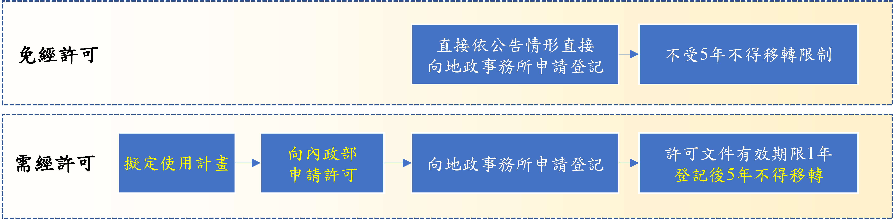
88. 氣候變遷調適¶
發布日期: 2023-06-27
為因應全球氣候變遷，制定氣候變遷調適策略，降低與管理溫室氣體排放，落實世代正義、環境正義及公正轉型，善盡共同保護地球環境之責任，並確保國家永續發展，我國於今(112)年2月制定「氣候變遷因應法」，有關氣候變遷調適之重要考點如下：
• (一) 氣候變遷調適之意義
指人類與自然系統為回應實際、預期氣候變遷風險或其影響之調整適應過程，透過建構氣候變遷調適能力並提升韌性，緩和因氣候變遷所造成之衝擊或損害，或利用其可能有利之情勢。(氣變§3)
• (二) 政府如何建構調適能力
為因應氣候變遷，政府應推動調適能力建構之事項如下(氣變§17)：
-
以科學為基礎，檢視現有資料、推估未來可能之氣候變遷，並評估氣候變遷風險，藉以強化風險治理及氣候變遷調適能力。
-
強化因應氣候變遷相關環境、災害、設施、能資源調適能力，提升氣候韌性。
-
確保氣候變遷調適之推動得以回應國家永續發展目標。
-
建立各級政府間氣候變遷調適治理及協商機制，提升區域調適量能，整合跨領域及跨層級工作。
-
因應氣候變遷調適需求，建構綠色金融機制及推動措施。
-
推動氣候變遷新興產業，輔導、鼓勵氣候變遷調適技術開發，研發、推動氣候變遷調適衍生產品及商機。
-
強化氣候變遷調適之教育、人才培育及公民意識提升，並推展相關活動。
-
強化脆弱群體因應氣候變遷衝擊之能力。
-
融入綜合性與以社區及原住民族為本之氣候變遷調適政策及措施。
10. 其他氣候變遷調適能力建構事項。¶
注：本文圖片存放於 ./images/ 目錄下
89. 土地法第43條及第68條所規定「登記」之內涵¶
發布日期: 2023-06-29
土地法第43條規定：「依本法所為之登記，有絶對效力。」又，土地法第68條第1項規定：「因登記錯誤遺漏或虛偽致受損害者，由該地政機關負損害賠償責任。但該地政機關證明其原因應歸責於受害人時，不在此限。」試分析此二則法條所規定「登記」之內涵有何異同？
【解答】
• (一) 相同點：
-
登記，指登記完畢。所稱登記完畢，指土地權利經登記機關依土地登記規則登記於登記簿，並校對完竣，加蓋登簿及校對人員名章後，為登記完畢。土地登記以電腦處理者，經依系統規範登錄、校對，並異動地籍主檔完竣後，為登記完畢。
-
登記，指經登記機關依法審查無誤後，登記於登記簿。物權登記與債權登記、皆包括在內。
-
登記，包括測量。測量與登記為一體之兩面。因此，登記除指登記簿外，亦包括地籍圖。
-
登記，不包括政府機關為警示或管控目的，囑託登記機關所為之註記登記。
• (二) 相異點：
- 土地法第43條所規定之「登記」，僅指權利（包括所有權及他項權利）登記，不包括標示登記。換言之，土地面積、土地形狀、編定種類等客觀事實狀態之登記不實，不受登記絶對效力之保護。
2. 土地法第68條第1項所規定之「登記」，包括標示登記與權利登記。換言之，土地面積、土地形狀、編定種類等客觀事實狀態之登記錯誤遺漏或虛偽，地政機關仍應負損害賠償責任。¶
注：本文圖片存放於 ./images/ 目錄下
90. 民法第167條及第531條｜代理權授予之要式性¶
發布日期: 2023-07-02
在日常生活中，人們委由他人以「本人」之名義行使權利乃相當常見之法律關係，此一法律關係即屬民法中所稱之「代理」行為，惟究竟代理行為屬於要式行為或非要式行為，此乃許多考生在準備考試時，容易忽略之法律概念。
條文依據
民法第167條
代理權係以法律行為授與者，其授與應向代理人或向代理人對之為代理行為之第三人，以意思表示為之
民法第531條
為委任事務之處理，須為法律行為，而該法律行為，依法應以文字為之者，其處理權之授與，亦應以文字為之。其授與代理權者，代理權之授與亦同
意義
依照民法第167條規定，代理權之授予僅需本人向代理人以意思表示為之即可，並無需以書面為之，故單憑民法第167條規定內容以觀，代理權之授予似非屬要式行為。
然而，民法第531條針對「須以文字為之之法律行為」，其代理權之授予亦須以文字為之，換言之，如果今天本人授予代理人行使權利之法律行為必須以文字為之，則依照民法第531條之規定，該代理權之授予就應該以文字為之，意即須以書面授予代理權，此時代理權之授予即屬要式行為。
實例說明
Jasper授予代理權給Josh，請Josh以Jasper本人之名義，將名下的不動產過戶給Hank。此時，由於不動產所有權之移轉登記，依照法律規定須以書面為之，故Jasper代理權之授予，必須以「書面」為之。
Josh 老師提醒
請同學在學習代理相關章節及條文時，除須閱讀民法第167～171條之外，第103～110條及委任相關規定也請一併參照理解，才能完整掌握相關概念喔！
．延伸閱讀
原文出處：Jasper 不動產
91. 民法第174條第1項｜無因管理人無過失責任¶
發布日期: 2023-07-02
無因管理人之行為，如違反本人明示或可得而知之意思，即屬不法無因管理，若因此造成本人受有損害，無論無因管理人是否有過失，皆須負損害賠償責任，原因在於既然本人已明示其意思，或是本人之意思係可得推知之情形，而無因管理人仍然違背本人之意思，無因管理人本身之行為即已生過失之疑義，此時若進一步造成本人受有損害，對本人之權利而言當屬更大之侵害，因此應由無因管理人承擔風險及責任，而不問無因管理人是否有過失。
條文依據
民法第174條第1項
管理人違反本人明示或可得推知之意思，而為事務之管理者，對於因其管理所生之損害，雖無過失，亦應負賠償之責
實例說明
Hank某日經過Erin家，發現Erin養的狗一直對著大馬路叫，Hank雖然知道Erin曾經說過她的狗常常會對著大馬路叫是因為對路人有好奇心，千萬不可以讓他從籠子跑出去，因為他很不受控，可能會被車撞死。但Hank心想應該是因為Erin連續加班太多天，都沒有遛狗，狗才會一直對著外面叫，Hank就將籠子打開讓狗一解受困於籠子之煩。沒想到，籠子一打開後，狗真的不受控，就往大馬路直衝，不幸被路上的車子撞傷。
在上述的案例中，Hank的行為明顯違反Erin曾經明白表示之意思，Hank卻仍然為之，已屬不法無因管理，更因此使Erin的狗受傷、須支付大筆醫療費用，此即導致Erin受有損害，對此Hank應依民法第174條第1項負無過失損害賠償責任。
．延伸閱讀
原文出處：Jasper 不動產
92. 民法§120｜期日、期間¶
發布日期: 2023-07-02
今天1/1號甲向乙借1萬元，約定20天後歸還，請問最晚哪天甲要還錢給乙呢?
期日、期間要點
在法律上處分的定義有三種：最廣義、廣義、狹義
一、第一天不計算(起算日)
因此由1/2號開始計算20天，因此最後一天為1/21號。
二、最後一天的判定(最後日)
A：若是以日為單位的話，則按照上述(一)的方法計算
B：若以星期、月、年為單位，則需要往前計算一天
1/1號甲乙約定1個月後還錢，從1/2號開始記算一個月為2/2號，需再往前一天，因此為後還錢的日期為2/1號。
三、最後一天遇到休息日，則順延一天
若是最後一日為10/10號，則需順延至10/11號。
Ding 老師提醒
民法中有許多關於期日、期間的規定，像是請求權要在2年內行使等，這時候該只要把握好起算日和最後日，就可以輕鬆解決了喔。
．延伸閱讀
原文出處：Jasper 不動產
93. 民法第106條｜自己代理及雙方代理之禁止¶
發布日期: 2023-07-02
民法第106條規定，原則上同一個代理人不得代理本人與自己進行法律行為，也不可以同時擔任法律行為雙方當事人的代理人，目的在於避免利益衝突、損及本人之權利；然而，如果事先已經經過當事人之同意，則屬例外，此時自己代理或雙方代理即屬合法。
條文依據
民法第106條
代理人非經本人之許諾，不得為本人與自己之法律行為，亦不得既為第三人之代理人，而為本人與第三人之法律行為。
意義
「不得為本人與自己之法律行為」即所謂自己代理之禁止
「不得既為第三人之代理人，而為本人與第三人之法律行為」即所謂雙方代理之禁止
實例說明
Jasper與Josh欲簽訂不動產買賣契約，然而Josh實在太忙了，為了加快簽約速度，Jaspe提議請Josh授予代理權給自己，由Jasper代理Josh簽訂雙方間之買賣契約，請問是否合法？又如果不動產買賣契約係Josh要與Erin簽訂，但由於二人外務實在太忙，Jasper遂提議由自己擔任雙方的代理人、為兩人簽約，請問是否合法有效？
在上述的案例中，「由Jasper代理Josh簽訂雙方間之買賣契約」即所謂「自己代理」行為，而「由Jasper同時擔任Josh和Erin之代理人，簽訂Josh及Erin間之不動產買賣契約」即屬「雙方代理」之行為，此二行為依照民法第106條，原則上均非適法，然而，如果Jasper事前已經經過本人（上述案例即指Josh）之許諾，則屬例外允許、合法之情況。
．延伸閱讀
原文出處：Jasper 不動產
94. 民法 §756｜處分行為定義¶
發布日期: 2023-07-02
民法中對於處分行為有三種定義，今天就和同學們分享該如何判斷法條中的處分，究竟屬於哪一種吧。
處分行為定義之要點
在法律上處分的定義有三種：最廣義、廣義、狹義
一、最廣義的處分(756, 1187)：包含事實上的處分+法律上的處分。
事實上的處分：對物品進行變形、改造、毀損。
法律上的處分：可再分為負擔行為(債權行為)+最狹義的處分行為。
二、廣義的處分(68, 84)：不含事實上的處分，包含負擔行為和最狹義的處分行為。
負擔行為：對雙方產生法律上履行義務的負擔，例如買賣契約。
三、最狹義的處分行為(118)：物權行為+準物權行為。
物權行為：對物權發生變更、取得、喪失的效果，例如取得所有權、設定抵押權。
準物權行為：針對物權以外的無體財產權或債權的行為，例如債權讓與。
實例說明
Q：限制行為人能不能買賣房子? 能不能去銀行取錢呢?
A：民法§84的處分行為屬於廣義的處分行為，因此在未經法代人允許下，限制行為人自然不能處分財產；而取錢則不屬於法律行為，所以取錢是可以的哦。
Ding 老師提醒
民法中的處分行為是非常重要的觀念，同學們一定要搞清楚其中定義的差異哦。
．延伸閱讀
原文出處：Jasper 不動產
95. 民法§176第1項及§177第1項｜不適法無因管理人請求權¶
發布日期: 2023-07-03
不適法無因管理人之行為，雖然違反本人明示或可得而知之意思，但本人仍然可以選擇是否要享有無因管理之利益。而如果本人選擇享有無因管理行為之利益，對於無因管理人因為無因管理行為所支付之必要費用、負擔之債務或因此受有損害時等情形（請參見下方條文依據內容），本人自應該補償、協助償還或賠償之，始能衡平雙方間之權利義務關係。
條文依據
民法第176條第1項
管理事務，利於本人，並不違反本人明示或可得推知之意思者，管理人為本人支出必要或有益之費用，或負擔債務，或受損害時，得請求本人償還其費用及自支出時起之利息，或清償其所負擔之債務，或賠償其損害
民法第177條第1項
管理事務不合於前條之規定時，本人仍得享有因管理所得之利益，而本人所負前條第一項對於管理人之義務，以其所得之利益為限
實例說明
Jasper是個有錢人家，名下有諸多不動產，其中一棟A屋的屋頂因為年久失修加上颱風過境而損壞了，Hank眼見這樣的房子已經住不了人，所以決定發揮自己的長才，找了自己的建築團隊，幫Jasper把A屋屋頂修復好，但沒想到Jasper早就知道A屋屋頂毀損，只是因為家裡不動產太多，也已經在大門口貼了一張紙公告周知，不缺這一棟，所以本來就不打算維修。
在上述的案例中，由於Hank的無因管理行為違反了Jasper明示的意思表示，因此原則上，Hank不能請求Jasper給付他修復屋頂所支出之費用。但如果Jasper決定要享有Hank修復A屋屋頂之利益，此時Hank就可以依照民法第177條第1項、第176條第1項規定請求該筆費用。
．延伸閱讀
原文出處：Jasper 不動產
96. 預售屋及新建成屋買賣契約得讓與或轉售情形¶
發布日期: 2023-07-04
根據平均地權條例第47-4條，第一項規定：「預售屋或新建成屋買賣契約之買受人，於簽訂買賣契約後，不得讓與或轉售買賣契約與第三人，並不得自行或委託刊登讓與或轉售廣告。但配偶、直系血親或二親等內旁系血親間之讓與或轉售；或其他中央主管機關公告得讓與或轉售之情形並經直轄市、縣（市）主管機關核准者，不在此限。」第二項規定：「買受人依前項但書後段規定得讓與或轉售之戶（棟）數，全國每二年以一戶（棟）為限；其申請核准方式、應檢附文件、審核程序及其他相關事項之辦法，由中央主管機關定之。」亦即除特定情形外，預售屋（含尚未辦建物所有權第一次登記之新成屋）禁止換約，否則依平均地權條例第81-3條，由直轄市、縣（市）主管機關處新臺幣50萬元以上300萬元以下罰鍰；其刊登廣告者，並應令其限期改正或為必要處置；屆期未改正或處置者，按次處罰；其有不動產交易者，按交易戶（棟）處罰。
爰此，訂定下列兩項子法，茲整理相關重點如下：
「預售屋及新建成屋買賣契約得讓與或轉售情形」 「預售屋及新建成屋買賣契約讓與或轉售審核辦法」
• 一、禁止讓與、轉售買賣契約之例外情形
以下情形得讓與或轉售之戶（棟）數，全國每二年以一戶（棟）為限，自直轄市或縣（市）主管機關核准日之次日起算：
• (一) 配偶、直系血親或二親等內旁系血親間（兄弟姊妹）之讓與或轉售 讓與或轉售，得由買受人持憑身分證明文件逕洽出賣人辦理，無須申請核准。
• (二) 中央主管機關公告得讓與或轉售之情形並經直轄市、縣（市）主管機關核准
預售屋或新建成屋買賣契約之買受人符合中央主管機關公告得讓與或轉售之情形者，於買賣契約讓與或轉售前，應以書面向該預售屋或新建成屋基地坐落所在地之直轄市或縣（市）主管機關申請核准。其得讓與或轉售情形目前有6種：
-
買受人因非自願離職且逾6個月未就業 買受人於簽約繳款後，因就業保險法第11條第3項規定之非自願離職情事，或勞工職業災害保險及保護法第85條第1項第2款、第3款或第4款規定而終止其與雇主勞動契約，逾六個月以上迄未就業，且簽約前已受僱該雇主達一年以上者。因非自願離職原因致使其收入減少，可能致無力繳款。
-
本人或其家庭成員重大傷病或特定病症經診斷認定需6個月以上全日照顧 買受人於簽約繳款後，本人或其家庭成員（買受人之1.配偶、2.直系血親、3.配偶之直系親屬，或4.買受人父母均已死亡，其戶籍內需要照顧之未成年或身心障礙已成年且無配偶之兄弟姊妹）罹患重大疾病或因意外事故遭受傷害，符合全民健康保險法第48條第1項第1款所稱之重大傷病 ，或社會救助法第5條之3第1項第4款之特定病症，經衛生福利部公告之醫療機構專科醫師診斷，認定有六個月以上全日照顧需要者。因醫療及長期照顧等支出，可能致無力繳款。
-
買受人或其家庭成員之房屋因災害毀損而須另行租屋 買受人於簽約繳款後，因災害毀損原設籍居住之房屋，致不堪居住使用，須另行租屋，且被毀損房屋為買受人或其家庭成員所有者。因房屋租金等支出，可能致無力繳款。
-
買受人或其家庭成員因重大意外事故致他人死亡或重大傷害經認定須6個月以上全日照顧 買受人於簽約繳款後，本人或其家庭成員因重大意外事故，致第三人 死亡或遭受重大傷害，符合社會救助法第5條之3第1項第4款之特定病症，經衛生福利部公告之醫療機構專科醫師診斷，認定有六個月以上全日照顧需要者。因賠償金等支出，可能致無力繳款。
-
原買受人死亡其繼承人無意保留 買受人於簽約繳款後死亡，其繼承人讓與或轉售該預售屋或新建成屋買賣契約，或經協議變價分配，或持憑法院確定判決或依法與確定判決同一效力之證明文件辦理變價分配者。原買受人死亡，如繼承人無力繳款或不願承受貸款而擬讓與或轉售，應允許其辦理。
-
共同買受人間之讓與或轉售 買受人為自然人，其於簽約繳款後，將契約權利讓與或轉售與該契約所列其他共同買受之自然人或法人。係因減少將來不動產共有人數，有利於契約關係單純化。
• 二、非屬讓與、轉售買賣契約之情形
• (一) 買受人於簽約後死亡，其繼承人因繼承辦理契約名義人變更
• (二) 法人合併或改制後，由合併或改制後存續或新設立之法人，依法承受或概括承受
• (三) 法人依法解散、撤銷或廢止登記清算後，其賸餘財產之歸屬
這些情形非屬契約讓與或轉售行為，性質與買受人契約讓與或轉售行為有別，得持憑相關證明文件逕洽出賣人辦理，無須申請核准。¶
注：本文圖片存放於 ./images/ 目錄下
97. 土地回復原狀之「核准回復說」與「自動回復說」¶
發布日期: 2023-07-06
• (一) 核准回復說：土地法第12條第2項規定：「前項土地，回復原狀時，經原所有權人證明為其原有者，仍回復其所有權。」準此，土地流失後，私有土地所有權消滅，即為國有土地。日後土地回復原狀，土地所有權人或其繼承人應提出申請，經政府核准，始回復其所有權。復權請求權因十五年間不行使而消滅。
• (二) 自動回復說：土地流失或浮覆時，私有土地所有權依法律規定（即依土地法第12條規定）而喪失或回復。依民法第759條規定，於事實發生、不待登記即發生物權變動之效果。準此，土地回復原狀時，土地所有權人或其繼承人不待申請核准，即取得土地所有權。是以，土地所有權人或其繼承人得訴請法院主張民法第767條除去妨害請求權，塗銷國有登記，回復登記為原所有權人或其繼承人。依司法院釋字第164號解釋，已登記不動產所有人之除去妨害請求權，無消滅時效之適用。
綜上，司法實務採自動回復說。¶
注：本文圖片存放於 ./images/ 目錄下
98. 房地合一稅課徵對象：個人、營利事業¶
發布日期: 2023-07-11
適用應徵房地合一稅之稅捐主體，依據所得稅法第4條之4第1項規定為個人及營利事業。所謂「個人」，依據同法第7條第1項第2句規定，指「自然人」；所謂「營利事業」，依據同法第11條第2項規定，指「公營、私營或公私合營，以營利為目的，具備營業牌號或場所之獨資、合夥、公司及其他組織方式之工、商、農、林、漁、牧、礦冶等營利事業」。1
其中，房地合一所得稅之稅率尚會依照境內與境外居住區分不同稅率結構，其分辨方式如下：
• (一) 個人
-
境內居住之個人 (1)指在中華民國境內有住所，並經常居住在中華民國境內，或者雖在境內並無住所，但於一課稅年度內在境內居留合計滿183天要件者。 (2)惟稅捐稽徵實務上另依據財政部公布之「中華民國境內居住之個人認定原則」的標準，以「個人於一課稅年度內在中華民國境內設有戶籍，且有下列情形之一」，包括：
-
於一課稅年度內在中華民國境內居住合計滿31天。
-
於一課稅年度內在中華民國境內居住合計在1天以上未滿31天，其生活及經濟重心在中華民國境內。 所稱生活及經濟重心在中華民國境內，應衡酌個人之家庭與社會關係、政治文化及其他活動參與情形、職業、營業所在地、管理財產所在地等因素，參考下列原則綜合認定： (A)享有全民健康保險、勞工保險、國民年金保險或農民健康保險等社會福利。 (B)配偶或未成年子女居住在中華民國境內。 (C)在中華民國境內經營事業、執行業務、管理財產、受僱提供勞務或擔任董事、監察人或經理人。 (D)其他生活情況及經濟利益足資認定生活及經濟重心在中華民國境內
-
非境內居住之個人：上述以外者。
• (二) 營利事業
-
總機構在中華民國境內 係以營利事業之設立準據法，也就是倘若依照我國法律而設立之事業，包括依公司法而設立之各種類型的公司、依合作社法而設立之各種型態的合作社，或依照有限合夥法設立之「有限合夥」商業組織，即屬「總機構在中華民國境內」之營利事業。
-
總機構在中華民國境外：上述以外者。
1. 柯格鐘，2021，房地合一稅之規避防杜條款─談所得稅法第4條之4的修正，月旦財稅實務釋評，第21期。¶
注：本文圖片存放於 ./images/ 目錄下
99. 概念比一比22｜ 要式契約、不要式契約¶
發布日期: 2023-07-11
讀民法時，常會碰到某某契約為要式契約、某某契約為不要式契約，究竟什麼是要式和不要式呢?
要式契約、不要式契約之定義
．要式契約
需經過特定的方式、程序，契約才會成立或生效。
．不要式契約
不需經過特定的方式、程序，契約也能成立或生效。
要式契約、不要式契約之要點
(一) 契約以不要式為原則，要式為例外。
(二) 常見的要式行為：書面、登記。
實例說明
．不要式契約
§345買賣契約、§406贈與契約：平常買(送)東西時不需要另外簽名或是寫合約。
．要式契約
§982 結婚契約：結婚應以書面為之，有二人以上證人之簽名，並應由雙方當事人向戶政機關為結婚之登記。
§758 物權取得、設定、喪失及變更者，皆需以書面登記，否則不生效力。
Ding 老師提醒
雖然買賣契約為不要式契約，但金額比較龐大時，雙方還是會寫合約，原因是為了避免糾紛及後續舉證困難。
．延伸閱讀
原文出處：Jasper 不動產
100. 不動產估價技術規則 §28｜收益法之簡介¶
發布日期: 2023-07-11
今天繼續帶同學了解估價的第二種方法：收益法，其觀念會比之前比較法還艱深，同學們加油。
收益法之定義
根據期間和是否要處分期末價值，可以分成兩種
(一)、直接資本化法：
時間為平均一年、不處分期末價值
指勘估標的未來平均一年期間之客觀淨收益，應用價格日期當時適當之收益資本化率推算勘估標的價格之方法。
(二)、折現現金流量分析法：
時間有期限，最後要處末期末價值
指勘估標的未來折現現金流量分析期間之各期淨收益及期末價值，以適當折現率折現後加總推算勘估標的價格之方法。
收益法之程序
．一、蒐集總收入、總費用及收益資本化率或折現率等資料。
．二、推算有效總收入。
．三、推算總費用。
．四、計算淨收益。
．五、決定收益資本化率或折現率。
．六、計算收益價格。
．口訣：蒐、推、推、計、決、計
Ding 老師提醒
收益法的目的是將「未來」的收益折現成「現在」的價值，也就是估算未來的價值，而比較法則是估算現在的價值，因此同學在閱讀時，要特別注意兩者的法條差異哦。
．延伸閱讀
原文出處：Jasper 不動產
101. 概念比一比21｜ 要物契約、不要物契約¶
發布日期: 2023-07-11
有些契約的成立要件是規定須交付標的物，今天就來代同學們了解何謂要物契約、不要物契約吧。
要物契約、不要物契約之定義
．要物契約
又稱踐成契約，除了雙方合意之外，而需要交付標的物，契約才能成立。
．不要物契約
又稱諾成契約，只要雙方合意，契約即成立。
要物契約、不要物契約之要點
(一) 契約以不要物為原則，要物為例外。
(二) 要物契約的成立時間點為交付標的物的當下，而非雙方合意的當下哦。
實例說明
．不要物契約
§345買賣契約、§528委任契約：雙方只要口頭上達成協議即可。
．要物契約
§464 使用借貸、§474 消費借貸 ：需要交付標的物後，契約才會成立哦。
Ding 老師提醒
就算今天甲說好要借A車給乙，但在交付A車之前，A車的借貸契約都是還沒成立的哦。
．延伸閱讀
原文出處：Jasper 不動產
102. 不動產估價技術規則 §18｜比較法之簡介¶
發布日期: 2023-07-11
今天甲想賣掉一間40坪3房2廳1衛的房子，請問他該如何估算其價值呢? 估價時常用的三種方法為：比較法、收益法、成本法，現在就來簡單了解一下何謂比較法吧。
比較法之定義
以比較標的價格為基礎，經比較、分析及調整等，以推算勘估標的價格之方法。
比較法之程序
．一、蒐集並查證比較標的相關資料。
．二、選擇與勘估標的條件相同或相似之比較標的。
．三、對比較標的價格進行情況調整及價格日期調整。
．四、比較、分析勘估標的及比較標的間之區域因素及個別因素之差異，並求取其調整率或調整額。
．五、計算勘估標的之試算價格。
．六、決定勘估標的之比較價格。
口訣：蒐、選、對、比、計、決
比較法之要點
．一、 對蒐集之比較標的應查證相關事項 (§22)
．二、 比較標的有特殊情況時，應適時調整或不予採用 (§23)
．三、 調整時以百分比率為原則 (§24)
．四、 調整過程中，差距過大者應排除 (§25, §26)
．五、 應採用三件以上之比較標的 (§27)
實例說明
根據上述比較法之規定，甲可以上實價登錄的網站，去參考和他房子條件相似的物件價格，並依據個別條件的差異，來推算其房子的價格哦。
．延伸閱讀
原文出處：Jasper 不動產
103. 財產權¶
發布日期: 2023-07-13
• (一) 財產權之意義：
凡具有財產價值之權利，稱為財產權。所有權是財產權之重心。所有權人對標的物可以行使規劃、使用、收益、處分及排他等權能。
財產權之功能：
-
財產權可以減少使用土地之衝突：財產屬誰界定清楚，就可以減少土地之紛爭。
-
財產權可以有效分派土地：擁有財產權之人將其土地出租或出售時，將會選擇出價最高之人，而出價最高之人代表最有能力使用該土地之人。
-
財產權可以誘使土地投資改良：在財產權保障下，土地所有權人會對土地加以投資改良，以提高土地生產力。
-
財產權可以達成永續利用土地：在財產權保障下，土地所有權人會規劃現在與未來土地利用之最佳組合，保育土地，達成永續利用。
-
財產權可以避免共用地悲劇與反共用地悲劇：財產權界定清楚，可以避免土地之過度利用（即共用地悲劇）。財產權完整，可以避免土地之低度利用（即反共用悲劇）。
• (二) 財產權保障之目的：
憲法第15條關於人民財產權應予保障之規定，旨在確保個人依財產之存續狀態行使其自由使用、收益及處分之權能，並免於遭受公權力或第三人之侵害，俾能實現個人自由、發展人格及維護尊嚴（司法院釋字第400號解釋）。
• (三) 財產權保障之型態：
財產權保障型態分為下列三種：
-
財產法則：財產權之移轉必須在所有權人同意下為之。非經所有權人同意之價格，他人不得取得其財產權。
-
義務法則：財產權並非神聖不可侵犯，在客觀合理價格下，政府可以取得其財產權。
-
禁制法則：亦稱不能奪取法則；縱經所有權人同意，財產權亦禁止移轉給他人。
總之，政府對財產權之干預程度，以禁制法則最大，義務法則次之，財產法則最小。若外部性不涉及第三人，或涉及第三人但人數不多時，宜採用財產法則。若外部性涉及第三人且人數很多時，宜採用義務法則。對不可復原之環境敏感地區、古蹟保存地區等，宜採用禁制法則。
• (四) 結論：
財產權界定清楚及財產權完整，始能促進土地利用效率。¶
注：本文圖片存放於 ./images/ 目錄下
104. 視為以不定期限繼續契約之意涵¶
發布日期: 2023-07-18
甲因經營餐廳而於101年底向乙承租A不動產，租約自102年1月1日至102年12月31日止，一年一租，惟租期屆滿後，甲繼續使用，且直接交付2年租金，乙並未表示反對，惟於104年底乙卻寄存證信函通知應另訂新約，否則將終止租約，收回A不動產，請問是否有理？
依據最高法院109年度台上字第109號判決，是無理由的，因為其已成為不定期限租約，並須依原租用條件繼續，且無土地法規定情形，即不得任意終止租約收回。
其判決要旨如下：
-
租賃期限屆滿後，承租人仍為租賃物之使用收益，而出租人不即表示反對之意思者，視為以不定期限繼續契約。
-
所謂以不定期限繼續租賃，乃租賃雙方依原來租賃條件不定期限繼續租賃。故出租人於訂約之際，如未訂明期滿後絕不續租或續租應另訂契約或其他相類之情形者，於不即表示反對之意思條件成就時，租賃契約當然更新為不定期限租賃關係，無待於契約當事人重為要約或承諾。
3. 此外，租賃契約依上開規定更新為不定期限租賃關係後，未經合法終止契約，租賃關係自仍存續。而不定期限之房屋租賃，非有土地法第100條所定情形之一者，出租人不得終止租賃契約，收回房屋。¶
注：本文圖片存放於 ./images/ 目錄下
105. 地籍圖重測時，土地所有權人「指界」之法律性質¶
發布日期: 2023-07-20
「指界」是土地所有權人之權利，也是義務。茲分析如下：
• (一) 土地所有權人之權利：「指界」屬於土地所有權人之權利。權利可以行使，亦可以不行使。因此，土地所有權人可以行使指界，亦可以不行使指界。
-
土地所有權人行使指界：地政機關依土地所有權人之指界結果，進行施測。但因指界而與鄰地所有權人發生界址爭議時，應由該管直轄市或縣（市）地政機關予以調處，不服調處者，應於接到調處通知後十五日內，向司法機關訴請處理，逾期不起訴者，依原調處結果辦理之（土§46-2II、§59II）。
-
土地所有權人不行使指界： 地政機關得依下列順序逕行施測： (1)鄰近界址。 (2)現使用人之指界。 (3)參照舊地籍圖。 (4)地方習慣。（土§46-2I）
• (二) 土地所有權人之義務：「指界」屬於土地所有權人之義務。因此，土地所有權人未行使指界，將受到不利之影響。土地法第46條之3第1項及第2項規定：「重新實施地籍測量之結果，應予公告，其期間為三十日。土地所有權人認為前項測量結果有錯誤，除未依前條之規定設立界標或到場指界者外，得於公告期間內，向該管地政機關繳納複丈費，聲請複丈。經複丈者，不得再聲請複丈。」準此，土地所有權人未行使指界，不得申請異議複丈。¶
注：本文圖片存放於 ./images/ 目錄下
106. 測量錯誤之損害賠償：參最高法院106年度台上字第2938號民事判決¶
發布日期: 2023-07-25
參考案例：
某A地號土地於86年由國土測繪中心辦理地籍圖重測時，因測量人員未依地籍調查表所載，以水溝為界址施測，而是以舊圖進行套繪作為重測成果，致地籍線登載與該界址不符。而後甲購買該地後欲興建補習班大樓，向B地政事務所先申請鑑界及合併分割，該測量人員亦未調取地籍調查表發見該錯誤。接著甲即於99年間取得建造執照後，並發包施工，惟於100年間進行地質鑽探放樣時，發現A地號土地與毗鄰土地界址有疑義，即請B地政事務所查明，後經查重新依系爭水溝為界址，逕辦理更正，致登記面積由 556平方公尺更正為539平方公尺，共減少 17平方公尺。試問甲得否依土地法第68條登記錯誤請求賠償？
茲整理判決重點如下：
-
按因登記錯誤遺漏或虛偽致受損害者，除能證明其原因應歸責於受害人者外，由該地政機關負損害賠償責任，土地法第 68條第1項定有明文。該規定旨在貫徹土地登記之公信力，以保護土地權利人並兼顧交易安全。
-
所稱「登記錯誤」，不應以土地登記規則第13條所指「登記事項與登記原因證明文件所載之內容不符者」為限，茍地政機關於地籍測量時有錯誤，致依據該測量成果而辦理之土地登記亦產生錯誤，縱嗣後之登記階段完全依測量結果辦理而無錯誤，但作為前提之測量結果，及最後登記之結果均有錯誤，對於信賴土地登記而受損害之人民，仍應認係登記錯誤。
-
惟地政機關之損害賠償責任，依同條第2 項規定「不得超過受損害時之價值」，係按受損害時土地之市價為限，俾免地政機關因此承擔過重之風險。
-
又上開規定，無非係就職司土地登記事務之公務員因故意或過失不法侵害人民權利，而由該公務員所屬地政機關負損害賠償責任之規定，核係國家賠償法之特別規定，依該法第6條規定，自應優先適用。
-
因此，查國土測繪中心所屬公務員於86年間，就原A地號土地執行重測職務，疏未核對地籍調查表即為界址施測，汐止地政所所屬公務員於98年間，就A地號土地執行鑑界等複丈職務時，發現上開重測界址有誤，卻未依規定查明施測，均有過失，致A地號土地登載之地籍線及面積發生錯誤，使更正後之登記面積減少，而不法侵害被上訴人之權利。本件依原地籍線及登記面積規劃在系爭土地上建造補習班大樓，並委請建築師設計及申請取得建照，嗣因原地籍線及登記面積有誤，而自行撤銷建照及不繼續興建，因此賠償C營造公司自開工日至100年7月間無法施工之費用131萬8000元，所支出之建築師設計費63萬元、建築線申請費用及鑽探費用3萬1000元、建築執照證照費1萬0247元、鑽探費6萬4050元、新光銀行貸款費用11萬4313元，金額合計216萬7610元（皆有證據），均堪認係甲因土地面積登記錯誤所受之損害。得依土地法第68條第1項請求該二機關賠償。
-
然而，惟按損害之發生或擴大，被害人與有過失者，法院得減輕賠償金額或免除之，民法第217條第1項定有明文。查，系爭土地固發生面積登記錯誤之情事，然該減少之面積僅17平方公尺（約5坪），但土地面積減少，並不甚妨礙被上訴人原訂之興建計畫，僅需就面積部分申請變更設計即可。雖變更設計確實會增加被上訴人之支出（如變更設計費、申請規費、停工期間對承包商之賠償等），工期之延長亦會增加其貸款之資金壓力，然相較於撤銷全案建築執照，完全停工，先前所為整地、鑽探、鋼材等施工費用，全化為虛無而言，仍為損害最小之選擇，甲捨此不為，在防免損害金額擴大部分，難謂已盡善良管理人之注意義務。茲審酌被上訴人選擇變更設計或撤銷建築執照，二方案可能增加之費用、可能減少之損害，及兩造就損害發生之原因、損害之範圍等過失輕重為綜合考量，認甲自負50％之過失責任，應為公允。是依此計算，被上訴人得請求賠償之金額為108萬3805元。
因此，此案可瞭解以下幾個重點：
-
測量錯誤亦屬登記錯誤致受損害之賠償範圍。
-
土地法第68條為國家賠償法之特別規定而優先適用。
3. 損害賠償應注意民法第217條第1項的損害賠償責任過失相抵。¶
注：本文圖片存放於 ./images/ 目錄下
107. 屠能（Thünen）模與辛克萊（Sinclair）模式¶
發布日期: 2023-07-27
• (一) 屠能模式：如圖(一)所示，0代表都市， [圖片1]代表經濟作物之競租線， [圖片2]代表穀類作物之競租線， [圖片3]代表根莖作物之競租線。經過競標地租之結果，0～t0種植經濟作物，t0～t1種植穀類作物，t1～t2種植根莖作物。屠能理論認為，農地利用離都市愈近，愈集約利用；離都市愈遠，愈粗放利用。
[圖片4]
圖(一) 屠能模式
• (二) 辛克萊模式：都市規模不斷擴張，都市邊緣之農地，農民期待轉用及隨時準備拋售土地之心理下，多不願投入大量勞力資本進行農業經營，因此土地利用趨於粗放。亦即，距離都市愈近土地，愈有可能轉用，因而農地利用愈粗放。是以，離都市愈近，愈粗放利用；離都市愈遠，愈集約利用。此種反常現象，直到都市發展潛力終止點，農地在短期之內不可能轉變為都市土地，才又向外回到屠能模式。如圖(二)所示，[圖片5] 及〔圖片下載失敗〕 代表經濟作物之競租線，[圖片7] 及〔圖片下載失敗〕 代表穀類作物之競租線，[圖片9] 及〔圖片下載失敗〕 代表根莖作物之競租線。0為都市，0～[圖片11] 為農業土地。[圖片12] 為都市發展潛力之終止點。因此，0～[圖片13] 為受都市發展影響之都市周邊農地，[圖片14] ～[圖片15] 為未受都市發展影響之一般農地。
- 受都市發展影響之都市周邊農地：經過競標地租之結果，0～[圖片16] 種植根莖作物，[圖片17] ～[圖片18] 種植穀類作物，[圖片19] ～[圖片20] 種植經濟作物。因此，離都市愈近，愈粗放利用；離都市愈遠，愈集約利用。此即辛克萊模式。
[圖片21]
圖(二) 辛克萊模式
- 未受都市發展影響之一般農地：經過競標地租之結果，[圖片22] ～[圖片23] 種植經濟作物，[圖片24] ～[圖片25] 種植穀類作物，[圖片26] ～[圖片27] 種植根莖作物。因此，離都市愈近，愈集約利用；離都市愈遠，愈粗放利用。此即屠能模式。
• (三) 結論：
-
屠能模式係描述一般農地在無投機因素下之正常農地使用配置。辛克萊模式係描述都市周邊農地在有投機因素下之反常農地使用配置。
-
屠能模式在說明離都市愈近，愈集約利用；離都市愈遠，愈粗放利用。辛克萊模式在說明離都市愈近，愈粗放利用；離都市愈遠，愈集約利用。
文章圖片¶
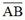

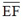
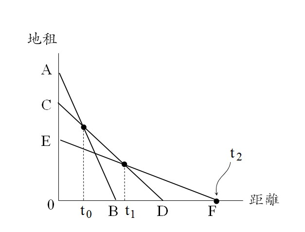
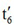
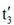
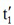


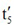
108. 訴訟外紛爭解決機制（ADR）¶
發布日期: 2023-08-01
在地政相關法規如：土地登記規則第57條第3項（登記申請被駁回）、地籍測量實施規則第201-3條（地籍圖重測更正之異議）、第221條（再鑑界仍有異議）等，都有提到所謂「訴訟外紛爭解決機制」，其概念為何呢？今日專欄為各位簡要整理與說明。
• 一、意義
訴訟外紛爭解決機制（Alternative Dispute Resolution, 簡稱ADR）是對於民眾私權爭執之處理，除法院訴訟以外，如「調處」、「調解」、「仲裁」等解決糾紛之方式。
• 二、分類
• (一) 調處：依土地法，直轄市或縣（市）地政機關設不動產糾紛調處委員，聘請地政、營建、法律及地方公正人士為調處委員，以處理本法不動產之糾紛。
• (二) 調解：由公正第三方之調解委員進行糾紛協調，使雙方當事人相互讓步，尋求當事人都可接受的解決方案，可分為法院的調解，以及非法院的調解（依鄉鎮市調解條例由鄉鎮市調解委員會進行）。
• (三) 仲裁：基於私法自治原則，依仲裁法規定，由中立的第三方為仲裁人，對紛爭進行裁決並拘束雙方當事人。
• 三、比較
| 面向 | 法院訴訟 | ADR |
|---|---|---|
| 調處 | 鄉鎮市調解 | 仲裁 |
| 經濟性 | 最貴 | 第三 |
| 包含裁判費、律師費、鑑定費 | 依糾紛類型收取不同調處費用， 從免收～1萬5千元(直轄市縣（市）不動產糾紛調處委 員會設置及調處辦法21) |
調解，除勘驗費應由當事人核實開支外， 不得徵收任何費用， 或以任何名義收受報酬(鄉調23) |
| 便利性 | 限管轄法院辦理 | 可就近辦理 |
| 隱私性 | 審判程序及裁判書通常多為公開 | 就協商過程與結果均可選擇不公開 |
| 氣氛/環境 | 對立衝突 法官較為威嚴 | 較為和諧 例如：調解委員應本和平、懇切之態度， 對當事人兩造為適當之勸導， 並徵詢列席協同調解人之意見，就調解事件， 酌擬公正合理辦法，力謀雙方之協和(鄉調22) |
| 主持/審理 | 法官 | 公正專業人士（如教授、專家） |
| 時間 | 可能須經過一、二、三審訴訟程序 | 調處應自接受申請之日起三十日內辦理之， 必要時得視實際需要情形予以延長(直轄市縣（市）不動 產糾紛調處委員會設置及調處辦法17) |
| 效力 | 法院確定判決具有強制執行效力 | 不服調處者，應於接到調處通知後十五日內， 向司法機關訴請處理，逾期不起訴者， 依原調處結果辦理之(土法59) |
注：本文圖片存放於 ./images/ 目錄下
109. 用腳投票¶
發布日期: 2023-08-03
提伯特（Tiebout）提出「用腳投票（voting with feet）」理論。亦即，居民選擇他的居住地時，會去選擇該地區所提供公共設施與所課徵財產稅（指地價稅及房屋稅）之最佳組合的社區。
財產稅屬於地方稅，具有「取之於地方，用之於地方」之性質。因此，該地區財產稅愈重，公共建設愈多，不動產價格增漲愈大，財產稅收入愈豐；再以此稅收，投入公共建設，形成善的循環。總之，該地區所提供公共設施愈多，亦即具備完善公共設施，居住環境較佳，其財產稅負擔亦愈重。相反地，該地區所提供公共設施愈少，亦即公共設施較不完備，居住環境較差，其財產稅負擔亦愈輕。
一般而言，富有的人會選擇居住環境較佳的社區，其所負擔的財產稅亦較重。較窮的人會選擇居住環境較差的社區，其所負擔的財產稅亦較輕。¶
注：本文圖片存放於 ./images/ 目錄下
110. 碳權交易之概念¶
發布日期: 2023-08-08
碳權即二氧化碳排放之權利，通常以相當於一公噸CO₂的排放量為計算單位。
-
因「總量管制&排放交易」所產生的碳權 按照政府所訂定二氧化碳排放總量管制下的排放額度，低於該額度者，可將實際排放量與排放額度的差額轉換為碳權，由超過該額度者向其購買碳權，以抵換其超額排放量。
-
因「減量計畫」所產生的碳權 針對氣候變遷因應法規範對象或因應國際供應鏈要求或自主加入碳中和倡議之產業，藉由投資聯合國/獨立機構認可的減量計畫，經執行減量計畫（如植樹、再生能源等）並查證後，核發減量額度，該額度亦為碳權。
碳權交易即是將碳權商品化並透過市場機制進行交易，讓政府或民間單位可以買賣碳權，作為碳抵換。換言之，產業可透過取得碳權，以符合我國政府的碳管制規範或因應國際供應鏈與倡議的碳中和要求。最終，以將大氣中的溫室氣體含量穩定在一個適當的水準，以保證生態系統的平滑適應、食物的安全生產和經濟的可持續發展之目標。
其中，碳權交易可分為以下兩種市場：
- 強制性市場 要求排放量較高的對象針對超額部分購買碳權以進行抵換，目的即是希望透過以量制價方式，使其為降低成本而努力並確實減少自身二氧化碳排放量。
2. 自願性市場 因排碳量超過配額，則需要在交易市場上購買碳權，如果有多餘的配額，也可以在交易市場上出售。自願性市場即讓沒有被管制者也可以透過減碳專案來獲得碳權，鼓勵自願者執行碳減量。因此，企業可以透過各種減碳的專案，向國內或國外的機構申請認證，就可以獲得碳權，這些經過認證的碳權可以在市場上進行交易。換言之，企業能做到減碳，有可能會額外獲得來自碳權交易的營收。此屬於正向的誘因，以鼓勵達到減碳之目的。¶
注：本文圖片存放於 ./images/ 目錄下
111. 地租國有與地利共享¶
發布日期: 2023-08-10
• (一) 地租國有之意涵：
土地私有，地租國有。亦即，私人可以擁有土地所有權，但由私人土地所產生之地租，應歸國家所有。因此，國家以課稅手段（如地價稅、土地增值稅等），將地租收歸國有。此即「稅去地主」之概念。
土地會產生二種地租，其一為天然地租，係因土地之天然力（如地力、載力、土地位置固定、土地數量不能增加等）所造成。其二為社會地租，係因土地之社會力（如人口增加、經濟繁榮、社會進步、公共建設等）所造成。不論天然地租或社會地租，均屬地主之不勞而獲，故應收歸國有，歸全體人民共享，以實現「地租國有」之目標。
總之，所稱地租國有之「地租」，指天然地租與社會地租。
• (二) 地利共享之意涵：
土地私有，地利共享。亦即，私人可以擁有土地所有權，但由私人土地所產生之地利，應歸國家所有。因此，國家以課稅手段（如地價稅、土地增值稅等），將地利收歸國有。此即「稅去地主」之概念。
土地會產生二種地利，其一為天然利益，係因土地之天然力（如地力、載力、土地位置固定、土地數量不能增加等）所造成。其二為社會利益，係因土地之社會力（如人口增加、經濟繁榮、社會進步、公共建設等）所造成。不論天然利益或社會利益，均屬地主之不勞而獲，故應收歸國有，歸全體人民共享，以實現「地利共享」之目標。
總之，所稱地利共享之「地利」，指天然利益與社會利益。
• (三) 兩者比較：
天然地租即天然利益，社會地租即社會利益。因此，地租國有即地利共享，二者意涵相同。¶
注：本文圖片存放於 ./images/ 目錄下
112. 民法§ 1031 ｜夫妻財產制-約定財產制¶
發布日期: 2023-08-11
今天繼續和同學們介紹另一種夫妻財產制─約定財產制，約定財產制又可以分成共同財產制以及分別財產制，同學們千萬不要搞混了哦。
夫妻財產制-約定財產制要點
一、共同財產制
(一) 特有財產vs共同財產
除了特有財產(§1031-1)之外，通通合併為共同財產
(二) 財產所有權、管理權、使用收益權、處分權
特有財產：各自處分
共同財產：共同處分
(三)債務清償責任
共同債務：由共同財產清償
特有債務：他方代為清償後可要求本人償還
(四) 所得共同財產制 §1041
夫妻約定只將勞力相關所得列為共同財產
二、分別財產制
夫妻各管各的財產，較不易有財務糾紛
Ding 老師提醒
同學要注意特有財產是和共同財產一組的，不要和法定財產制的婚前婚後財產混為一談了哦。
．延伸閱讀
原文出處：Jasper 不動產
113. 民法 § 244｜撤銷權¶
發布日期: 2023-08-11
債務人之行為，有害及債權者，債權人得申請法院撤銷之權利。
撤銷權之意義
表意人之意思表示有瑕疪時，該表意人可以將其意思表示收回，讓該法律行為溯及既往失效，或是讓該法律行為不能成立。
撤銷權之要件
1.債務人之行為
2.有害於債權
3.該有償行為須為惡意的
4.以財產為標的
Hank 老師提醒
有償行為較無償行為多一個要件，同學們要特別注意!
．延伸閱讀
原文出處：Jasper 不動產
114. 民法§ 1017 ｜夫妻財產制-法定財產制¶
發布日期: 2023-08-12
民法中的夫妻財產制度可以分成兩種：法定財產制和約定財產制，今天就和同學們分享何謂法定財產制吧。
夫妻財產制-法定財產制要點
一、 婚前財產 vs 婚後財產
1. 婚前財產：
結婚前各自取得的，或改變財產制前取得的。
2. 婚後財產：
結婚後取得的，或者無法證明時間or所有權人。
例外：§ 1030-1
二、財產所有權
無論婚前財產或婚後財產，都屬於取得或登記名義的夫或妻所有，若無法證明的婚後財產，則推定為夫妻共有。
三、管理權、使用收益權、處分權
夫妻各自管理、使用、處分。
四、債務清償責任
原則上各自負責清償。
五、剩餘財產分配請求權
婚姻關係消滅時(離婚或配偶死亡)，財產低的一方可向他方要求分配財產。
Ding 老師提醒
同學要注意婚前婚後財產和剩餘財產分配請求權，這兩個名詞都是法定財產制專有的，在約定財產制中並不會出現哦。
．延伸閱讀
原文出處：Jasper 不動產
115. 民法 § 334｜抵銷¶
發布日期: 2023-08-12
債務之其中一種消滅方式，互相負債務，而將各自之債務互相抵銷。
抵銷之意義
二人互負債務，而其給付之種類相同，並已屆清償期，為使相互間所負相當額之債務同歸消滅之一方的意思表示。
抵銷之要件
1.須二人互負債務
2.給付種類須相同
3.債務均屆清償期
4.債務性質可抵銷
Hank 老師提醒
債之消滅方式有很多種，當債之關係消滅者，其債權之擔保及其他從屬之權利，也會同時消滅。
．延伸閱讀
原文出處：Jasper 不動產
116. 所得稅法 § 4-5｜房地合一所得稅-自住之優惠¶
發布日期: 2023-08-12
自住之房地，於出賣時，若符合所得稅法之要件，則可適用400萬的免稅金額，超過部分享有10%的優惠稅率。
房地合一所得稅-自住之優惠之意義
為鼓勵不動產供自住使用，訂定有關於房地自住之優惠。
房地合一所得稅-自住之優惠之要件
個人與其配偶及未成年子女須符合下列規定：
1.個人或其配偶、未成年子女辦竣戶籍登記、持有並居住於該房屋連續滿六年。
2.交易前六年內，無出租、供營業或執行業務使用。
3.個人與其配偶及未成年子女於交易前六年內未曾適用本款規定。
Hank 老師提醒
房地合一所得稅自住之要件，是規定未成年子女，而非直系親屬喔!
．延伸閱讀
原文出處：Jasper 不動產
117. 民法 § 873｜抵押權之實行¶
發布日期: 2023-08-12
擔保債權於清償期屆至而未受清償時，抵押權人得聲請拍賣該抵押物，於抵押物變賣後，得就其賣價優先受償。
抵押權實行之意義
抵押權為擔保物權，為了確保債務的履行而在債務人的不動產上設定的一種物權。
抵押權實行之要件
1.聲請人須為抵押權人
2.須有擔保之債權
3.該債權須以屆清償期
4.該債權須未受清償
Hank 老師提醒
抵押權之實行除了拍賣以外，仍有流抵契約之規定。
．延伸閱讀
原文出處：Jasper 不動產
118. 土地所有權第一次登記之意義與類型¶
發布日期: 2023-08-15
土地總登記後，未登記土地依照總登記之程序，經權利人申請或管理機關囑託該管登記機關所為之登記。其中，未登記土地如下：
• (一) 無主土地
土地總登記時，逾登記期限無人聲請登記之土地或經聲請而逾限未補繳證明文件者，其土地視為無主土地，由該管直轄市或縣（市）地政機關公告之，公告期滿，無人提出異議，即為國有土地之登記(土法§57)，屬辦理土地所有權第一次登記。
• (二) 未編號登記土地
-
土地法第2條規定之第三類（交通水利用地）及第四類土地（其他土地），應免予編號登記，但因地籍管理必須編號登記者，不在此限(土法§41)。因此，土地總登記後，未編號登記之土地，因地籍管理，必須編號登記者，其登記程序準用土地總登記之程序辦理(土登§77)，亦即由管理機關囑託辦理土地所有權第一次登記。
-
所稱「因地籍管理必須編號登記」，係指地政機關於辦理地籍管理工作時，例如地籍圖重測、土地重劃、土地開發、地籍整理工作或配合公產管理機關對公有土地管理上之需要等，認為對土地法第2條第三類及第四類土地有編號登記之必要1。
-
未登記之道路溝渠地於廢置 未登記之道路溝渠地於廢置後，當地地政機關應即依土地法規定程序，辦理土地所有權第一次登記。係因道路、溝渠地係屬土地法第2條規定之第三類交通水利用地，為免予編號登記，惟當該道路、溝渠地於廢置後，變更為非屬依法免編號土地，即應辦理所有權歸屬登記2： (1)如係原由地方政府徵收或價購者，准由地方政府於辦理土地所有權第一次登記時，囑託登記為地方所有。 (2)如原屬私有者，除已由政府徵收補償或給價收購（包括日據時期給價）者外，准由原所有權人於土地所有權第一次登記期間，申請為所有權登記。 (3)未經人民或地方政府取得所有權者，除法令另有規定外，由財政部國有財產局或其所屬分支機構囑託該管直轄市、縣（市）地政機關辦理土地所有權第一次登記，並以財政部國有財產局為管理機關。
• (三) 未登記地或新生地
-
地籍圖重測時發現未經登記之土地，應另設地籍調查表，記明其四至、鄰地地號、使用現況及其他有關事項(地測§188 I)。該未登記土地測量編號後，應辦理土地第一次登記(地測§188 II)。
-
政府投資開發或興建公共工程所產生未登記地或河川新生地，計畫書圖經報中央主管機關核准後，由管理機關囑託辦理土地所有權第一次登記3。
• (四) 水道浮覆地
-
未登記之水道地浮覆後，當地之地政機關應即依土地法規定程序，辦理土地所有權第一次登記。
-
指原為江、河、川、溪、運河、減河等水流經過之地域浮覆後，經公告劃出水道區域線之土地，原屬公有或原屬私有經政府徵收補償或給價收購（包括日據時期給價），得由管理機關囑託辦理土地所有權第一次登記4。
1. 內政部85年7月27日台內地字第8587268號函。 2.關於水道浮覆地及道路溝渠廢置地所有權歸屬處理原則第1、2、4、6點。 3.內政部101年5月22日內授中辦地字第1016034714號函。 4.內政部92年4月14日內授中辦地字第0920004988號函。¶
注：本文圖片存放於 ./images/ 目錄下
119. 不動產移轉之閉鎖期¶
發布日期: 2023-08-17
不動產在閉鎖期內不得移轉之情形：
• (一) 私法人經中央主管機關許可而買受供住宅使用之房屋，於登記完畢後五年內不得辦理移轉、讓與或預告登記。但因強制執行、徵收、法院判決或其他法律規定而移轉或讓與者，不在此限（平§79-1III）。
• (二) 大陸地區人民取得供住宅用不動產所有權或地上權，於登記完畢後三年內不得移轉或辦理不動產所有權或地上權移轉之預告登記。但因繼承、強制執行、徵收、法院判決或經內政部撤銷或廢止許可而限期移轉者，不在此限（陸許§7II）。
• (三) 自有農業用地興建農舍滿五年始得移轉。但因繼承或法院拍賣而移轉者，不在此限（農§18II）。
• (四) 國軍老舊眷村改建，由主管機關配售之住宅，除依法繼承者外，承購人自產權登記之日起未滿五年，不得自行將住宅及其基地出售、出典、贈與或交換（眷§24I）。¶
注：本文圖片存放於 ./images/ 目錄下
120. 土地所有權第一次登記之申請¶
發布日期: 2023-08-22
• (一) 申請期限
原則應於權利變更之日（法律事實發生之日）起一個月內為之(土登§33 I)。
• (二) 申請方式
-
單獨申請 下列登記由權利人或登記名義人單獨申請之：一、土地總登記(土登§27①)。而土地所有權第一次登記準用土地總登記，故亦為權利人單獨申請。
-
囑託登記 土地所有權第一次登記，由公有土地管理機關囑託登記(土登§29④、⑤)。
-
網路申請 經中央地政機關公告之登記項目，得網路申請(土登§70-1 I)。
• (三) 申請規費
-
登記費：於規定地價後，按申報地價千分之二繳納登記費(土法§65)。
-
書狀費：每張80元。公有土地申請免繕發權利書狀者免繳納(土登§65 II③)。
• (四) 申請文件
-
登記申請書（登記清冊）。
-
登記原因證明文件： (1)權利證明文件 A.原所有權之證明文件：道路溝渠廢置地原屬私有者，檢附證明申請之土地為申請人之原有文件，如日據時期登記簿謄本。 B.原保管或使用之證明文件：原保管或使用機關囑託登記為公有時，檢附其保管或使用之證明文件。 C.徵收或價購之證明文件：原屬私有之水道浮覆地及道路溝渠廢置地，經政府徵收或價購者，檢附徵收補償或給價收購之證明文件。 (2)新登記土地清冊或土地複丈結果通知書。
-
申請人身分證明。
4. 其他：如委託書。¶
注：本文圖片存放於 ./images/ 目錄下
121. 市地重劃之公共設施用地負擔¶
發布日期: 2023-08-24
平均地權條例第60條第1項規定：「依本條例規定實施市地重劃時，重劃區內供公共使用之道路、溝渠、兒童遊樂場、鄰里公園、廣場、綠地、國民小學、國民中學、停車場、零售市場等十項用地，除以原公有道路、溝渠、河川及未登記地等四項土地抵充外，其不足土地及工程費用、重劃費用與貸款利息，由參加重劃土地所有權人按其土地受益比例共同負擔，並以重劃區內未建築土地折價抵付。如無未建築土地者，改以現金繳納。其經限期繳納而逾期不繳納者，得移送法院強制執行。」又，同法條第3項規定：「依第一項規定折價抵付共同負擔之土地，其合計面積以不超過各該重劃區總面積百分之四十五為限。但經重劃區內私有土地所有權人半數以上且其所有土地面積超過區內私有土地總面積半數之同意者，不在此限。」準此，重劃區土地所有權人負擔之公共設施用地，限於道路、溝渠、兒童遊樂場、鄰里公園、廣場、綠地、國民小學、國民中學、停車場、零售市場等十項，且折價抵付共同負擔之土地（包括公共設施用地及抵費地）其合計面積不得超過重劃區總面積之45%。
除上開要求之外，十項公共設施用地尚須符合重劃區土地所有權人所享用者，始為適法。換言之，此十種用地須為鄰里性或社區性，供重劃區土地所有權人享用者為限，以符合「使用者付費、受益者負擔」之立法意旨。倘此十種用地為區域性或全市性，主要是供重劃區以外之不特定公眾所享用，則不得由重劃區土地所有權人負擔。茲以廣場為例：
• (一) 廣場如屬於鄰里性或社區性廣場，由重劃區土地所有權人付費，符合受益者負擔精神。
• (二) 廣場如屬於區域性或全市性廣場，不得由重劃區土地所有權人付費。
總之，並非平均地權條例第60條第1項規定之十種公共設施用地，即可責由重劃區土地所有權人負擔。實務上，應詳查都市計畫（包括主要計畫書及細部計畫書）分辨其為鄰里性或社區性公共設施，抑或區域性或全市性公共設施，以判斷是否由重劃區土地所有權人負擔。
至於市地重劃實施辦法第24條規定：「重劃區內之區域性道路、下水道等公共設施，除其用地應由重劃區內土地所有權人按其土地受益比例共同負擔外，其工程費用得由政府視實際情況編列預算補助，或由政府視實際情況配合施工。」此一規定，逾越平均地權條例第60條第1項規定之意旨，依法律優越原則，應屬無效。
須特別強調的是，十項公共設施用地之提供及建設，如由跨重劃區之不特定公眾受益，亦連帶促使重劃區土地所有權人受益，則對重劃區土地所有權人而言，應採課徵工程受益費及土地增值稅處理，而非採平均地權條例第60條處理。¶
注：本文圖片存放於 ./images/ 目錄下
122. 土地法第34條之1執行要點修正重點(一)：多數決有償讓與對象不得為共有人之一¶
發布日期: 2023-08-29
首先，土地法第34條之1第1項規定：「共有土地或建築改良物，其處分、變更及設定地上權、農育權、不動產役權或典權，應以共有人過半數及其應有部分合計過半數之同意行之。但其應有部分合計逾三分之二者，其人數不予計算。」此為共有不動產多數決之法源，而由於法條文字並未明確限制處分對象，故除處分給共有人以外的第三人，過去學說與實務有所爭論：究竟共有人是否得為多數決之受讓人？
按過往通說為多數決得處分給不同意共有人(少數人)，但不得處分給同意共有人(多數人) ，主要理由為可藉此保障少數人之利益。
惟，此次修法已將其明確化，按土地法第34條之1執行要點第三點第二項：「有償讓與之處分行為，共有人除依本法條規定優先購買外，不得為受讓人。」亦即多數決處分只能賣給第三人，至於共有人只能依同樣條件主張優先購買，而不能直接作為買受人。其理由整理如下：
-
承買之共有人可能與同意出賣共有人密謀合議，並參與價格決定，聯合以較低價金出售給自己，有利害衝突顯失公平情形，進而侵害他共有人權益。
-
該共有人之應有部分實際未為處分，乃竟得就未同意處分共有人之應有部分強制予以處分。
3. 按共有人互為買賣無優先購買權之意旨，如多數共有人將全部不動產多數決處分給共有人之一，亦屬互為買賣，將因而造成其他少數共有人無法行使優先承購權。¶
注：本文圖片存放於 ./images/ 目錄下
123. 平均地權之實施現況¶
發布日期: 2023-08-31
我國土地政策依循孫中山先生平均地權思想。然，現行實施現況與其思想有何差異？ 茲以平均地權之四大辦法說明：
• (一) 規定地價：
-
平均地權思想：由土地所有權人自行申報地價。倘報得太高，以照價徵稅予以制衡；倘報得太低，以照價收買予以制衡。 現行實施現況：採兩價（即公告地價與公告土地現值）並存制。公告地價之用途在課徵地價稅；由政府查估公告地價，再由土地所有權人於百分之二十範圍內申報地價。公告土地現值之用途在課徵土地增值稅；由政府查估公告土地現值，再由土地所有權人在不低於公告土地現值下申報移轉現值。
-
平均地權思想：規定地價永以定（即地價永以為定）。規定地價部分，屬於私有財產，予以照價徵稅；規定地價以後之漲價部分，屬於公有財產，予以漲價歸公。 現行實施現況：規定地價後每二年重新規定地價一次（即地價不永以為定）。地方公共建設，造成地價上漲，透過重新規定地價，提高土地所有權人之地價稅負擔，以達成稅的資本化符合公共設施效益資本化。
• (二) 照價徵稅：
-
平均地權思想：照價徵稅採重稅，以促進土地利用。 現行實施現況：照價徵稅以地價稅行之。地價稅採累進稅，以平均社會財富及抑制壟斷兼併。惟因公告地價偏低，導致申報地價（即稅基）偏低，呈現輕稅現象。
-
平均地權思想：土地改良物採輕稅，甚至免稅，以促進資本累積。 現行實施現況：房屋稅除自住房屋予以優惠外，採重稅，以打擊囤房、炒房。
• (三) 照價收買：
-
平均地權思想：照價收買為土地所有權人低報地價之制衡手段。另，照價收買為政府開發建設取得土地之方法。 現行實施現況：採土地徵收與照價收買並行。土地徵收為公共建設取得土地之手段，照價收買為制裁土地所有權人未善盡利用土地之手段。簡言之，土地徵收為積極性措施，照價收買為制裁性措施。
-
平均地權思想：照價收買依土地所有權人申報地價收買。 現行實施現況：照價收買依申報地價、申報土地移轉現值或公告土地現值收買，視情形而定。另，土地徵收按市價徵收。
• (四) 漲價歸公：
-
平均地權思想：漲價完全歸公，採實價計徵，稅率百分之百。 現行實施現況：漲價歸公以土地增值稅行之。漲價部分歸公，採申報移轉現值計徵，稅率20%、30%及40%之累進稅。
-
平均地權思想：漲價歸公單一措施，僅對土地課徵資本利得稅，未對房屋課徵資本利得稅。 現行實施現況：採土地增值稅與房地合一所得稅並行。土地增值稅於移轉登記前課徵，房地合一所得稅於移轉登記後課徵。現制，對土地課徵資本利得稅，亦對房屋課徵資本利得稅。
綜上，孫中山先生平均地權思想，推展上仍有一些窒礙難行之處。因此須予以修正，並視情況隨時變通。總之，土地政策須與時俱進，切勿執著於一人思想。¶
注：本文圖片存放於 ./images/ 目錄下
124. 土地法第34條之1執行要點修正重點(二)： 多數決併同其他不動產出售，他共有人得僅就其共有部分優先購買¶
發布日期: 2023-09-05
此次修法，首先有關土地法第34條之1執行要點第12點第1項規範，「部分共有人依本法條第一項規定出賣共有土地或建物時，他共有人得以出賣之同一條件共同或單獨優先購買。」亦即多數共有人依據土地法第34條之1第1項多數決出賣整筆共有不動產時，少數不同意共有人得以「同樣條件」主張優先購買整筆共有不動產。
該優先購買需以「同樣條件」主張之要件，過去多有爭議，其中一種情況就是部分共有人依土地法第34條之1第1項規定出賣共有土地或建築改良物時，並以同一買賣契約合併出賣非屬他共有人共有之土地或建築改良物，則他共有人行使優先購買權時，究竟應依買賣契約之同樣條件就出賣標的全部承購？抑或得僅就其共有之標的承購？
為明確此情形之規範，此次土地法第34條之1執行要點第12點第2項修法規範：「於數宗土地或建物併同出賣，他共有人得僅就其共有之土地或建物行使優先購買權。但有下列情形之一者，不在此限：
• (一) 部分共有人表示使用上具不可分性並經法院判決確定或提出依法與法院確定判決有同一效力之證明文件。
• (二) 依法令規定應併同移轉。」
舉例而言，甲乙丙共有A地，甲乙以多數決方式將A地與另外3筆甲乙自己所有之土地，共4筆土地一併出賣給K。丙於多數決出售時有優先購買權已無爭議，但原則應以「同樣條件」主張而不得變更，因而以往常有爭議是否需一次購買除自己共有的A地以外之其他土地，也就是必須將4筆土地全部買下。然而，原本A地可能只要500萬，但加上其他4筆土地可能金額高達上億，產生侵害少數共有人優先購買權之疑慮，因而避免變相以比本法條更嚴苛的條件阻止他共有人行使優先購買權而增訂上述相關條文文字。確認以後丙得僅就其共有部分之不動產（A地）進行優先購買即可，除非有使用不可分+法院判決依據或依法應併同移轉有不宜拆分購買之情形。
因此，也於執行要點第八點針對多數決之書面通知內容加入此相關規定：「(六) 通知或公告之內容應記明土地或建物標示、處分、變更或設定 方式、價金分配、償付方法及期限、受通知人與通知人之姓名、名稱、住所、事務所或營業所及其他事項。數宗土地或建物併同出賣時，應另分別記明各宗土地或建物之價金分配。」
假設未記明各宗價金，則依據執行要點第十四點，於收件後至登記完畢前，他共有人以書面提出異議，主張數宗土地或建物併同出賣，部分共有人未記明各宗土地或建物價金，致他共有人無從就其共有之土地或建物行使優先購買權。登記機關應依土地登記規則第57條第1項第3款規定予以駁回。¶
注：本文圖片存放於 ./images/ 目錄下
125. 公共設施效益資本化與稅的資本化¶
發布日期: 2023-09-07
政府在某特定地區興建公共設施（如道路、公園、運動場等），將使該地區地價上漲。因此，政府透過重新規定地價，提高土地所有權人地價稅負擔，增加財稅收入。政府再以此收入進行另一波公共設施建設，形成正向循環。
公共設施建設會提高土地價格，此即「公共設施效益資本化」之效果。課徵地價稅會降低土地價格，此即「稅的資本化」之效果。如果提高土地價格幅度等於降低土地價格幅度，將造成地價平穩。因此，公共設施效益資本化等於稅的資本化，將促使地價穩定發展。
公共設施效益資本化造成土地所有權人受益，稅的資本化造成土地所有權人受損。如果受益程度等於受損程度，符合受益者負擔精神。
關於「地價永以定」與「重新規定地價」之爭，筆者主張重新規定地價。其理由如下：
• (一) 重新規定地價可增加國庫收入，使政府有財力進行公共建設。
• (二) 重新規定地價可達成公共設施效益資本化等於稅的資本化，符合「使用者付費、受益者負擔」。
• (三) 重新規定地價可穩定地價發展，避免地價暴漲。
• (四) 重新規定地價可實現地方自治；取之地方，用之於地方。¶
注：本文圖片存放於 ./images/ 目錄下
126. 不動產估價技術規則 §70｜土開法之簡介¶
發布日期: 2023-09-09
就像四大天王每次都有五位一樣，估價三大方法其實也有四個，今天就和同學們介紹：土地開發分析法，為成本法於宗地估價中的一種應用方法。
土開法之意義
指根據土地法定用途、使用強度進行開發與改良所導致土地效益之變化，透過公式求得開發前或建築前土地開發分析價格。
土開法之程序
．一、確定土地開發內容及預期開發時間。
．二、調查各項成本及相關費用並蒐集市場行情等資料。
．三、現況勘察並進行環境發展程度之調查及分析。
．四、估算開發或建築後可銷售之土地或建物面積。
．五、估算開發或建築後總銷售金額。
．六、估算各項成本及相關費用。
．七、選擇適當之利潤率及資本利息綜合利率。
．八、計算土地開發分析價格。
土開法之公式
V＝S÷（1＋R）÷（1＋i）－（C＋M）
其中：
V ：土地開發分析價格。
S ：開發或建築後預期總銷售金額。
R ：適當之利潤率。
C ：開發或建築所需之直接成本。
M ：開發或建築所需之間接成本。
i ：開發或建築所需總成本之資本利息綜合利率
Ding 老師提醒
土開法可用於評估建地、開發前或開發後的土地價格，不過在實務和學術上，因為納入計算的因素不盡相同，像是私人借貸利率、自建或合建的開發型態、公共基金成本和時間價值等，所以得出的土地價格會有所差距。提醒同學在備考時，還是要以法條為主，之後等實務操作再做適當調整即可。
．延伸閱讀
原文出處：Jasper 不動產
127. 遺產及贈與稅法 §5｜贈與稅的實質課稅原則¶
發布日期: 2023-09-09
稅負的徵收，有所謂的「實質課稅原則」，其意思是：課稅與否，應以「實質的經濟或利益關係」來作為判斷標準，而不是以外在的形式來判斷，以達到租稅公平的效果。本篇將以遺產及贈與稅法第5條的情況來為同學說明。
贈與稅的實質課稅原則之意義
實質課稅之目的是在防止納稅義務人規避稅捐，以達到租稅公平的效果。
．依遺產及贈與稅法第5條規定，仍須課徵贈與稅之情形
1.在請求權時效內無償免除或承擔債務者，其免除或承擔之債務。
2.以顯著不相當之代價，讓與財產、免除或承擔債務者，其差額部分。
3.以自己之資金，無償為他人購置財產者，其資金。但該財產為不動產者，其不動產。
4.因顯著不相當之代價，出資為他人購置財產者，其出資與代價之差額部分。
5.限制行為能力人或無行為能力人所購置之財產，視為法定代理人或監護人之贈與。但能證明支付之款項屬於購買人所有者，不在此限。
6.二親等以內親屬間財產之買賣。（但能提出已支付價款之確實證明，且該已支付之價款非由出賣人貸與或提供擔保向他人借得者，不在此限。）
Erin 老師提醒
以上的情況，都是因為行為的背後有「實質的經濟或利益關係」，例如「在請求權時效內無償免除或承擔債務」背後隱含的意義即是「債權人將尚未償還的債務（金額）贈與給債務人」、「因顯著不相當之代價出資為他人購置財產」，背後隱含的意義即是「贈與其出資與代價之差額部分」。
同學在閱讀此條文的同時，可以以自己的邏輯思考、理解法條規定背後的意義，會比較容易記憶喔！
．延伸閱讀
原文出處：Jasper 不動產
128. 不動產估價技術規則 §48｜成本法之簡介¶
發布日期: 2023-09-09
今天和同學們介紹估價三大方法中的第三種：成本法，法條中包含了許多重要且相似的專有名詞，大家一定要分辨清楚哦。
成本法之意義
指求取勘估標的於價格日期之重建成本或重置成本，扣減其累積折舊額或其他應扣除部分，以推算勘估標的價格之方法。
成本法之程序
．一、蒐集資料。
．二、現況勘察。
．三、調查、整理、比較及分析各項成本及相關費用等資料。
．四、選擇適當方法推算營造或施工費。
．五、推算其他各項費用及利潤。
．六、計算總成本。
．七、計算建物累積折舊額。
．八、計算成本價格。
成本法之要點
一、視情況需蒐集的額外資料 §50-§51
二、可單獨對建築物、特殊且不具市場性之不動產進行估價(醫院&國立博物館)
三、針對建築物之增修或改建亦可使用
四、成本法估出的價格，不具市場性和收益性。價格高不代表市場接受、價格高不代表未來收益高
五、越老舊的建物，成本法越不準確
Hank 老師提醒
成本法是計算”過去”的價格，比較法是計算”現在”的價格，收益法是計算”未來”的價格，希望藉由以上的說明，可以讓同學們更了解估價方法的差異。
．延伸閱讀
原文出處：Jasper 不動產
129. 房屋稅條例 §15｜房屋稅免徵或減半徵收之情形¶
發布日期: 2023-09-09
一般所有權人持有私有房屋，每年都必須繳納房屋稅，而如果有特殊情形的話，則就該房屋之情況，另分別有不同的減稅優惠，本篇將介紹房屋稅得免徵或減半徵收之情形。
房屋稅免徵或減半徵收之意義
．私有房屋有下列情形之一者，免徵房屋稅：
1.業經立案之私立學校及學術研究機構，完成財團法人登記者，其供校舍或辦公使用之自有房屋。
2.業經立案之私立慈善救濟事業，不以營利為目的，完成財團法人登記者，其直接供辦理事業所使用之自有房屋。
3.專供祭祀用之宗祠、宗教團體供傳教佈道之教堂及寺廟。但以完成財團法人或寺廟登記，且房屋為其所有者為限。
4.無償供政府機關公用或供軍用之房屋。
5.不以營利為目的，並經政府核准之公益社團自有供辦公使用之房屋。但以同業、同鄉、同學或宗親社團為受益對象者，除依工會法組成之工會經由當地主管稽徵機關報經直轄市、縣（市）政府核准免徵外，不在此限。
6.專供飼養禽畜之房舍、培植農產品之溫室、稻米育苗中心作業室、人工繁殖場、抽水機房舍；專供農民自用之燻菸房、稻穀及茶葉烘乾機房、存放農機具倉庫及堆肥舍等房屋。
7.受重大災害，毀損面積佔整棟面積五成以上，必須修復始能使用之房屋。
8.司法保護事業所有之房屋。
9.住家房屋現值在新臺幣十萬元以下者。但房屋標準價格如依第十一條第二項規定重行評定時，按該重行評定時之標準價格增減程度調整之。調整金額以千元為單位，未達千元者，按千元計算。
10.農會所有之倉庫，專供糧政機關儲存公糧，經主管機關證明者。
11.經目的事業主管機關許可設立之公益信託，其受託人因該信託關係而取得之房屋，直接供辦理公益活動使用者。
．私有房屋有下列情形之一者，其房屋稅減半徵收：
1.政府平價配售之平民住宅。
2.合法登記之工廠供直接生產使用之自有房屋。
3.農會所有之自用倉庫及檢驗場，經主管機關證明者。
4.受重大災害，毀損面積佔整棟面積三成以上不及五成之房屋。
Erin 老師提醒
雖然繳納房屋稅是所有權人應盡之義務，但因受天然災害等不可抗力因素造成的房屋毀損，必須修復後才能使用，所以在房屋稅條例中訂有相關稅賦優惠。
而房屋稅也因毀損程度的不同，有不同的減免，例如受災害面積五成以上，必須修復始能使用的房屋，房屋稅「全免」；而受災害面積為三成以上不及五成的房屋，房屋稅「減半徵收」。此部分之差異常出現在不動產經紀人考試的選擇題，請同學要特別留意喔！
．延伸閱讀
原文出處：Jasper 不動產
130. 土地法第34條之1執行要點修正重點(三)：多數決書面通知、公告之新規定¶
發布日期: 2023-09-12
此次土地法第34條之1執行要點修正內容最多部分，即是第八點的多數決通知、公告之相關規定，茲就此次修法重要內容說明如下：
• (一) 通知方式
原已規定方式為雙掛號之通知書或郵局存證信函，但此次針對送達地址或處所應有更詳細規範，爰增定對於他共有人應就戶籍地址為送達，而法人或非法人團體則就其事務所或營業所為送達。
• (二) 通知處所
-
原則（以實際住居所為通知並記明） 為避免部分共有人明知他共有人實際住所，卻僅向戶籍地址通知，進而以公告方式代替通知，致損害他共有人權益，故部分共有人有下列情形，仍應查明其實際住居所、事務所實際住居所、事務所或營業所： (1)他共有人之戶籍地址無法送達 (2)有戶籍法第五十條戶籍暫遷至戶政事務所情形 (3)部分共有人已確知他共有人未居住於戶籍地而能依實際住居所送達者 並由部分共有人於登記申請書適當欄記明「他共有人受通知之處所確係實際住居所，如有不實願負法律責任。」。（可用切結書替代）
-
例外（無法知悉並記明） 無法知悉他共有人實際住居所者，部分共有人應於登記申請書適當欄記明「義務人確不知悉他共有人實際住居所，如有不實願負法律責任。」。（可用切結書替代）
• (三) 公告代替通知之情形
以下列情形為限：
-
他共有人住所不明或依前述規定通知無法送達。
-
他共有人戶籍資料載有遷出國外或喪失國籍之記事，部分共有人就除戶地址通知無法送達且已依前款規定辦理（即查明實際住居所未果並記明）。
-
他共有人於臺灣地區無戶籍，部分共有人就土地或建物登記簿地址通知無法送達且已依前款規定辦理（即查明實際住居所未果並記明）。
• (四) 公告代替通知生效時點
自布告之日（村、里辦公處）或登報最後登載日起，經二十日發生通知效力。
• (五) 通知、公告內容
-
土地或建物標示
-
處分、變更或設定方式
-
價金分配
-
償付方法及期限
-
受通知人與通知人之姓名、名稱、住所、事務所或營業所（修法新增）
-
其他事項
-
數宗土地或建物併同出賣時，應另分別記明各宗土地或建物之價金分配（修法新增）
• (六) 通知對象
原則為他共有人(少數共有人)，惟他共有人已死亡者，應以其繼承人或遺產管理人為通知或公告之對象。由於遺產管理人為保存遺產必要之處置得主張優先購買權，爰增訂遺產管理人為通知或公告對象。¶
注：本文圖片存放於 ./images/ 目錄下
131. 不動產持有稅之課徵效果¶
發布日期: 2023-09-14
不動產持有稅主要是地價稅及房屋稅。我國現行採土地與建物分開課徵持有稅。地價稅之課徵標的為土地，房屋稅之課徵標的為建物。
課徵不動產持有稅之效果如下：
• (一) 稅的資本化效果：課徵地價稅及房屋稅，經過稅的資本化效果，促使不動產價格下跌。
• (二) 持有成本效果：持有稅將加重不動產所有人之持有成本，促使閒置不動產釋出，加入土地市場。
• (三) 固定成本或變動成本效果：
-
地價稅有固定成本效果：對土地課稅會發生固定成本效果。土地開發業者增加建物樓地板面積之興建，可以稀釋每建坪之地價稅負擔，因而提高土地集約度。
-
房屋稅有變動成本效果：對資本課稅會發生變動成本效果。土地開發業者增加建物樓地板面積之興建，其每建坪之房屋稅反而愈高。因此，房屋稅會阻礙資本累積及妨礙土地利用。
基上，就促進土地利用而言，地價稅應從重，房屋稅應從輕。¶
注：本文圖片存放於 ./images/ 目錄下
132. 土地法第34條之1執行要點修正重點(四)：應有部分出賣之切結¶
發布日期: 2023-09-19
根據土地法第34條之1第4項規定：「共有人出賣其應有部分時，他共有人得以同一價格共同或單獨優先承購。」另按土地登記規則第97條第1項規定：「申請土地權利移轉登記時，依民法物權編施行法第八條之五第三項、第五項、土地法第三十四條之一第四項、農地重劃條例第五條第二款、第三款或文化資產保存法第三十二條規定之優先購買權人已放棄優先購買權者，應附具出賣人之切結書，或於登記申請書適當欄記明優先購買權人確已放棄其優先購買權，如有不實，出賣人願負法律責任字樣。」
亦即應有部分出賣涉及他共有人優先購買權時，於辦理所有權移轉登記時，原須由出賣之共有人以下列兩種方式確認其優先購買權之放棄情形：
-
另附一份切結書
-
直接於土地登記申請書之備註欄切結
然而，為使出賣人確實知悉其應通知他共有人主張優先購買權之義務，並避免其未盡通知義務作出不實切結，致優先購買權人權益受損等情，爰於土地法第34條之1執行要點第13點增訂第11款：「優先購買權人已放棄或視為放棄優先購買權者，出賣人應依土地登記規則第九十七條第一項規定附具切結書之規定辦理，切結書內容應包括通知方式、優先購買權人主張情形並由出賣人記明「如有不實願負法律責任」，不適用同條項於登記申請書適當欄記明之方式。」
因此，此次修正係將原本土地登記規則第二種直接於申請書切結方式予以排除，以後僅能以另附切結書方式，並明確其切結內容。嗣後如有爭執，可作為優先購買權人事後救濟舉證用。至於其通知內容、送達情形雖屬當事人間內部關係，惟申請登記如有委託專業代理人時，該專業代理人應本於相關規定及業務上應盡之義務，告知當事人相關權益義務。¶
注：本文圖片存放於 ./images/ 目錄下
133. 不動產移轉稅之課徵效果¶
發布日期: 2023-09-21
不動產移轉稅主要是土地增值稅及房地合一所得稅。土地增值稅課徵之標的為土地，房地合一所得稅課徵之標的為土地及房屋。二者皆是不動產資本利得稅。
課徵不動產移轉稅之效果如下：
• (一) 租稅轉嫁效果：不動產移轉稅係針對出售不動產而獲利之一方（即賣方）課徵。然，當不動產景氣時，常呈現賣方市場。因此，賣方提高售價而將部分稅負轉嫁予買方。
• (二) 市場閉鎖效果：課徵土地增值稅及房地合一所得稅，使賣方獲利減少，而減少供給；又，使買方獲利減少，而減少需求，最後造成土地交易量減少（即市場閉鎖現象）。另，市場閉鎖會導致租稅閉鎖（即稅收減少）。
• (三) 抑制投機效果：土地增值稅及房地合一所得稅皆在課取房地所有人手中之不勞而獲，去除投機者之投機誘因，減少房地投機。¶
注：本文圖片存放於 ./images/ 目錄下
134. 土地登記的意義｜土地登記規則 §2、土地法 §37¶
發布日期: 2023-09-25
土地如有取得、設定、移轉、喪失、變更的情況發生時，就會去地政事務所辦理土地登記，而到底土地登記的意義是什麼，本篇文章就帶各位了解，我國土地登記的意涵。
土地登記之意義
1.土地登記，謂土地及建築改良物（以下簡稱建物）之所有權與他項權利之登記。
2.土地登記之內容、程序、規費、資料提供、應附文件及異議處理等事項之規則，由中央地政機關定之。
土地登記之法條剖析
是指地政機關依照法定程序，將土地或建築改良物之標示、所有權及他項權利取得、設定、移轉、喪失、及變更情形記載於登記簿，以確定其「土地權利歸屬狀態」。
土地登記除有物權變動及公示之效果外，並得藉以「管理地籍、課徵土地稅賦及推行土地政策」之行政功能。
．綜上土地登記的目的可以分成幾大類：
1.確定土地權利狀態
2.政府得以整理地籍掌握土地相關資料
3.得以使土地相關稅賦有依據課徵
4.使政府有依據可以擬定土地政策或是土地改革
Logan 老師提醒
過往土地登記的考科偏向法條題目，而近年地政士的題目越來越活，在備考的各位除了平時注意法條的背誦外，也要了解法條背後的意涵，這樣一來如果考試出現「何謂土地登記？」同學除了引用法條外，還可以讓閱卷老師知道你明白法條背後的意義喔！
．延伸閱讀
原文出處：Jasper 不動產
135. 土地法第34條之1執行要點修正重點(五)：共有不動產不得多數決交換所有權¶
發布日期: 2023-09-26
土地法第34條之1執行要點第3點第1項：「本法條第一項所定處分，以有償讓與為限，不包括信託行為、交換所有權及共有物分割；所定變更，以有償或不影響他共有人之利益為限；所定設定地上權、農育權、不動產役權或典權，以有償為限。」
此次修正重點，即是將多數決處分的範圍，除必須為有償處分，並明確排除信託、共有物分割外，增列交換所有權亦不得採多數決方式進行。
此次修正前其實內政部109年已有相關函釋，指出共有不動產不得透過多數決與其他不動產進行交換所有權，這次只是將其條文化。其理由為：
-
多數共有人代理少數共有人約定以土地或建物所有權相互交換，其交換位置及條件等決定難謂合理。
-
本法條於交換未設有優先購買權之衡平機制，未能符合財產權保障之要求。
3. 於交換所有權移轉登記後，該共有關係仍維持於相互移轉後所取得之共有不動產標的上，亦與本法條係為解決共有不動產糾紛之目的未合。¶
注：本文圖片存放於 ./images/ 目錄下
136. 土地權利的種類｜土地登記規則§4¶
發布日期: 2023-09-29
除了所有權以外，土地權利得分為兩大類「用益物權」與「擔保物權」，而今天這篇文章要帶各位了解，土地登記規則中的權利共有9個項目。
土地權利的種類
下列土地權利之取得、設定、移轉、喪失或變更，應辦理登記：
1.所有權
2.地上權。
3.中華民國99年8月3日前發生之永佃權。
4.不動產役權。
5.典權。
6.抵押權。
7.耕作權。
8.農育權。
9.依習慣形成之物權。
土地權利名稱與前項第1款至第8款名稱不符，而其性質與其中之一種相同或相類者，經中央地政機關審定為前項第1款至第8款中之某種權利，得以該權利辦理登記，並添註其原有名稱。
Logan 老師提醒
上述權利係以土地權利為標的之權利。可依類型分為所有權與他項權利：包含「民法」規定之地上權、不動產役權、典權、抵押權或農育權、依習慣形成的物權；以及「土地法」所創設之耕作權。
．延伸閱讀
原文出處：Jasper 不動產
137. 得撤銷之意思表示｜以民法第92條為例¶
發布日期: 2023-09-29
民法中不乏看到部分法律行為的法律效果為「得撤銷」，但得撤銷的法律效果到底是有效還是無效呢？答案是：在有撤銷權之人行使撤銷權之前，這個法律行為雖然有瑕疵，但仍然是有效的。換言之，一個法律行為要能「得撤銷」的前提，是該法律行為本來是有效的，如果一開始這個法律行為就是無效的，那就沒有得不得撤銷的問題囉！
例子
舉例而言，Jasper因為受到Ding的詐欺，而答應將名下的愛車出售給Ding，事後Jasper依照民法第92條的規定，可以撤銷其受到詐欺的意思表示，但如果Jasper沒有去撤銷將車子出售給Ding的意思表示，則該意思表示就仍然是有效的，並不會因為Jasper受到詐欺、意思表示有瑕疵，就導致該意思表示無效喔！
Josh 老師提醒
法律行為的效力有很多種，大家除了要仔細區分之外，也要記得法律行為並不僅僅是有效或無效的差別，也還有得撤銷、效力未定等情形喔！
．延伸閱讀
原文出處：Jasper 不動產
138. 土地法第34條之1執行要點修正重點(六)：多數決設定地上權並出賣，他共有人仍得優先購買¶
發布日期: 2023-10-03
根據新修正的執行要點第12點：「部分共有人依本法條第一項規定設定地上權或典權後出賣土地，他共有人仍有第一項優先購買權之適用。」
主要考量多數決之立法意旨並非以損害少數共有人權益為目的，如先依本法條規定辦理土地之地上權或典權設定，部分共有人(多數人)再依本法條第一項規定出售該共有土地時，考量該地上權人或典權人已取得之權利仍存在於該土地上，尚不因土地所有權人之不同而受影響，仍應通知他共有人(少數人)是否願意優先購買。
換言之，雖然地上權人、典權人有土地法第104條之基地優先購買權，但並不妨礙少數共有人主張執行要點第12點的共有不動產優先購買權，只是如兩者都主張，仍以土地法第104條為物權效力而優先。甚至如果多數決出賣對象為該地上權人、典權人，則因其自為買受人而無法主張優先購買，此時反而會被少數共有人行使優先購買而取得。
另執行要點第4點新增其註記規定：「依本法條第一項設定之地上權或典權，應於土地登記簿其他登記事項欄註記『本地上權或典權係依土地法第三十四條之一規定設定』。 前項註記，於辦理地上權讓與或典權轉典時，應予轉載。」以避免辦理相關登記時忽略該少數人之優先購買權。¶
注：本文圖片存放於 ./images/ 目錄下
139. 土地稅之政策功能¶
發布日期: 2023-10-05
土地稅，指地價稅及土地增值稅。課徵土地稅之功能（或目的、作用）如下：
• (一) 財政功能－豐盈國庫：地價稅與土地增值稅皆屬地方稅，因此課徵土地稅可以增加地方財政收入，使地方政府有餘力從事地方公共建設。 地方公共建設增加，不動產價格上漲，土地稅收因而增加，再以土地稅收投入地方公共建設，形成善的循環，並達成「取之於地方，用之於地方」之地方自治。
• (二) 經濟功能－地盡其利：地價稅具有持有成本效果及固定成本效果，可以促進土地利用。土地增值稅可以去除不勞而獲之投機誘因，使土地回歸正當合理利用。
• (三) 社會功能－地利共享：地價稅課取土地之天然利益歸公，土地增值稅課取土地之社會利益歸公。天然利益與社會利益皆屬土地所有人之不勞利得，因此收歸公有，供全體國民共享。¶
注：本文圖片存放於 ./images/ 目錄下
140. 概念比一比23｜限定價格、特定價格¶
發布日期: 2023-10-08
不動產估價技術規則中明訂了四個不同的價格種類，分別為正常價額、限定價格、特定價格及特殊價格，其中限定價格與特定價格常常會是考生容易混淆的，本篇將為大家說明兩者的差異並舉例說明。
限定價格、特定價格之差異
．限定價格
定義：
指具有市場性之不動產，在下列限定條件之一所形成之價值，並以貨幣金額表示者：
（一）以不動產所有權以外其他權利與所有權合併為目的。
（二）以不動產合併為目的。
（三）以違反經濟合理性之不動產分割為前提。
舉例：
（一）承租人欲購買其承租的店面，此「所有權與租賃權合併」為目的之價值，即為限定價格。
（二）土地所有權人欲購買與其相鄰之土地，打算合併開發，此「以不動產合併」為目的之價值，即為限定價格。
（三）政府欲開闢道路，須穿過一筆土地部分面積，協議價購時僅估計該部分面積，此「以違反經濟合理性之不動產分割」為前提之價值，即為限定價格。
．特定價格
定義：
指具有市場性之不動產，基於特定條件下形成之價值，並以貨幣金額表示者。
舉例：
土地開發業者打算買下某筆土地，並請不動產估價師估計該土地未來取得容積獎勵後之土地價值，此「以取得容積獎勵之特定條件」為前提之價值，即為特定價格。
Erin 老師提醒
限定價格僅限於不動產估價技術規則第2條所規定的「三種限定條件」下所形成之價值，而特定價格則是除了上述三種情況外，基於特定條件下形成之價值。
另以「特定價格」估價者，應敘明其估價條件，並同時估計其正常價格喔！
．延伸閱讀
原文出處：Jasper 不動產
141. 土地徵收條例 § 1｜土地徵收之要件¶
發布日期: 2023-10-08
政府因公共所需，依正當法律程序強制剝奪人民之土地所有權，再給予其合理補償之行政行為。
土地徵收之要件
．1.須符合公共利益
．2.須符合正當法律程序
．3.須合理補償被徵收之所有權人
．4.符合比例原則
Hank 老師提醒
一般徵收與區段徵收之概念並不相同，同學要區分清楚，別搞混了!
．延伸閱讀
原文出處：Jasper 不動產
142. 比較法應先修正之情況｜不動產估價技術規則 §23¶
發布日期: 2023-10-08
生活中買東西時的貨比三家，其實就和估價中的比較法非常類似，今天和同學說明在那些情況下的比較標的，我們應該直接不予採用。
比較法應先修正之情況要點
比較標的有下列情況，應先作適當之調整；該影響交易價格之情況無法有效掌握及量化調整時，應不予採用：
一、急買急賣或急出租急承租。
二、期待因素影響之交易。
三、受債權債務關係影響之交易。
四、親友關係人間之交易。
五、畸零地或有合併使用之交易。
六、地上物處理有糾紛之交易。
七、拍賣。
八、公有土地標售、讓售。
九、受迷信影響之交易。
十、包含公共設施用地之交易。
十一、人為哄抬之交易。
十二、與法定用途不符之交易。
十三、其他特殊交易
Ding 老師提醒
簡單來說，當比較標的有無法量化的情況時，我們就應該不採用該比較標的，因此在實務上，實價登錄的價格並不能當作正常價格來比較，因為我們無法知道其背後是否有特殊情況哦。
．延伸閱讀
原文出處：Jasper 不動產
143. 塗銷登記之意義｜土地登記規則§143¶
發布日期: 2023-10-08
因不動產權利之拋棄、混同、終止、存續期間屆滿、債務清償、撤銷權之行使或法院之確定判決等，致權利消滅時，應申請塗銷登記，今天要帶大家了解塗銷登記的意義及種類！
土地登記之意義
依土地登記規則登記之土地權利，因權利之拋棄、混同、終止、存續期間屆滿、債務清償、撤銷權之行使或法院之確定判決等，致權利消滅時，應申請塗銷登記。
土地登記之法條剖析
(1)拋棄: 物權因拋棄而消滅【 如：民法§764】
(2)混同: 所有權與其他物權歸屬同一人時，其他物權消滅【 如：民法§762】
(3)終止: 違反法律規定，而被終止權利 【 如：民法§836】
(4)存續期間屆滿:定有存續期間的地上權，期限屆滿，權利消滅 【 如：民法§840】
(5)債務清償: 抵押權因債權消滅，而消滅【 如：民法§307、860】
(6)撤銷權之行使: 【 如：信託§6】
(7)法院判決塗銷：【 如：土登§7】
Logan 老師提醒
了解完塗銷登記之意義後，有關於塗銷登記之特殊規定老師整理如下，有興趣的同學可以參考喔！
1.錯誤虛偽登記之塗銷：土登§144
2.他項權利塗銷：土登§145
3.限制登記塗銷
(1)預告登記之塗銷：土登§146
(2)禁止處分登記之塗銷：土登§147
．延伸閱讀
原文出處：Jasper 不動產
144. 土地法第34條之1執行要點修正重點(七)：共有土地多數決之登記駁回情形¶
發布日期: 2023-10-10
此次土地法第34-1執行要點新增第14點：「部分共有人依本法條規定處分、變更或設定他項權利，除土地登記規則第97條第3項所定情形外，於收件後至登記完畢前，他共有人以書面提出異議，主張下列情形者，登記機關應依同規則第57條第1項第3款（私權爭執）規定予以駁回：(一)數宗土地或建物併同出賣，部分共有人未記明各宗土地或建物價金，致他共有人無從就其共有之土地或建物行使優先購買權。但有第十二點第二項但書情形者，不在此限。(二)就其應得對價、補償及買賣條件等私權事項有爭執，並附具已向法院起訴文件。(三)就書面通知不符第八點第二款至第四款規定有爭執。(四)其他損害其權益之情形，並附具已向法院起訴文件。」
茲整理共有土地多數決涉及私權爭執而駁回之原因如下：
1.
於登記完畢前，優先購買權人以書面提出異議並能證明確於期限內表示願以同樣條件優先購買或出賣人未依通知或公告之條件出賣者，登記機關應駁回其登記之申請。(土登97第3項)
藉此保障優先購買權之主張。
2.
數宗土地或建物併同出賣，部分共有人未記明各宗土地或建物價金，致他共有人無從就其共有之土地或建物行使優先購買權。但有第十二點第二項但書情形者，不在此限。(執行要點14第1款)
按照新修訂的執行要點規定，部分共有人將數宗土地或建物併同出賣，應分別記明各宗土地或建物價金，以供他共有人考量是否就其共有之土地或建物優先購買。倘其未於通知或公告內記明各宗土地或建物價金致他共有人無從就其共有之土地或建物行使優先購買權時，經他共有人提出異議，因是否記明價金非登記機關審查範疇，故除部分共有人能提出下列規定之文件外，登記機關應予駁回。
• (1) 部分共有人表示使用上具不可分性並經法院判決確定或提出依法與法院確定判決有同一效力之證明文件。
• (2) 依法令規定應併同移轉。
3.
就其應得對價、補償及買賣條件等私權事項有爭執，並附具已向法院起訴文件。(執行要點14第2款)
共有人間對於對價補償、買賣條件、抵押權處理、價金償付方法及期限等情形之爭執 ，如已向法院起訴者，屬民事法院審查範疇，登記機關不應再予處理，故予駁回。
4.
就書面通知不符第八點第二款至第四款規定有爭執。(執行要點14第3款)
因他共有人依修正規定以書面通知之處所，係由部分共有人自行查明，當事人間如有爭執，尚非登記機關可審認事項，故予駁回。
5.
其他損害其權益之情形，並附具已向法院起訴文件。(執行要點14第4款)
由他共有人自行主張並檢附已向法院起訴文件。¶
注：本文圖片存放於 ./images/ 目錄下
145. 漲價完全歸公之影響¶
發布日期: 2023-10-12
孫中山先生之平均地權理想，主張漲價完全歸公（即漲價全部歸公）。然，漲價完全歸公對於不動產市場造成下列不利影響：
• (一) 市場完全閉鎖：漲價完全歸公，賣方出售土地無利可圖，因此土地供給大幅減少。漲價完全歸公，買方購買土地無利可圖，因此土地需求大幅減少。如圖所示，土地需求曲線D與土地供給曲線S之交點，決定市場地價P0及土地交易量Q0。今，實施漲價完全歸公，一方面土地需求減少，土地需求曲線由D左下移至D’；另一方面，土地供給減少，土地供給曲線由S左上移至S’。新的土地需求曲線D’與新的土地供給曲線S’在第一象限無交點，土地交易量為零，土地市場完全閉鎖。
[圖片1]
• (二) 租稅完全閉鎖：市場完全閉鎖，導致租稅完全閉鎖，土地增值稅之稅收為零。
• (三) 市場有行無市：如圖所示，D’與S’在第一象限無交點，土地市場有行無市。有行無市，指市場上有開價，但因開價過高，而無成交數量。
• (四) 價格機能失效：市場地價是指導土地利用之指標。當市場地價隱晦不明，恐造成土地過度利用或低度利用，而無法地盡其利。
綜上，漲價應大部歸公，而非完全歸公。
文章圖片¶

146. 耕地租佃(用)v.s.農業用地租賃¶
發布日期: 2023-10-17
各位同學好
因近日有同學問到有關耕地之法規適用問題，茲說明如下
有關「耕地出租」，於89年1月28日「農業發展條例」施行生效後，已排除過往耕地三七五減租條例之適用，也排除部分土地法、民法、平均地權條例之規定，回歸耕地出租一般租賃關係（稱為「農業用地租賃」），強調私法自治、契約自由，以促進農業經營發展。
89年後農業發展條例之農業用地租賃規定：
-
租期、租金及支付方式自由訂定
-
租期逾一年未訂立書面，不會變成不定期
-
定期租賃於期限屆滿時當然消滅，不會轉換成不定期
-
得約定期限屆滿前提前終止，但應提前通知
-
不定期限租約可，並得隨時終止，但應提前通知
-
收回耕地，出租人不需依法補償承租人
因此，看到有關農地出租的題目，要優先判斷其簽約日期是在89年1月28日前或後，所適用法規將有所不同！
相關規定：
• (一) 租賃契約適用
-
本條例中華民國89年1月4日修正施行後所訂立之農業用地租賃契約，應依本條例之規定，不適用耕地三七五減租條例之規定。本條例未規定者，適用土地法、民法及其他有關法律之規定。
-
本條例中華民國89年1月4日修正施行前已依耕地三七五減租條例，或已依土地法及其他法律之規定訂定租約者，除出租人及承租人另有約定者外，其權利義務關係、租約之續約、修正及終止，悉依該法律之規定。
-
本條例中華民國89年1月4日修正施行前所訂立之委託經營書面契約，不適用耕地三七五減租條例之規定；在契約存續期間，其權利義務關係，依其約定；未約定之部分，適用本條例之規定。(農發§20)
• (二) 租賃之租期、租金及支付方式
- 本條例中華民國89年1月4日修正施行後所訂立之農業用地租賃契約之租期、租金及支付方式，由出租人與承租人約定之，不受土§110、112之限制。租期逾一年未訂立書面契約者，不適用民§422之規定。
| 民§422：不動產之租賃契約，其期限逾一年者，應以字據訂立之，未以字據訂立者，視為不定期限之租賃。 |
|---|
- 前項農業用地租賃約定有期限者，其租賃關係於期限屆滿時消滅，不適用民法§451及土§109、§114之規定；當事人另有約定於期限屆滿前得終止租約者，租賃關係於終止時消滅，其終止應於六個月前通知他方當事人；約定期限未達六個月者，應於十五日前通知。
| 民§451：租賃期限屆滿後，承租人仍為租賃物之使用收益，而出租人不即表示反對之意思者，視為以不定期限繼續契約。 |
|---|
| 土§109：依定有期限之契約租用耕地者， 於契約屆滿時，除出租人收回自耕外， 如承租人繼續耕作，視為不定期限繼續契約。 |
| 土§114：依不定期限租用耕地之契約， 僅得於有規定情形之一時終止之。… |
- 農業用地租賃未定期限者，雙方得隨時終止租約。但應於六個月前通知對方。(農發§21)
• (三) 租賃關係終止之處理
本條例中華民國89年1月4日修正施行後所訂立之農業用地租賃契約，其租賃關係終止，由出租人收回其農業用地時，不適用平§11、§63、§77、農重§29有關由出租人給付承租人補償金之規定。(農發§22)
| 平§11：政府徵收或照價收買出租耕地者 |
|---|
| 平§63：出租之公、 私有耕地因實施市地重劃致不能達到原租賃之目的者 |
| 平§77：出租耕地經依法編為建築用地者 |
| 農重§29： 出租耕地因實施重劃致標示變更或不能達到原租賃之目的 者 |
注：本文圖片存放於 ./images/ 目錄下
147. 建物是否會增值¶
發布日期: 2023-10-19
傳統觀念認為，土地只會增值，不會折舊；建物只會折舊，不會增值。因此，建物是否會增值，值得探討。筆者認為，建物會發生增值現象。其理由如下：
• (一) 建物如從物理觀點，確實只會折舊。但如從經濟觀點，就有可能會增值。如果建物之使用效益（使用價值）提高，建物價格因而上漲，建物就發生增值現象。
• (二) 建物無法單獨增值，建物必須結合土地而為房屋（指建物及其基地），始有增值的可能。房屋在市場供需運作下，如果房價上漲，將房價上漲部分分別歸屬於土地及建物，而造成建物增值。
總之，建物增值係從經濟觀點考量，並且在房與地結合下，始有發生建物增值之可能。¶
注：本文圖片存放於 ./images/ 目錄下
148. 概念比一比 24｜推定、視為¶
發布日期: 2023-10-19
小明的媽媽失蹤7年後，受法院宣告其死亡，但是小明的媽媽真的已經死亡了嗎？ 依民法第9條第1項規定：「受死亡宣告者，以判決內所確定死亡之時，推定其為死亡。」然而這個「推定」其實只是先假設小明的媽媽已經死亡，但如果其實小明的媽媽其實好好的在某處生活著，而沒有死亡的話，是可以用反證來推翻宣告死亡的事實。 但如果法條的用語是「視為」那情況就完全不同了！本篇文章將帶大家了解「視為」與「推定」在法律用語上的不同之處。
推定、視為之差異
．推定
法律效果：
當達成某種要件時，「假設」發生某種法律效果。
是否可推翻：
可以舉證推翻。
舉例：
以一開始舉的例子來說，小明的媽媽人活得好好的，卻被法院宣告死亡，活著的媽媽便可以提起「撤銷死亡宣告之訴」，請求法院將原來的宣告死亡的判決撤銷。
．視為
法律效果：
當達成某種要件時，會「直接發生」某種法律效果。
是否可推翻：
不可以。
舉例：
土地法104條第2項前段規定：「前項優先購買權人，於接到出賣通知後十日內不表示者，其優先權『視為』放棄。」
意思是，只要優先購買權人接到出賣通知後10天不表示意見，法律上就當作他已經放棄這個權利，之後不能用任何理由再來主張自己有優先購買權。
Erin 老師提醒
不動產經紀人考試的選擇題，常常會引用整個法條，卻只替換了「推定」與「視為」，讓同學混淆，這兩個詞表面上看起來意思相近，但其實在法律用語上卻完全不相同，同學一定要分清楚喔！
．延伸閱讀
原文出處：Jasper 不動產
149. 土地登記規則 §8｜土地登記之方式¶
發布日期: 2023-10-19
地政事務所在對於土地登記的方式，大致上可以分為兩大類「主登記」與「附記登記」，今天要帶大家來了解，依照登記方式區分，土地登記的種類有哪些。
土地登記之方式意義
1.主登記，指土地權利於登記簿上獨立存在之登記；附記登記，指附屬於主登記之登記。
2.主登記之次序，應依登記之先後。附記登記之次序，應依主登記之次序。但附記登記各依其先後。
土地登記之方式法條剖析
．主登記
意涵：指土地權利於登記簿上獨立存在之登記。
舉例：所有權之取得、喪失或他項權利之設定、塗銷等登記。
．附記登記
意涵：指附屬於主登記之登記，就主登記事項予以一部之變更等所為之登記。
舉例：更名、住址變更登記、書狀換(補)給登記等。
Logan 老師提醒
除了「主登記」與「附記登記」外，近年土地登記的考科中另外曾考過「註記登記」意思是指在標示部、所有權部或他項權利部其他登記事項欄內註記資料之登記及其塗銷登記。舉例：如將訴訟事實註記於該登記名義人之其他登記事項欄、註記公告徵收、國宅用地及其塗銷註記等。最後註記非屬土地法第37條所指之「土地登記」，並不生不動產取得、設定、喪失及變 更之效力。（參考：最高行政法院107年判字第74號判決)，同學也要一併背誦喔！
．延伸閱讀
原文出處：Jasper 不動產
150. 經紀業管理條例 §16 ｜經紀人專任之規定¶
發布日期: 2023-10-19
小明同時擁有不動產營業員和不動產經紀人兩個證照，他是否可以在A仲介掛營業員，然後跑去B代銷掛經紀人呢? 讓我們一起來看第16條怎麼規定的。
經紀人專任之規定要點
1.經紀人員原則上應專任一經紀業，例外情況才可以為他經紀業工作
2.實務上經紀人員的設置有專任和兼任兩種
3.每個經紀業都要符合第11條經紀人的專任配置規定，兼任則無
4.經紀人只能專任於一經紀業，符合要點1的例外情況時，則以兼任方式為之
Ding 老師提醒
綜上所述，小明是可以在AB經紀業掛不同身分的，但其中的重點在於是專任還是兼任，而隨著每一個營業處所中的經紀人員越多，也要注意其專任的經紀人數量哦。
．延伸閱讀
原文出處：Jasper 不動產
151. 土地法 §43 ｜土地登記之絕對效力¶
發布日期: 2023-10-19
依土地法所為之登記，具有絕對的效力，來保障善意第三人之權益，具有公信力。
土地登記之要件
1.原登記物權有不實之情事
2.因法律行為而發生物權變動
3.須為善意第三人
Hank 老師提醒
土地登記之絕對效力，可搭配民法第759條之1第2項之公信力一起背誦。
．延伸閱讀
原文出處：Jasper 不動產
152. 土地稅法§ 28、28-1、39-1｜土地增值稅之免徵¶
發布日期: 2023-10-23
符合法律規定，得免徵土地增值稅，直接免除納稅義務人租稅之負擔。免徵之原地價將重新核計。
土地增值稅之免徵
1.繼承
2.政府出售或贈與之公有土地及受贈之私有土地
3.私人捐贈供興辦社會福利事業或依法設立私有學校使用之土地
4.被徵收之土地
Hank 老師提醒
免徵跟不課徵的概念並不相同，同學們一定要區分清楚，不要搞混了!
．延伸閱讀
原文出處：Jasper 不動產
153. 地籍測量實施規則 § 258｜建物測量之種類¶
發布日期: 2023-10-23
已完成地籍測量之地區，因建物的新建，或者是增建、改建、滅失、合併、分割等等標示變更，可申請建物第一次測量或建物複丈，並獲取建物測量成果圖，來辦理建物所有權第一次登記或建物標示變更登記。
建物測量之種類
1.建物第一次測量: 新建之建物得申請建物第一次測量。
2.建物複丈: 建物因增建、改建、滅失、合併、分割或其他標示變更等，得申請複丈。
Hank 老師提醒
新建之建物，有不得申請測量之情況，同學們要背誦起來喔!
．延伸閱讀
原文出處：Jasper 不動產
154. 預售屋履約擔保機制¶
發布日期: 2023-10-24
各位同學好
在前一陣子爛尾樓風波下，不動產經紀人考試要特別注意，有關預售屋的履約擔保機制。
首先，依照消費者保護法第17條規定，中央主管機關為預防消費糾紛，保護消費者權益，促進定型化契約之公平化，得選擇特定行業，擬訂其定型化契約應記載或不得記載事項，報請行政院核定後公告之。其中，應記載事項，依契約之性質及目的，其內容得包括「預付型交易之履約擔保」。
而根據「預售屋買賣定型化契約應記載及不得記載事項」，履約擔保機制如下：
• (一) 不動產開發信託
由建商或起造人將建案土地及興建資金信託予某金融機構或經政府許可之信託業者執行履約管理。興建資金應依工程進度專款專用。
換言之，指建商將自有資金、貸款資金與預售收入信託，並由信託業者按進度撥款。然而，實務上有將款項花太多在同建案之廣告銷售上，以致於未掌控好時，會造成後期工程款不足而形成爛尾情形。此外，由於建商是將建案土地向銀行設定抵押貸款放入專戶，因而其受償順位會優先於預售屋的消費者，當後續爛尾時，亦有債權人順位問題，消費者可能拿不回所付款項。
• (二) 價金返還之保證
本預售屋由某金融機構負責承作價金返還保證。價金返還之保證費用由賣方負擔。
換言之，此方式是將消費者的預售款項都存進專戶，必須等到確定交屋才會撥款給建商，因而建商如爛尾倒閉，則款項將由金融機構全部返還給消費者，屬於對消費者最有保障之機制。惟實務較少採用。
• (三) 價金信託
本預售屋將價金交付信託，由某金融機構負責承作，設立專款專用帳戶，並由受託機構於信託存續期間，按信託契約約定辦理工程款交付、繳納各項稅費等資金控管事宜。
其中，信託之受益人為賣方(即建方或合建雙方)而非買方，受託人係受託為賣方而非爲買方管理信託財產。但賣方未依約定完工或交屋者，受益權歸屬於買方。
換言之，此機制是將預售款項信託，並於工程實際開始後方按工程進度動撥，亦即動用範圍較不動產開發信託限縮，有關工程款交付、繳納各項稅費及工程所需費用外，不得供作其他用途，故不包括管銷費用，而較不會有不動產開發信託花費過多於廣告銷售上之問題。然而，仍然會發生消費者所繳價金，於工程初期即動用支出所剩不多，後續如建商倒閉，消費者能拿回來的錢相對有限。
• (四) 同業連帶擔保
本公司與依公司章程規定得對外保證之某公司(同業同級公司)等相互連帶擔保，賣方未依約定完工或交屋者，買方可持本契約向上列公司請求完成本建案後交屋。上列公司不得為任何異議，亦不得要求任何費用或補償。
• (五) 公會辦理連帶保證協定
本預售屋已加入由全國或各縣市不動產開發商業同業公會辦理之連帶保證協定，賣方未依約定完工或交屋者，買方可持本契約向加入本協定之某公司請求共同完成本建案後交屋。加入本協定之某公司不得為任何異議，亦不得要求任何費用或補償。¶
注：本文圖片存放於 ./images/ 目錄下
155. 房價上漲，應歸因於土地，抑或建物¶
發布日期: 2023-10-26
房價上漲之歸因有二說，一說為土地貢獻說，另一說為聯合貢獻說。茲分析如下：
• (一) 土地貢獻說：此說認為土地不會折舊，反而會增值；建物不會增值，反而會折舊。因此，房價上漲是土地因素造成，而非建物因素造成。換言之，房價上漲應歸屬於土地貢獻，而非建物貢獻。
• (二) 聯合貢獻說：此說認為土地與建物皆為原料，兩者結合而為房屋（產品）。因此，房價上漲即產品價格上漲，是土地與建物二者聯合造成。換言之，房價上漲應按土地價值比率及建物價值比率分別歸屬於土地與建物二者之聯合貢獻。
綜上，筆者贊成聯合貢獻說。但建物已不具備使用價值，應採土地貢獻說。¶
注：本文圖片存放於 ./images/ 目錄下
156. 土地登記公信力之要件(一)：合法有效之法律行為¶
發布日期: 2023-10-31
法規可能已修正
本文發布（2023-10-31）後，文中引用的 土地法第14條（2024-08-07 修正）有修正，內容可能與現行規定不同，請以全國法規資料庫的現行條文為準。
• 一、相關條文
土地法第43條：「依本法所為之登記，有絕對效力。」
民法第759條之1第2項：「因信賴不動產登記之善意第三人，已依法律行為為物權變動之登記者，其變動之效力，不因原登記物權之不實而受影響。」
• 二、案例說明
甲所有之A地經公告徵收作為B市公共交通道路用地，並已完成徵收補償程序，惟B市因故未辦理所有權移轉登記。後續甲卻將A地移轉給善意第三人乙，並辦竣所有權移轉登記。後經B市發現，故訴請塗銷乙之所有權，請問有無理由？
• 三、判決要旨
民法第759條之1第2項及土地法第43條所規定不動產物權登記之公信力及信賴保護之適用，除須係信賴登記之善意第三人，並有移轉不動產所有權之合致意思，及發生物權變動登記之物權行為外，必以依合法有效之法律行為而取得者，始得當之。
若法律行為之標的係不融通物，因違反民法第 71 條禁止規定，致整個法律行為成為絕對無效者，即不生善意取得而受信賴保護之問題。於此情形，因信賴不動產登記之善意第三人，縱已依法律行為為物權變動之登記，亦無該規定之適用。
因此，A地經B市徵收，其補償費已依法發給完竣，B市於登記前即原始取得系爭土地之所有權（依民法第759條），並已開闢為公共交通道路，屬不融通物，甲與乙間就A地買賣之債權行為及移轉登記之物權行為，違反土地法第14條第1項第5款不得為私有之禁止規定，均屬無效，乙未依合法有效之法律行為取得系爭土地所有權，不受土地法第43條及民法第759條之1規定之保護。
參考判決：最高法院109年度台上字第2061號民事判決、臺灣高等法院111年度重上更一字第52號民事判決¶
注：本文圖片存放於 ./images/ 目錄下
157. 因應氣候變遷之溫室氣體減量¶
發布日期: 2023-11-02
• (一) 減量目標：
-
國家溫室氣體長期減量目標為中華民國139年（西元2050年）溫氣氣體淨零排放（氣§4I，「氣」代表氣候變遷因應法，以下同）。所稱溫室氣體，指二氧化碳（CO2）、甲烷（CH4）、氧化亞氮（N2O）、氫氟碳化物（HFCS）、全氟碳化物（PFCS）、六氟化硫（SF6）、三氟化氮（NF3）及其他經中央主管機關公告者（氣§3①）。
-
淨零排放，指溫室氣體排放量與碳匯量達成平衡（氣§3⑩）。所稱排放量，指自排放源排出之各種溫室氣體量乘以各該物質溫暖化潛勢所得之合計量，以二氣化碳當量表示（氣§3⑦）。所稱碳匯，指將二氣化碳或其他溫室氣體自排放源或大氣中持續移除後，吸收或儲存之樹木、森林、土壤、海洋、地層、設施或場所（氣§3⑨）。
• (二) 減量方法：
我國促進減碳方法有二，一為徵收碳費，另一為碳權交易。
- 徵收碳費：中央主管機關為達成國家溫室氣體長期減量目標及各期階段管制目標，得分階段對下列排放溫室氣體之排放源徵收碳費： (1)直接排放源：依其排放量，向排放源之所有人徵收；其所有人非使用人或管理人者，向實際使用人或管理人徵收。 (2)間接排放源：依其使用電力間接排放之排放量，向排放源之所有人徵收；其所有人非使用人或管理人者，向實際使用人或管理人徵收（氣§28I）。
此外，碳費徵收對象因轉換低碳燃料、採行負排放技術（指將二氧化碳或其他溫室氣體自排放源或大氣中以自然碳循環或人為方式移除、吸收或儲存之機制（氣§3⑧））、提升能源效率、使用再生能源或製程改善等溫室氣體減量措施，能有效減少溫室氣體排放量並達中央主管機關指定目標者，得提出自主減量計畫向中央主管機關申請核定優惠費率（氣§29I）。
- 碳權交易：碳權，指二氧化碳排放之權利。由碳權需求與碳權供給，決定碳權價格（此即碳定價）。如圖所示，碳權需求曲線D與碳權供給曲線S，決定碳權價格P0，碳權交易量Q0。 (1)碳權需求：事業因排碳量超過配額，則須在碳權交易市場購買碳權。如年碳排放量達2.5萬噸的工廠，其碳排增量須於碳權交易市場購買碳權，以進行抵換。 (2)碳權供給：事業如有多餘碳權配額，可以在碳權交易市場出售碳權。又，事業執行植樹造林、使用再生能源、移除溫室氣體等而取得碳權，亦得在碳權交易市場出售碳權，以獲取利益。
台灣碳權交易所於民國112年8月7日於高雄成立，「碳排有價」時代終於來臨。
[圖片1]
文章圖片¶

158. 房地合一稅有關放寬連續繼承之持有期間認定：台財稅字第11204619060號¶
發布日期: 2023-11-07
各位同學好
有關房地合一稅有最新的財政部函釋，針對以往連續繼承之持有期間認定爭議部分，有所放寬，屬於重要觀念，茲說明如下：
請先對照我們之前講過的一期專欄，就有提到這個爭議，後來經法院判決認定只能加計前一次不可以累計：
連續多次繼承之房地合一稅課徵認定：臺中高等行政法院110訴字第161號判決,曾榮耀老師,許文昌/曾榮耀不動產全制霸專欄,高點來勝不動產 (get.com.tw)
然而，此次函釋等同放寬可不斷加計到第一次繼承前之被繼承人持有期間。
函釋內容：
• 一、個人交易105年1月1日以後繼承或受遺贈取得之房屋、土地（以下簡稱房地），依所得稅法第14條之4第4項規定，計算同條第3項各款持有期間及同法第4條之5第1項第1款第1目及第2目期間時，如屬連續繼承或受遺贈取得之房地，得將連續各次繼承或受遺贈之被繼承人或遺贈人持有期間合併計算。但經稽徵機關查明有藉法律形式規避或減少納稅義務之安排或情事者，不適用之。
• 二、前點所稱連續繼承或受遺贈取得之房地，指該房地連續發生2次以上（含當次）繼承或受遺贈而移轉所有權之情形。
• 三、第1點個人計算所得稅法第4條之5第1項第1款第1目及第2目期間時，得併計之期間，以同點規定各次被繼承人、遺贈人或其配偶、未成年子女已於該房屋辦竣戶籍登記並居住，且無出租、供營業或執行業務使用之期間為限。
舉例：
[圖片1]
由於甲繼承後未出售，而後直接再次由乙繼承（連續繼承） 乙繼承取得至出售之持有期間＝111～113年＝2年 得合併計算乙之被繼承人甲之持有期間＝107～111年＝4年 得再合併計算甲之被繼承人父之持有期間＝105～107年＝2年
以上合併計算共計8年，適用稅率為20%。
另外，要適用自住房、地優惠的話，則這幾段需都符合規定之設戶籍、無出租營業等條件，可合併計算時間。
參考資料：財政部，112年11月2日，台財稅字第11204619060號，https://gazette2.nat.gov.tw/EG_FileManager/eguploadpub/eg029207/ch04/type2/gov30/num7/Eg.htm
文章圖片¶

159. 依土地法第34條之1為讓與，共有人不得為受讓人¶
發布日期: 2023-11-09
依土地法第三十四條之一執行要點第3點第2項規定：「前項有償讓與之處分行為，共有人除依本法條規定優先購買外，不得為受讓人。」詳言之，依土地法第34條之1第1項有償讓與之處分行為，除依土地法第34條之1第4項優先購買外，無論同意共有人或不同意共有人，皆不得為受讓人。茲以買賣為例，說明如下：
• (一) 同意共有人不得為受讓人：土地法第34條之1第1項規定，乃同意共有人代理不同意共有人將共有不動産出售，如受讓人為同意共有人之一人或數人，違反民法第106條禁止自己代理之規定，因此同意共有人不得為受讓人。如甲、乙、丙、丁、戊五人共有一筆土地，應有部分均等，甲、乙、丙三人同意將該土地出售於甲，則甲、乙、丙三人不得依土地法第34條之1第1項多數決出售該土地於甲。
• (二) 不同意共有人不得為受讓人：土地法第34條之1第1項規定，乃同意共有人代理不同意共有人將共有不動產出售，如受讓人為不同意共有人之一人或數人，雖未違反民法第106條禁止自己代理之規定，然受讓人以外之其他不同意共有人無優先購買權，缺乏制衡機制，恐侵害受讓人以外之其他不同意共有人之權益。因此，土地法第三十四條之一執行要點第3點第2項明文規定，共有人（包括不同意共有人）不得為受讓人。如甲、乙、丙、丁、戊五人共有一筆土地，應有部分均等，甲、乙、丙三人同意將該土地出售於丁，則甲、乙、丙三人不得依土地法第34條之1第1項多數決出售該土地於丁。
上開規定僅限於有償讓與之處分行為，至於設定用益物權行為（包括地上權、農育權、不動產役權及典權）之規範如下：
• (一) 不得設定用益物權於同意共有人：土地法第34條之1第1項規定，乃同意共有人代理不同意共有人將共有不動産設定用益物權，如承受人為同意共有人之一人或數人，違反民法第106條禁止自己代理之規定，因此不得設定用益物權於同意共有人。如甲、乙、丙、丁、戊五人共有一筆土地，應有部分均等，甲、乙、丙三人同意將該土地設定地上權於甲，則甲、乙、丙三人不得依土地法第34條之1第1項多數決設定地上權於甲。
• (二) 得設定用益物權於不同意共有人：土地法第34條之1第1項規定，乃同意共有人代理不同意共有人將共有不動產設定用益物權，如承受人為不同意共有人之一人或數人，未違反民法第106條禁止自己代理之規定。然，承受人以外之其他不同意共有人無優先承受權，缺乏制衡機制，恐侵害承受人以外之其他不同意共有人之權益。但，土地法第三十四條之一執行要點第3點第2項僅適用於有償讓與之處分行為，不包括設定用益物權行為。因此，設定用益物權於不同意共有人，法無明文禁止。如甲、乙、丙、丁、戊五人共有一筆土地，應有部分均等，甲、乙、丙三人同意將該土地設定地上權於丁，則甲、乙、丙三人得依土地法34條之1第1項多數決設定地上權於丁。¶
注：本文圖片存放於 ./images/ 目錄下
160. 民法§ 1189｜遺囑的意義與種類¶
發布日期: 2023-11-10
身價百億的老明已有90歲高齡，近期他在煩惱該如何安排身後事，今天就來和同學說明遺囑的種類和相關的規定吧！
遺囑的意義與種類要點
1. 誰不能立遺囑
- 無行為能力人
- 未滿16歲的限制行為能力人
2. 遺囑內容
在不侵害繼承人的特留分的情況下，遺囑人可以遺囑自由處分其遺產。其中也包含身分行為，比如為未成年子女指定監護人。
3. 遺囑方式
- 自書遺囑 §1190
- 公證遺囑 §1191
- 密封遺囑 §1192 , §1193
- 代筆遺囑 §1194
- 口授遺囑 §1195~§1197
4. 口授遺囑的限制
- 此方式為遺囑人因生命危急或有其他特殊情形，不能依前述四種方式為遺囑者，才能為之。
- 因缺乏遺囑人之認可(指印或簽名)，當遺囑人能依其他方式為遺囑之時起，該口授遺囑經過三個月而失其效力。
- 為避免見證人扭曲遺囑人之真意，見證人必須於遺囑人死亡後三個月內，將該口授遺囑提至親屬會議認定其真偽。
5. 效力
未依照上述法定方式訂立的遺囑，無效
Ding 老師提醒
以上就是對遺囑的簡單介紹，希望同學們能搞清楚各個遺囑之間的不同。
．延伸閱讀
原文出處：Jasper 不動產
161. 土地登記規則 § 29｜ 囑託登記¶
發布日期: 2023-11-10
土地登記之申請方式中，其中兩個常常被搞混，一個是「逕為登記」一個是「囑託登記」而今天的主題是要來了解何謂「囑託登記」
囑託登記之意義
政府機關為執行公務，本於職權函囑登記機關辦理登記而言，因此囑託登記須由政府機關或法院向登記機關囑託
逕為登記之時機
政府機關遇有下列各款情形之一時，得囑託登記機關登記之：
- 因土地徵收或撥用之登記
- 照價收買土地之登記
- 因土地重測或重劃確定之登記
- 依土地法第52條規定公有土地之登記
- 依土地法第57條、第63條第2項、第73-1條第5項或地籍清理條例第18條第2項規定國有土地之登記
- 依強制執行法第11條或行政執行法第26條準用強制執行法第11條規定之登記
- 依破產法第66條規定之登記
- 依稅捐稽徵法第24條第1項規定之登記
- 依原國民住宅條例施行細則第23條第3項規定法定抵押權之設定及塗銷登記
- 依第147條但書規定之塗銷登記
- 依第151條規定之公有土地管理機關變更登記
- 其他依法規得囑託登記機關登記
Logan 老師提醒
其他有關於「囑託登記」之法條可以參考土地登記規則第 §99、138、139 、147、151條的規定。
．延伸閱讀
原文出處：Jasper 不動產
162. 民法§ 1145｜喪失繼承權之事由¶
發布日期: 2023-11-10
不肖子小明多年來對父母不聞不問，甚至對其口出惡言，請問小明父母可以剝奪其繼承權嗎? 今天就來和同學簡單說明什麼情況下，繼承人會喪失繼承權。
喪失繼承權之要點
1. 絕對失權：§1145第1項第1款
故意致被繼承人或應繼承人於死，或雖未致死因而受刑之宣告者。
2. 相對失權：§1145第1項第2款至第4款
詐欺、脅迫、變造遺囑，可因被繼承人之宥恕而回復其繼承權。
3. 表示失權：§1145第1項第5款
- 對於被繼承人有重大虐待或侮辱
- 被繼承人須明確表示該繼承人不得繼承
Ding 老師提醒
以上就是對喪失繼承權之事由的簡單介紹，表示失權也就是俗稱的不肖條款，前提是要有重大虐待或侮辱才符合哦。
．延伸閱讀
原文出處：Jasper 不動產
163. 土地登記規則 § 28｜ 逕為登記¶
發布日期: 2023-11-10
土地登記之申請方式中，其中兩個常常被搞混，一個是「逕為登記」一個是「囑託登記」而今天的主題是要來了解何謂「逕為登記」
逕為登記之意義
登記機關為執行土地政策或為整理地籍，基於職權直接所為之登記而言，因此逕為登記係由登記機關予以登記，無需由當事人申請
逕為登記之時機
下列各款應由登記機關逕為登記：
- 建物因行政區域調整、門牌整編或基地號因重測、重劃或依法逕為分割或合併所為之標示
變更登記 - 依第143條第3項規定之國有登記
- 依第144條規定之塗銷登記
- 依第153條規定之住址變更登記
- 其他依法律得逕為登記者
Logan 老師提醒
其他有關於「逕為登記」之法條可以參考土地登記規則第 §144條的規定。
．延伸閱讀
原文出處：Jasper 不動產
164. 重測錯誤之損害賠償：台北中山醫院賠償案（111年度重國字第17號）¶
發布日期: 2023-11-14
同學，我們台中才剛上到的測量錯誤是否得依土地法第68條要求賠償最新案例～
首先，可以參考以下兩則新聞
北市「貴族醫院」土地面積少算8.47坪 大安地政事務所要國賠1558萬元 | 法律前線 | 社會 | 聯合新聞網 (udn.com)
幫「貴族醫院」登記土地少算8.47坪 大安地政事務所一審國賠1558萬 (yahoo.com)
案例事實
-
臺北市某A地為原中山醫院合夥人所有，渠等同意將A地之應有部分移轉予中山醫療社團法人（以下簡稱中山醫院）續為醫療使用。中山醫院資本額為529,634,602元，所有A地之應有部分為274/285，登記面積則為1,371平方公尺。
-
詎大安地政事務所（以下簡稱大安地政）於110年10月18日逕行辦理面積更正，更正後A地登記面積為1,343平方公尺，較原登記面積短少28平方公尺，降低中山醫院之實定資本額及必要財產之市場公允評價（即資本額將低於529,634,602元），因而受有損害。
-
其中，更正登記原因係大安地政辦理逾期未辦繼承登記土地圖、簿面積不符清理計畫時，察覺A地登記面積與計算面積相較，超出法定容許誤差，經查明後，主要因於66年間辦理地籍圖重測時面積計算錯誤所致，屬於因原測量錯誤純係技術引起者，依地籍測量實施規則第232條規定，辦理更正登記。
-
綜上，因A地登記面積減少28平方公尺，以當期公告土地現值計算損害賠償數額，大安地政應賠償15,586,274元，中山醫療社團法人爰依土地法第68條第1項提起訴訟。
判決理由整理
• (一) A地登記面積由1,371平方公尺更正為1,343平方公尺，係大安地政所屬公務員登記錯誤所致，中山醫院因而受有損害：
-
登記機關對於登記不實負無過失賠償責任 因登記錯誤遺漏或虛偽致受損害者，由該地政機關負損害賠償責任。但該地政機關證明其原因應歸責於受害人時，不在此限，土地法第68條第1項定有明文。次按因登記錯誤遺漏或虛偽致受損害者，除非該地政機關能證明其原因應歸責於受害人，否則即應負損害賠償責任，不以登記人員有故意或過失為要件。土地法第68條第1項前段規定，乃以貫徹土地登記之公示性及公信力，並保護權利人之權利與維持交易安全為規範目的。該規定文義既未明示以登記人員之故意或過失為要件，原則上自應由地政機關就登記不實之結果，負無過失之賠償責任（最高法院110年度台上字第3017號判決意旨參照）。（這就是我們上課特別提到的無過失賠償責任！）
-
除非可歸責於受害人方可免賠 A地登記面積錯誤，係因大安地政於66年間辦理地籍圖重測時面積計算結果有誤所致，大安地政復未舉證證明上開登記面積短少之原因係可歸責於中山醫院，揆諸上開法條及裁判說明，自應負賠償之責。
-
依法辦理面積更正登記並未免其賠償責任 大安地政於比對建物測量成果圖之平面圖發現面積有誤時，固得依地籍測量實施規則第232條之規定逕行辦理更正，亦不因此解免其因土地法第68條第1項前段規定所應負之賠償責任。
-
登記簿所載面積涉及不動產價值攸關民眾權益 按土地登記有絕對效力，影響人民財產權甚鉅，登記簿所載之面積，常為人民賴以確定土地價值之重要依據，且因人民通常欠缺精確估測不動產實際面積之能力，悉以登記簿之記載為估算價值之依據，不動產登記簿所載面積如有錯誤，即有導致土地價值之錯估，致權益受損害情形，由此足見土地所有權人於其土地登記面積縮減時，即會蒙受土地財產權減損（即交易價值減損）之不利影響
• (二) 中山醫院得請求大安地政賠償之金額為15,586,274元：
按土地法第68條第2項規定因登記錯誤所生之損害賠償，不得超過受損害時之價值，所謂受損害時之價值，指受損害時之市價而言（最高法院85年台上字第406號判決意旨參照）。因此，中山醫院受有損害，且損害係發生於登記面積更正時，依土地法第68條第2項規定，應以A地於該日之價值計算減少28平方公尺土地面積之損害。
最後，回到我們上課討論到有關測量錯誤是否係屬土地法第68條登記錯誤之範圍，可從「文義」、「目的」、「體系」等作為補充，認為測量錯誤得依土地法請求賠償。¶
注：本文圖片存放於 ./images/ 目錄下
165. 依土地法第34條之1第1項設定地上權或典權後再出賣土地之優先購買權¶
發布日期: 2023-11-16
部分共有人依土地法第34條之1第1項規定設定地上權或典權後，再依土地法第34條之1第1項規定出賣土地，他共有人有土地法第34條之1之優先購買權（土地法第三十四條之一執行要點第12點第4項）。析言之：
• (一) 部分共有人依土地法第34條之1第1項規定設定地上權或典權，他共有人無優先承受權。但，部分共有人依土地法第34條之1第1項規定出賣土地，他共有人有優先承受權。
• (二) 上開優先購買權之行使，如與土地法第104條或民法第919條之優先購買權競合時，因土地法第104條及民法第919條之優先購買權具有物權效力，土地法第34條之1之優先購買權僅具債權效力，因此土地法第104條及民法第919條之優先購買權優先行使。
茲舉二例說明：
• (一) 甲、乙、丙三人共有一筆土地，應有部分均等。甲、乙二人同意設定地上權於丁，丙表示反對，於是甲、乙二人依土地法第34條之1第1項多數決設定地上權於丁。嗣，甲、乙二人同意出賣該土地於戊，丙表示反對，於是甲、乙二人又依土地法第34條之1第1項多數決出賣於戊。
-
如丁在該土地上無房屋建築存在，則丁無土地法第104條之優先購買權。另，丙有土地法第34條之1之優先購買權。因此，優先購買權由丙行使。
-
如丁在該土地上有房屋建築存在，則丁有土地法第104條之優先購買權。另，丙有土地法第34條之1之優先購買權。二者競合時，前者優先於後者而行使。因此，優先購買權由丁先行使。
• (二) 甲、乙、丙三人共有一筆土地，應有部分均等。甲、乙二人同意設定典權於丁，丙表示反對，於是甲、乙二人依土地法第34條之1第1項多數決設定典權於丁。嗣，甲、乙二人同意出賣該土地於戊，丙表示反對，於是甲、乙二人又依土地法第34條之1第1項多數決出賣於戊。
- 如丁在該土地上無房屋建築存在，則丁雖無土地法第104條之優先購買權，但有民法第919條之優先購買權。另，丙有土地法第34條之1之優先購買權。二者競合時，前者優先於後者而行使。因此，優先購買權由丁先行使。
2. 如丁在該土地上有房屋建築存在，則丁有土地法第104條之優先購買權及民法第919條之優先購買權。另，丙有土地法第34條之1之優先購買權。二者競合時，前者優先於後者而行使。因此，優先購買權由丁先行使。¶
注：本文圖片存放於 ./images/ 目錄下
166. 登記錯誤之損害賠償：高爾夫球場土地重複登錄賠償案（112國字第8號判決）¶
發布日期: 2023-11-21
今天專欄主要彙整有關登記錯誤及土地法第68條損害賠償之實務案例
首先，請先參考以下新聞：
高球場土地 搞烏龍登錯 竹北地政重複登錄 判賠134萬 - 社會 - 自由時報電子報 (ltn.com.tw)（2023/11/17）
此新聞案例係引自民國112年11月10日臺灣新竹地方法院112年度國字第8號判決，茲整理重點如下：
• 一、案例事實
甲公司為經營高爾夫球場，於91年1月以每平方公尺1,100元，向財政部國有財產署購買共13筆土地，並於91年3月完成所有權移轉登記。嗣教育部體育署為調查國內各高爾夫球場相關資訊，發現甲使用面積與原核定面積不符。惟經縣府審查發現陳稱829地號土地於80年辦理第一次登記，因釘圖錯誤於84年重複登錄834地號土地；836地號土地亦於80年辦理第一次登記，因釘圖錯誤於84年重複登錄844地號土地等情，亦即834地號土地位置與829地號土地部分重疊而重複登錄；844地號土地位置與836地號土地部分重疊而重複登錄（即同一塊土地被登簿兩次＝新聞所說的「一地兩簿」），故地政事務所決定截止登載834及844地號土地，並於111年7月撤銷之。而後甲公司遂向該地所提起損害賠償訴訟。
• 二、判決理由
按因登記錯誤遺漏或虛偽致受損害者，由該地政機關負損害賠償責任，但該地政機關證明其原因應歸責於受害人時，不在此限，土地法第68條第1項定有明文。其立法意旨，在貫徹土地登記之公示性及公信力，兼顧交易安全及權利人之權利保障，該條所稱之受害人，自不以得終局保有登記權利之人為限；如土地權利人或登記名義人因地政機關就土地登記之錯誤、遺漏或虛偽致受損害時，除非該地政機關能證明其原因應歸責於受害人，否則即應負損害賠償責任，僅賠償之範圍以同條第2項規定為限而已（最高法院102年度台上字第1108號、106年度台上字第199號、108年度台上字第2494號判決意旨參照）。又土地登記規則第13條規定：「土地法第68條第1項及第69條所稱登記錯誤，係指登記事項與登記原因證明文件所載之內容不符者；所稱遺漏，係指應登記事項而漏未登記者」，乃屬例示規定，非以此為限，凡登記之事項與真實不符者俱屬之。即應解為如登記錯誤、遺漏或虛偽係因不可歸責於受害人之事由所致者，地政機關均須負損害賠償責任。苟解為僅具該條所定情事者，地政機關始負損害賠償責任，將限縮土地法第68條第1項之適用範圍，而有危害交易安全及損害權利人權利之虞，難謂與該條之立法精神無違（最高法院91年度台上字第1172號判決意旨參照）。次按因登記錯誤遺漏或虛偽致受損害者，除非該地政機關能證明其原因應歸責於受害人，否則即應負損害賠償責任，不以登記人員有故意或過失為要件，此亦經最高法院110年度台上大字第3017號裁定明揭斯旨。
此外，按土地法第68條第1、2項之規定，係就職司土地登記事務之公務員不法侵害人民權利，由該機關負損害賠償責任之規定，屬國家賠償之特別規定，故人民因不動產登記錯誤遺漏或虛偽致受損害，而請求地政機關賠償時，該地政機關應為負賠償責任及其賠償範圍，即應依該條規定，不適用國家賠償法第2條規定（最高法院98年度台上字第1977號、100年度台上字第1727號、1769號判決意旨參照）。換言之，土地法第68條之規定，係國家賠償法之特別法，依國家賠償法第6條之規定，自應優先適用之。查本件既已該當土地法第68條第1項所稱「登記錯誤」之情事，就甲公司所受損害，自應由地政機關負賠償責任。
經查，834、844地號土地辦理第一次登記後，地政事務所實際上未再就829地號、836地號土地，核算因分割後而減少之面積，並就剩餘面積再行辦理更正登記。834、844地號與829、836地號土地之部分地籍重疊，而看似分割自829地號、836地號土地之情形，此乃係因829地號、836地號土地為第一次登記後，未在地籍圖上釘正，致84年間誤將829地號、836地號之部分土地另劃設出來並進行重複登錄，堪認地政事務所就834、844地號土地所辦理之第一次登記，自始即為錯誤登記，而該當於土地法第68條第1項所規定「登記錯誤」之情事。
基此，地政事務所既執掌其轄區內土地地籍登記之業務，就土地辦理第一次登記時，本應審慎查核所登記土地在地籍圖上之位置、範圍、是否已為有地籍登記等事項，竟疏未注意及此，於829地號、836地號土地分別於80年、84年間辦理第一次登記後，就上開早已經辦理登記之土地部分範圍重複再為834、844地號土地之第一次登記，致出現登記錯誤之情形，使甲公司因信賴上開土地登記之結果，誤以為本不應存在之834、844地號土地係確實存在，而向國有財產署買受，嗣後卻遭地政事務所以釘圖錯誤為由撤銷登記，至受有土地登記權利喪失之損害，並無可歸責事由，地政事務所自應依土地法第68條之規定對甲公司所受損害負賠償之責。
按土地法第68條第1項之損害賠償，不得超過受損害時之價值，亦為土地法第68條第2項所明定。依上開規定，甲公司得請求地政事務所之損害賠償範圍，應以834、844地號土地辦理撤銷登記時之價值為限，是審酌該兩筆土地於111年間之公告地價均為每平方公尺1,500元，而甲公司主張以其購買834、844地號土地時之價格即每平方公尺1,100元計算其因登記權利喪失所受之損害，並未逾越該等土地辦理撤銷時之價值，應屬合理。從而，甲公司依上開規定，請求地政事務所賠償1,344,200元【計算式：1,100元×（834地號土地面積1,056平方公尺＋844地號土地面積166平方公尺）＝1,344,200元】，自屬有據，應予准許。
• 三、本案例重點
• (一) 登記錯誤之類型與定義。
• (二) 因登記不實受有損害之類型。
• (三) 土地法登記不實之損害賠償為無過失責任，且優先於國賠法適用。
• (四) 錯誤登記予以撤銷。
• (五) 賠償以損害時之價值為限。¶
注：本文圖片存放於 ./images/ 目錄下
167. 生態足跡與碳足跡¶
發布日期: 2023-11-23
• (一) 生態足跡：指生產吾人所需之資源及消化吾人所產生之廢物，所需要的土地數量。簡言之，生態足跡在衡量每一個人所需使用土地面積。如果吾人生活愈簡約，所需土地面積愈少，生態足跡愈豐富，則對環境及生態之傷害愈小。
• (二) 碳足跡：指產品由原料取得、製造、配送銷售、使用及廢棄處理等生命週期各階段產生之碳排放量，經換算為二氧化碳當量之總和（氣候變遷因應法第3條第18款）。未來，世界各國因應氣候變遷，對於碳足跡過高的產品將限制其販賣、輸入或輸出。
• (三) 綜上，雖然生態足跡與碳足跡之意涵不同，惟二者追求目標一致，即節能減碳，保護地球環境，確保國家永續發展。¶
注：本文圖片存放於 ./images/ 目錄下
168. 急迫情形之無因管理｜民法第175條第1項¶
發布日期: 2023-11-27
小明某天因為失戀十分難過，對自己的人生及未來失去了所有熱情和希望，心想要一了百了，因此決定要從自家窗戶一躍而下。此時，小明的好友阿朱從小明的限時動態察覺有異，立即趕到小明住處，破門而入，並將小明從窗台上抱下來，事後才發現阿朱損壞了小明家的門、鎖、窗簾，且因為小明想掙脫，所以阿朱不小心撞壞了小明的立燈，請問事後小明可否向阿朱請求損害賠償？
急迫情形之無因管理之要點
依照民法第175條規定，管理人為免除本人之生命、身體或財產上之急迫危險，而為事務之管理者，對於因其管理所生之損害，除有惡意或重大過失者外，不負賠償之責。前述情形，阿朱是為了免除小明生命安全之危險，所以破壞了小明的門、鎖、窗簾和傢俱等，符合條文所稱之情況，因此小明不可以向阿朱請求損害賠償。
．延伸閱讀
原文出處：Jasper 不動產
169. 地價稅計算範例_自住與非自住混合¶
發布日期: 2023-11-28
甲於A縣有一筆自用住宅用地，土地面積200平方公尺，申報地價每平方公尺5萬元，而其上為2層樓之房屋，一樓面積100平方公尺並作營業使用，二樓則為50平方公尺作自住使用，試問甲於申請自用住宅用地優惠後，其地價稅應為多少？（A縣累進起點地價為300萬元）
擬答
（以下申報地價皆以萬元計算）
根據「適用自用住宅用地稅率課徵地價稅認定原則」，房屋為樓房(含地下室)，不論是否分層編訂門牌或分層登記，准按各層房屋實際使用情形所占土地面積比例認定之。
• (一) 可適用自用住宅用地優惠稅率部分
-
稅基 (1)自住面積＝土地面積×自住部分所占面積比例 ＝土地面積×[2樓房屋面積÷(1樓+2樓房屋面積)] ＝200×[50÷(100+50)] ＝66.67(平方公尺) (2)申報地價總額＝66.67×5＝333.33(萬元)。
-
稅率 自用住宅用地優惠稅率為千分之二。
-
稅額 地價稅＝333.33×2‰＝0.67(萬元)。
• (二) 適用一般稅率部分
-
稅基 (1)一般用地面積＝土地面積－自住面積 ＝200－66.67 ＝133.33(平方公尺) (2)申報地價總額＝133.33×5＝666.67(萬元)。
-
稅率 (666.67－300)÷300＝1.22(倍)。 (1)未超過累進起點地價，地價稅按基本稅率10‰徵收。 (2)超過累進起點地價未達五倍者，就其超過部分課徵15‰。
-
稅額 地價稅＝300×10‰+366.67×15‰＝8.50(萬元)。 （速算：666.67×15‰－300×0.005＝8.50(萬元)）
• (三) 甲應繳地價稅額
0. 67+8.50＝9.17(萬元)¶
注：本文圖片存放於 ./images/ 目錄下
170. 所得稅法 §14-8｜房地合一所得稅重購退稅要件¶
發布日期: 2023-11-28
法規可能已修正
本文發布（2023-11-28）後，文中引用的 房屋稅條例第15條（2024-01-03 修正）有修正，內容可能與現行規定不同，請以全國法規資料庫的現行條文為準。
那現行的稅法裡面，除了土地增值稅可以重購退稅以外，所得稅法裡面的房地合一所得稅也是可以重購退稅的，這兩者的要件大致上類似，都是以自用為大前提。本篇要帶大家複習房地合一所得稅重購退稅要件，而此部分也是考試非常愛考的重點喔！
房地合一所得稅重購退稅之要件
1. 重購時間及限制：房地出售後2年內重購或先購買2年內再出售。
2.所有權人：原出售及重購房地所有權人屬同一人或其配偶。
3.戶籍(居住)限制：本人、配偶及未成年子女應在該房屋辦竣戶籍登記並居住。
4.使用限制：房屋需做自用住宅使用，並於出售前1年內無出租、供營業或執行業務使用。
Erin 老師提醒
與土地增值稅重購退稅相比，除了上述要件內容稍有不同、且無面積限制外，所有權人得於重購自住房屋、土地完成移轉登記或房屋使用權交易之次日起算「五年內」，申請按重購價額占出售價額之「比率退稅」，同學應特別注意喔！
．延伸閱讀
原文出處：Jasper 不動產
171. 土地法 §14｜禁止私有土地類型¶
發布日期: 2023-11-28
法規可能已修正
本文發布（2023-11-28）後，文中引用的 土地法第14條（2024-08-07 修正）有修正，內容可能與現行規定不同，請以全國法規資料庫的現行條文為準。
依土地法第10條規定，中華民國領域內之土地，屬於中華民國人民全體，其經人民「依法取得所有權」者，為私有土地。然而，並非任何土地都是可以經人民依法取得的，像土地法、平均地權條例及土地徵收例中，均各有若干限制土地所有權人行使土地權利之規定。本篇文章就帶大家來看土地法第14條所規定「禁止土地所有權移轉為私有」之內容。
禁止私有土地類型之意義
土地法第14條之立法意旨係涉關天然資源、重要國防、國家安全、水利交通、文化經濟、環境資源、水土保持、國民生命等，為國家或公眾所需要之土地，為顧及公眾利益，避免由私人把持壟斷，爰規定不得移轉為私有。
不得為私有之土地類型
一、海岸一定限度內之土地。
二、天然形成之湖澤而為公共需用者，及其沿岸一定限度內之土地。
三、可通運之水道及其沿岸一定限度內之土地。
四、城鎮區域內水道湖澤及其沿岸一定限度內之土地。
五、公共交通道路。
六、礦泉地。
七、瀑布地。
八、公共需用之水源地。
九、名勝古蹟。
十、其他法律禁止私有之土地。
另依土地法第14條第2項之規定以上所列土地已成為私有者，得依法徵收之。
Erin 老師提醒
本條主要規範現為公有之各類型土地，不得再移轉予私人所有，而倘若目前確實已為私有者，則不受相關限制。
另外，前述第九款名勝古蹟，如日據時期原屬私有，臺灣光復後登記為公有，依法得贈與移轉為私有者，；或是公營事業機構及行政法人，有經營或使用古蹟土地需要，並經中央文化主管機關認定古蹟土地移轉為其所有可助於古蹟保存及維護者，也不在此限喔！
．延伸閱讀
原文出處：Jasper 不動產
172. 何以發生通貨膨脹，不動產價格反而下跌¶
發布日期: 2023-11-30
一般咸認通貨膨脹造成貨幣貶值，民眾遂將手中貨幣換成實體財產，以對抗通貨膨脹，因而不動產需求增加，不動產價格上漲，然，我國最近發生通貨膨脹，何以不動產價格未上漲，反而有下跌跡象。
不動產價格上漲或下跌，是由很多因素交互衝擊的結果，而非僅「通貨膨脹」單一因素。造成我國最近不動產價格疲軟之因素如下：
• (一) 全球經濟不景氣：疫情、戰爭、天災等造成全球經濟不景氣，尤其中國斷崖式經濟崩盤，影響我國甚鉅。
• (二) 利率上漲：中央銀行因應通貨膨脹，不斷升息。利率上漲，購屋貸款成本增加，不動產需求減少。
• (三) 政府打房：最近，政府採取打擊炒房措施，如禁止紅單轉售、禁止預售屋轉售、限制私法人購買住宅、重罰炒房行為等，致不動產投機性需求縮手。
總之，通貨膨脹造成不動產價格上漲，應明確敘述為「其他因素不變下，通貨膨脹造成不動產價格上漲」，始為真。¶
注：本文圖片存放於 ./images/ 目錄下
173. 信託受益權之拋棄與讓與¶
發布日期: 2023-12-05
各位同學好
今日專欄討論有關信託受益權之拋棄與讓與
模擬案例
阿強與銀行簽訂信託契約，指定其暗戀對象小美為受益人，並給予其信託利益10年，請問是否需先徵得小美同意？又小美知情後，因對阿強毫無感覺，不想受有利益形成心理負擔，試問其得否將該受益權拋棄？又或者將該受益權轉讓給好友阿珠？
• 一、適用法條
信託法第17條（信託利益之請求權與拋棄權）、第20條（受益權之讓與）。
• 二、解題關鍵
• (一) 受益人因信託之成立而享有信託利益。但信託行為另有訂定者，從其所定。其中，該信託利益為請求權性質，並自信託成立後自然發生，當然享有信託利益，而不需另為享受利益之意思表示。換言之，信託行為之成立無庸受益人之同意。
• (二) 受益人得拋棄其享有信託利益之權利。
• (三) 信託受益權屬於一種財產權利，原則上允許受益人自由轉讓或繼承。例外則不得轉讓，包含信託契約明文禁止轉讓、受益權屬法律禁止轉讓之權利（如養老年金信託）、信託利益不可分等。此外，讓與應符合民法第294條至第299條有關債之移轉相關規定。
• (四) 受益權讓與等同於變更了受益人，而受讓人即取得其他受益人依法所具有之權利（如享受信託利益、同意變更信託財產管理方法、聲請撤銷受託人處分等），但同時也承擔受益人應盡之義務（如給付報酬、補償受託人處理信託所為支出或損害等）。
• 三、結論
• (一) 阿強與銀行成立信託關係，不需要所指定受益人小美之同意。
• (二) 小美如不願受有信託利益，得自由拋棄其享有信託利益之權利。
• (三) 倘若阿強與銀行之信託契約並無特約禁止或限制小美將受益權轉讓，則小美得將該受益權轉讓給好友阿珠，但應依民法規定通知受託人，否則對於受託人不生效力。亦即在未通知下，銀行仍會將原受益人小美視為信託受益人，向其分配信託利益。
資料來源：曾榮耀，2023，信託法概要。¶
注：本文圖片存放於 ./images/ 目錄下
174. 民法§ 225｜代償請求權¶
發布日期: 2023-12-06
今天和同學講解何謂代償請求權，以及其相關要點。
代償請求權之定義
因不可歸責於債務人之事由致給付不能時，債務人如因此給付不能事由，對第三人取得代償利益，債權人得向債務人請求讓與其損害賠償請求權或交付其所受領之賠償物。
代償請求權之要點
1. 本權利是基於衡平思想，目的為調整失當之財產價值分配，以保護債權人之利益。
2.雖然代償請求權規定在民法第225條「因不可歸責於債務人之事由…」中，但依舉重明輕之法理，既然在不可歸責債務人的情況都已經保護債權人了，那應類推適用於可責性更高的「可歸責債務人」之情形中。
3.代償請求權為新生之債權而非原債權，因此消滅時效應重新計算。
4.代償請求權能主張的情形為「債務人給付不能」，因此當原債權已罹時效消滅，而債務人主張時效抗辯拒絕給付時，則債務人無給付不能的情形，債權人自然也不能主張代償請求權。
Ding 老師提醒
以上就是針對代償請求權的簡單介紹，希望同學們能對此權利有更多的認識哦。
．延伸閱讀
原文出處：Jasper 不動產
175. 民法§ 1003｜日常家務代理權¶
發布日期: 2023-12-06
小明婚後將存摺和印章等文件交由妻子小美保管，隨後便被派至國外出差，數年回國後，小明才發現小美不僅擅自挪用自己帳戶的錢拿去投資股票，還以自己的名義向仲介購屋，請問此時小明該如何主張自己的權利呢?
日常家務代理權之定義
為了讓夫妻雙方在處理家庭事務時更為方便，因此明訂在日常家務上，夫妻雙方為彼此的代理人，在必要範圍內，可代理對方從事法律行為。
日常家務代理權之要點
一 、日常家務的範圍
食衣住行等在生活中會遇到的各種瑣事，包含代收信件、維修房屋、訂購食材等。
二、超出日常家務的範圍
用對方名義
1. 簽訂和解契約
2. 申辦信用卡
3. 買賣房產
4. 借錢、簽發票據
三、代理權的限制
當發現對方濫用代理權時，當事人可以對其加以限制，但不得對抗善意第三人。
Ding 老師提醒
按照上述情境，小美的所作所為都已超出日常家務的範疇，因此小明可以依據不當得利的相關規定，要求小美返還。
．延伸閱讀
原文出處：Jasper 不動產
176. 土地利用問題¶
發布日期: 2023-12-07
土地利用問題有三，一為土地低度利用，二為土地過度利用，三為土地不當利用。
• (一) 土地低度利用：指土地閒置不利用，或雖從事利用但未充分利用。如平均地權條例第3條第7款所稱空地及同法第26條之1所稱荒地，即是。
• (二) 土地過度利用：指土地利用超過土地之容受力，亦即土地利用超過土地之承載力。如宜林地作農牧使用、地價低廉地區興建高樓大廈等是。
• (三) 土地不當利用：即土地錯誤使用，指土地未按土地使用計畫所編定之用途使用。如農業區違規興建廠房、環境敏感地區從事土地開發等是。
如圖所示，AP代表平均產量曲線（Average Product Curve），MP代表邊際產量曲線（Marginal Product Curve）。在一塊土地上，不斷投入勞力資本，其邊際產量起初呈遞增現象，增加至某一點（即a點）以後，反呈遞減現象。此即報酬遞減法則、邊際報酬遞減法則、土地收穫遞減法則或土地法則。另，土地利用三階段，第一階段（勞資投入量從0至b）表示勞資投入量過少，產生土地低度利用問題，第二階段（勞資投入量從b至c）表示勞資與土地配合適當，屬於土地正當合理利用。第三階段（勞資投入量從c以後）表示勞資投入量過多，產生土地過度利用問題。總之，土地利用應落在第二階段。
[圖片1]
文章圖片¶

177. 於自己土地搬磚擋鄰地出入口之糾紛案：權利濫用禁止之適用¶
發布日期: 2023-12-12
這幾天有個新聞，請先看下列影片
地主搬磚佔地無法可管?! 挨轟「土地蟑螂」
茲整理部份重點如下：
案例事實
莊某於民國103年10月2日因拍賣而移轉登記取得系爭土地所有權。詎伍某於所有同小段之建號建物前方設置系爭鐵門（且無證據證明該鐵門係合法設置），無權占用系爭土地面積2.93平方公尺。莊某爰依民法第767條第1項前段、中段規定，求為命伍某應拆除系爭鐵門並返還所占用土地之判決。並且可從實地照片看到，莊某已搬了磚頭擋在該進出鐵門前。
就其中伍某一理由，係認為故意將系爭土地圍起有礙於進出居住安全，且惡意買受系爭土地再訴請拆屋還地，顯屬違反民法第148條之權利濫用禁止規定。請問有無理由？
判決理由
按權利之行使，不得以違反公共利益，或以損害他人為主要目的，民法第一百四十八條第一項固有明文，惟此所謂權利之行使不得以損害他人為目的者，係指行使權利專以損害他人為主要目的之情形而言。若為自己利益而行使，縱於他人利益不無損害，然既非損害他人為主要目的，而該他人對之又或有容忍或作為義務時，即不得謂有本條之適用。至權利之行使是否以損害他人為主要目的，則應以權利人因權利行使所能取得之利益，與他人及國家社會因其權利行使所受之損失比較衡量以定之。
因此，伍某無權占有系爭Ａ部分土地設置鐵門，自屬妨害莊某對於該部分土地之正常使用，則莊某基於系爭土地所有權人地位，行使民法第767條第1項之權利，顯非以損害伍某為主要目的，自與權利濫用無涉；縱於承買系爭土地前，已知悉系爭土地遭占用，亦不能據此限制其行使法所賦予之正當權利，是伍某之主張為無理由。¶
注：本文圖片存放於 ./images/ 目錄下
178. 以民法第199條第3項為例｜不作為請求權¶
發布日期: 2023-12-12
民法上所謂「不作為」請求權之概念為何？
條文解釋
民法上所謂不作為請求權，指的是請求他人「不要做一定行為」的權利，例如請求侵權行為人不要繼續侵害自己權利，即屬一種。
舉例
樓上鄰居每天晚上12點都把音響開到最大聲，侵害樓下住戶的居住安寧權，此時樓下住戶除了可以請求樓上鄰居為損害賠償外，另可請求法院命樓上鄰居晚上12點過後不得將音響開到最大聲，以避免樓下住戶權利持續受到侵害。案例中，請求法院命樓上鄰居「不得將音響開到最大聲」就是一種「不作為」的給付。
．延伸閱讀
原文出處：Jasper 不動產
179. 民法 §863、864｜抵押權與孳息¶
發布日期: 2023-12-12
抵押權設定後，其效力範圍及於抵押物之天然孳息及法定孳息。
條文內容
依照民法第863條及第864條之規定，抵押權經設定後，若抵押物上有得由抵押人收取之天然孳息或法定孳息，則抵押權效力範圍將擴張及於該等天然孳息及法定孳息。而所謂天然孳息即指果實、農作物等，法定孳息則如租金。
舉例
某甲以其所有之甲地設定抵押權予乙，此時如甲地上種有農作物，農作物即屬甲地的天然孳息，故也為抵押權效力所及。
又某丙以其所有之丙屋設定抵押權予丁，抵押物經扣押後，丙屋如出租予第三人，丙屋租金即屬丙屋之法定孳息，因此也為抵押權效力範圍所及。
．延伸閱讀
原文出處：Jasper 不動產
180. 遺產及贈與稅法§ 15｜擬制遺產¶
發布日期: 2023-12-12
視同遺產，指被繼承人在死亡前二年內，有贈與財產給特定對象，當被繼承人死亡時，該財產會被視為被繼承人之遺產。
擬制遺產之情形
被繼承人死亡前二年內贈與下列個人之財產，應於被繼承人死亡時，視為被繼承人之遺產，併入其遺產總額，依遺產及贈與稅法規定徵稅：
1被繼承人之配偶。
2.被繼承人依民法第一千一百三十八條及第一千一百四十條規定之各順序繼承人。
3.前款各順序繼承人之配偶。
Hank 老師提醒
擬制遺產仍然視同遺產，當被繼承人死亡時，該財產會被視為被繼承人之遺產，課徵遺產稅唷~
．延伸閱讀
原文出處：Jasper 不動產
181. 遺產及贈與稅法§ 5｜擬制贈與¶
發布日期: 2023-12-12
視同贈與，指表面上以其他名目，例如:資助他人購買財產或幫忙負擔債務等，但實際上將個人財產移轉給他人。
擬制贈與之情形
1.在請求權時效內無償免除或承擔債務者，其免除或承擔之債務。
2.以顯著不相當之代價，讓與財產、免除或承擔債務者，其差額部分。
3.以自己之資金，無償為他人購置財產者，其資金。但該財產為不動產者，其不動產。
4.因顯著不相當之代價，出資為他人購置財產者，其出資與代價之差額部分。
5.限制行為能力人或無行為能力人所購置之財產，視為法定代理人或監護人之贈與。但能證明支付之款項屬於購買人所有者，不在此限。
6.二親等以內親屬間財產之買賣。但能提出已支付價款之確實證明，且該已支付之價款非由出賣人貸與或提供擔保向他人借得者，不在此限。
Hank 老師提醒
擬制贈與仍然視同贈與，要計入贈與總額，課徵贈與稅唷~
．延伸閱讀
原文出處：Jasper 不動產
182. 土地利用三階段與地盡其利¶
發布日期: 2023-12-14
地盡其利為土地利用之目標。地盡其利之涵義，相當於不動產估價技術規則第2條第17款規定之「最有效使用」定義，指客觀上具有良好意識及通常之使用能力者，在合法、實質可能、正當合理、財務可行前提下，所作得以獲致最高利益之使用（估技§2）。
茲分析地盡其利之構成條件：
• (一) 符合法規使用：土地利用須符合法規規定，包括地政法規、都市計畫法規、建築法規、環保法規等。另，國土計畫、區域計畫、都市計畫等土地使用計畫及管制，亦屬於法規內涵。
• (二) 正當合理使用：土地利用不得低度使用、過度使用及錯誤使用。又，勞資與土地須配合適當，勞資投入量應落在土地利用三階段之第二階段。
• (三) 財務可行使用：土地開發利用之財務規劃須健全，如土地投資之淨現值為正、預期報酬率大於必要報酬率、財務槓桿為正槓桿等。
• (四) 獲利最高使用：在符合法規、正當合理及財務可行之使用前提下，獲得最高利益之使用。亦即，生產用地在追求最大利潤之使用、消費用地在追求最大效用之使用。
如圖所示，在一塊土地上，不斷投入勞力資本，VAP代表平均產值曲線（Value of Average Product Curve），VMP代表邊際產值曲線（Value of Marginal Product Curve），MFC代表邊際要素成本曲線（Marginal Factor Cost Curve）。當勞資投入量從0至b為土地利用第一階段，此階段之勞資投入量過少，表示土地低度使用。當勞資投入量從b至c為土地利用第二階段，此階段之勞資與土地配合適當，表示土地正當合理使用或土地有效使用。當勞資投入量從c以後為土地利用第三階段，此階段之勞資投入量過多，表示土地過度使用。由此可知，土地使用應落在第二階段。
土地於有效使用中，進而追求最有效使用。亦即，就第二階段的勞資投入量b與c之間，找尋最有效使用的一點。如圖所示，依邊際產值等於邊際要素成本原則，決定勞資投入量為d，此點為最有效使用。
[圖片1]
文章圖片¶

183. 地價稅計算範例_房地持分¶
發布日期: 2023-12-19
曾大於A縣有2筆土地，皆符合自用住宅用地條件並提出申請，如下表所示，請問其今年度地價稅應納金額為多少？(A縣累進起點地價為500萬元)
| 區位 | 都市土地 | 非都市土地 |
|---|---|---|
| 地號 | 33地號 | 55地號 |
| 面積(m2) | 300 | 700 |
| 申報地價 (元/m2) | 30,000 | 50,000 |
| 土地持分 | 1/3 | 1/1 |
| 房屋持分 | 1/2 | 1/2 |
【解】（以下申報地價皆以萬元計算）
合於都市土地面積未超過三公畝、非都市土地面積未超過七公畝部分之自用住宅用地，其地價稅按千分之二計徵。
• (一) 適用自用住宅優惠稅率部分
-
稅基 (1)土地持分與房屋持分之適用 A.土地持分＜房屋持分→土地持分面積皆可核准自用住宅優惠。 B.土地持分＝房屋持分→土地持分面積皆可核准自用住宅優惠。 C.土地持分＞房屋持分→僅能以房屋持分比例核准自用住宅優惠。 (2)33地號土地持有之1/3皆可適用優惠稅率 申報地價總額＝300×1/3×3＝300(萬元)。 (3)55地號土地僅1/2得適用適用優惠稅率 申報地價總額＝700×1/2×5＝1,750(萬元)。
-
稅率 合於規定之自用住宅用地，其地價稅按千分之二計徵。
-
稅額 地價稅＝(300+1,750)×2‰＝4.1(萬元)。
• (二) 適用一般稅率部分（55地號土地剩餘1/2）
-
稅基 申報地價總額＝700×1/2×5＝1,750(萬元)。
-
稅率 (1,750-500)÷500＝2.5(倍)。 (1)未超過累進起點地價，地價稅按基本稅率10‰徵收。 (2)超過累進起點地價未達五倍者，就其超過部分課徵15‰。
-
稅額 地價稅＝500×10‰+1,250×15‰＝23.75(萬元)。 （速算：1,750×15‰－500×0.005＝23.75(萬元)）
• (三) 合計地價稅額
- 1+23.75＝27.85。曾大今年度A縣地價稅應納金額為27.85萬元。
注：本文圖片存放於 ./images/ 目錄下
184. 地價與土地集約度之關係¶
發布日期: 2023-12-21
土地集約度分為經濟集約度與法定集約度二種。前者指土地在無容積管制下，獲致最大利潤之集約度；後者指土地在容積管制下之集約度。
• (一) 地價影響經濟集約度：地價愈高，吾人將以勞資代替土地，因而土地集約度（指經濟集約度）提高。如圖(一)所示，有一塊土地，M代表等產量曲線（即使用土地及勞資二種生產要素可以興建一定樓地板面積）。
-
當地價為P0時，等成本線為[圖片1] 。M與[圖片2]之切點R，決定土地投入量a0，勞資投入量b0，土地集約度為（b0/a0） ，此時興建透天厝產品。
-
當地價上漲為P1時，等成本線由[圖片3]移至[圖片4] 。將[圖片5]平行外移至[圖片6]，且切在等產量曲線上，切點S，決定土地投入量a1，勞資投入量b1，土地集約度提高為（b1/a1），此時興建公寓產品。
[圖片7]
圖(一) 地價影響經濟集約度
- 當地價再上漲為P2時，等成本線由[圖片8]移至[圖片9]。將[圖片10]平行外移至[圖片11]，且切在等產量曲線上，切點T，決定土地投入量a2，勞資投入量b2，土地集約度再提高為 ，此時興建高樓大廈產品。
綜上，地價不斷上漲，土地集約度（指經濟集約度）隨之提高。因此，地價會影響經濟集約度，但經濟集約度不會影響地價。此外，從一個都市發展歷程而言，起先興建透天厝，接著興建公寓，最後興建高樓大廈。
• (二) 法定集約度影響地價：政府以建蔽率、容積率等手段，限制土地集約度，以確保良好生活環境。如圖(二)所示，[圖片12]代表建築投資之邊際產值曲線，[圖片13]代表建築投資之邊際要素成本曲線（不包含土地成本）。由[圖片14]與[圖片15]之交點E，決定勞資投入量a0，此即經濟集約度，此時地價為△AEC（地價之決定同不動產估價技術規則第70條規定）。
-
當法定集約度為a1（即勞資投入量限制在a1以下）時，經濟集約度a0大於法定集約度a1，土地利用以法定集約度a1為準。此時地價下跌至□AFGC。
-
當法定集約度為a2（即勞資投入量限制在a2以下）時，經濟集約度a0小於法定集約度a2，土地利用以經濟集約度a0為準。此時地價仍為△AEC，不受影響。
[圖片16]
圖(二) 法定集約度影響地價
綜上，當經濟集約度大於法定集約度時，法定集約度會影響地價，但地價不會影響法定集約度。當經濟集約度小於法定集約度時，法定集約度不會影響地價。
一般而言，都市繁榮地區經濟集約度大於法定集約度，土地利用以法定集約度為準，此時容積率用完；鄉村偏遠地區，經濟集約度小於法定集約度，土地利用以經濟集約度為準，此時容積率未用完。
文章圖片¶


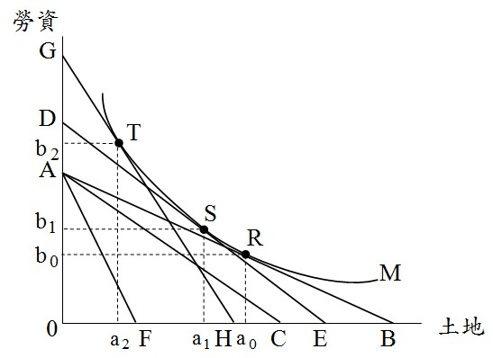


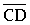
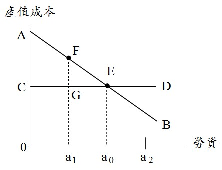
185. 違章建築之信託¶
發布日期: 2023-12-26
各位同學好
最近很夯的議題：違章建築可否信託（包含公益信託）？
新聞：違建物可否信託？ 法務部官員：信託不以登記不動產為限 可辦理信託 - 社會 - 自由時報電子報 (ltn.com.tw)
答案(通說)
可以，信託財產不以經登記的不動產為限，未經保存登記的不動產或違章建築物既均得為交易之標的並取得其處分權，自亦得為信託財產，由原取得人或取得處分權的人與受託人成立信託關係。
理由
-
可以作為私有財產權標的之物，即可作為信託財產，未經保存登記的不動產成違章建築物，仍可以作為私有財產權標的之物，因此即可作為信託財產。
-
但由於違章建築無法辦理建物所有權第一次登記而無法對外公示，不能對抗非明知或可得而知的善意第三人。換言之，未公示的信託財產（違章建築、未辦保存登記之建物）仍可主張信託財產獨立性，只是不能排除善意取得的適用。
參考資料：謝哲勝，2012，信託財產的獨立性－最高法院 92 年度台上字第 1594 號民事判決評釋，法令月刊，第63卷，第7期，第35-41 頁。¶
注：本文圖片存放於 ./images/ 目錄下
186. 農工爭地¶
發布日期: 2023-12-28
• 一、農工爭地之意義
發展工業需要工業用地，生產糧食需要農業用地。但台灣之土地資源畢竟有限，如何妥善規劃用地需求，以維持工業發展與農業生產之均衡。
• 二、考慮外部性之用地需求
如圖(一)所示，台灣土地如果全部用於農業生產，農業產量X0；如果全部用於工業生產，工業產量Y0。設農業平均價格P0，工業平均價格[圖片1]，則等收益線[圖片2]。生產可能曲線X0Y0弧線與等收益線[圖片3]之相切，切點R，決定農業產量X1，工業產量Y1。
[圖片4]
圖(一) 農業產量與工業產量之最適組合
• (一) 考慮農業生產外部利益：農業之多功能性，農業生產具有外部利益，因此對農業之評價由P0上升為P1。如圖(二)所示，等收益線由[圖片5]移至[圖片6]。將[圖片7]平行外移至[圖片8]，且與生產可能曲線相切，切點S。此時，農業產量由X1增加至X2，工業產量由Y1減少至Y2。總之，考慮農業之外部利益，增加農業用地，以增加農業產量；減少工業用地，以減少工業產量。
[圖片9]
圖(二) 考慮農業外部利益之產量變化
• (二) 考慮工業生產之外部成本：工業造成環境污染，工業生產具有外部成本，因此對工業之評價由[圖片10]下降為[圖片11]。如圖(三)所示，等收益線由[圖片12]移至[圖片13]。將[圖片14]平行內移至[圖片15]，且與生產可能曲線相切，切點T。此時，農業產量由X1增加至X3，工業產量由Y1減少至Y3。總之，考慮工業之外部成本，增加農業用地，以增加農業產量；減少工業用地，以減少工業產量。
[圖片16]
圖(三) 考慮工業外部成本之產量變化
文章圖片¶
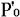


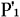

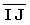

187. 民法 §172｜無因管理人之報酬請求權¶
發布日期: 2023-12-28
無因管理者可以請求報酬嗎？
無因管理人之報酬請求權
民法第172條規定，未受委任，並無義務，而為他人管理事務者，其管理應依本人明示或可得推知之意思，以有利於本人之方法為之，即所謂無因管理。無因管理人並得依照民法第176條第1項請求必要費用之補償。然而，民法對於無因管理人得否請求報酬並無特別規定。
對於無因管理人報酬請求權，學說有認為，如果無因管理之行為，剛好是無因管理人的專業工作，此時無因管理人可以向本人請求給付報酬，以此衡平無因管理人及本人間之權利義務關係。
舉例
甲行走於路上時，不小心被車撞，一旁的乙恰好是醫生，並立即前去施以急救，並順利為甲止血、穩定其生命跡象，甲亦因此康復出院。由於乙實際上並未與甲成立任何醫療契約，亦未受任何人委任為甲處理傷勢，故乙並沒有義務為甲施以必要緊急救助，但乙仍為之，此即所謂無因管理行為。又該無因管理行為恰好為乙之專業領域工作，故乙事後除得依民法第176條第1項請求必要費用之補償外，依學說見解，乙並得向甲請求報酬之給付。
Josh 老師提醒
無因管理人的報酬請求權，目前於民法中並未明文規定，因此考試作答時，請記得要看清楚題目敘述，若為申論題，並請記得表示是學說見解，而非法有明文規定。
．延伸閱讀
原文出處：Jasper 不動產
188. 民法 §819第1項｜共有人應有部分及抵押權設定¶
發布日期: 2023-12-28
共有人以其應有部分設定抵押權，是否不須經全體共有人同意？
共有人應有部分及抵押權設定
依照民法第819條第1項規定，各共有人對於其應有部分有處分權限。因此，各共有人均可以自由以其應有部分設定抵押權，無需經過其他共有人之同意。然而，如果該共有人設定抵押權之部分，已經超過其應有部分比例或及於共有物之全部，卻未經其他共有人同意，此時即屬無權處分。
舉例
甲、乙、丙三人共有土地Ａ，甲為了向銀行借貸，欲以Ａ地設定抵押權，此時甲得設定抵押權之範圍僅及於其所有之應有部分三分之一，超過其應有部分者，即非甲得自由處分之範圍，若擅自以超出其應有部分之範圍設定抵押權，即屬無權處分。
．延伸閱讀
原文出處：Jasper 不動產
189. 土地法 §68｜土地登記損害賠償之原因¶
發布日期: 2023-12-28
法規可能已修正
本文發布（2023-12-28）後，文中引用的 土地法第14條（2024-08-07 修正）有修正，內容可能與現行規定不同，請以全國法規資料庫的現行條文為準。
因為登記錯誤、登記遺漏或登記虛偽，而產生損害者，應由地政機關負損害賠償責任。
土地登記損害賠償之原因
登記錯誤: 登記事項與登記原因證明文件所記載的內容並不相符。
登記遺漏: 應該要登記之事項，遺漏而未登記。
登記虛偽: 違反與原登記同一性之登記錯誤。
Hank 老師提醒
要分清楚登記錯誤、登記遺漏、登記虛偽各自的意義，不要搞混了~
．延伸閱讀
原文出處：Jasper 不動產
190. 民法 §811、814｜添附¶
發布日期: 2023-12-28
將屬於不同所有權人之財產或勞力成果合併在一起，進而產生另一種不同形態的財產。
添附之種類
1.附合: 將物與他人之物加以結合，非經毀損不得分離，或分離費用過於龐大者。
2.混合: 將物與他人之物加以混和，不能夠辨識，或辨識費用過於龐大者
3.加工: 將勞力與他人之物加以結合。
Hank 老師提醒
添附總共分成附合、混合、加工三種種類，相對應不同之法條，來判斷其歸屬~
．延伸閱讀
原文出處：Jasper 不動產